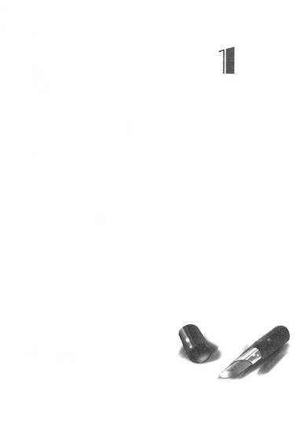

| [竹宮ゆゆこ] ゴールデンタイム5 | |
| 竹宮ゆゆこ | |
| (2015) | |
|
ゴールデンタイム５ ＯＮＲＹＯの夏 日本の夏
竹宮ゆゆこ
|
底本データ
一頁17行 一行42文字 段組１段
ゴールデンタイム５
ＯＮＲＹＯＵの夏 日本の夏
竹宮ゆゆこ
イラスト：駒都えーじ
あれは、星の光なのだろうか。
考えるまでもなくそんなわけはないのだけれど、闇の向こうに瞬く小さな光は、万里の目にはやっぱり星のように見えていた。
でも星があんなに地面に近い、低いところにあるはずがない。こんな身の上でもそれぐらいのことはわかる。だからきっと人工の造作なのだとは思う。
なにかしらか、照明かなにか、豆電球みたいな。
とにかく誰かがなんらかの意図で、あるいはミスで、ああして小さな光をあそこに置いたらしい。......もしくは蛍の光とか？五月の静岡に蛍はいないか。一般常識的に。
暗い夜空と、黒い山の端の裾。
昼間はこんもりと木々が繁るのが見える病院の敷地の向こうに、それは瞬いていた。木立の奥へなだらかなスロープが続く歩行リハビリのルートを大きく越えた辺りだ。
樹木と茂みの狭間から、まるで意志を持っているかのように、青白いかすかな光は今も明滅を繰り返している。
そのとき、弦を開放で弾くような軽い音を立てて、壁にかけられた時計の長針と短針が重なった。部屋の広さに比して時計が大きく見やすいのは、きっと、「ご臨終です......死亡時刻、何時何分......」「じ、じいちゃーんっ！」（一同合掌）とかやるときのためだろうと勝手に万里は思っている。
日付が変わった。
これまで幾多の人々のご臨終タイムを支えてきたのだろうベッドに、まだ生きている肉体を横たえて、万里は目を開いていた。その辺については一応、なにも感じていない、という体。死の気配などいちいち味わっていたら、病院暮らしはやっていられないのだ。
妙に重たい布団を肌蹴て、萎えた両足をだらしなくシーツに投げ出して、眠れないまま夜は深まっていく。頭は冴えていく。
病室の窓の向こうに瞬く、不思議な光の点をまだ見ている。
本当に、一体なんなんだろうと万里は思う。あれこれ想像を巡らせながら遠い闇にいくら目を凝らしても、やっぱり正体は知れない。
最初にあれに気がついたのは、三日前の夜だった。
消灯されて随分経った頃。いつものように眠れずぼんやり転がっていたら、窓の向こうにちらちらと瞬く光を見つけた。不思議に思って眺めているうちにやがて消え、見えなくなった。二時間ほどの出来事だった。
朝が来て、万里はその不思議な光のことを若い看護師に訊ねてみた。しかし「さあなんだろうね」でさらっと流され、「そんなことよりさあ！」ときた。
なんでそんな時間に起きてるの？ 眠れないの？精神科の先生と前回面談したときちゃんと言った？ちゃんと全部話してる？治りたくないわけ？......どうしたって普通の雑談などにはなり得ない、オフィシャルかつメディカルな雰囲気。万里は曖昧な笑みでツラを濁し、もういいや、と口を閉じ、舌を上顎にぺっとり貼り付けた。
昼のリハビリの時には、歩行ルートをさりげなく外れて、光が見えたあたりを実際に確かめてやろうと思った。しかしほんの一歩の半分ほどを踏み出しかけたところで、すぐ後ろをついてきていた理学療法のお兄さんに「危ない危ない」と窘められてしまった。
木立の中に初夏の気配を探したくて、つい～......とくねくね気持ち悪い言い訳をしてみたら、理学療法士は「それなら」と足元の野の花をいきなり一輪、引っこ抜いて万里の手に持たせてくれた。えっ......とたじろぐワイルドさではあった。とにかく外出はそれまでで、すぐに歩いて来たルートを引き返させられた。
白くて可憐な小さい花弁と、直線的な葉茎のフォルムを持つそいつ。人呼んで花ニラ──なのだそうだ。
万里のせいで根を千切られ、土から引き離されてしまったそいつを放っておくことはできなくて、コップに水を入れて枕元へあしらってみたら、〝おかあさん〟が「あ、花ニラじゃん」と教えてくれた。家の裏手にも今の時期、勝手にたくさん咲いているらしい。
こんなにかわいいのにニラなのかよ、と思わなくもないが、言われてみれば確かにニラだった。ニラ特有のオーラがビンビン出ている。
そしてその夜にも、謎の光は現れた。
二十三時を回ろうとした頃、万里は光の出現に気がついた。また出た！としばらく観察していたが、やはり二時間ちょっとでふっと消えていった。
やがて朝方からしとしとと雨が降り始めた。
ようやく訪れた浅い眠りに万里が落ちて、雑多な夢に追い回されて、寝る前よりも疲れ果てた気分で目を開いても、その雨は止んではいなかった。
日課のリハビリも病棟内で行われることになって、おかげで万里は一日中、外出することができなかった。もちろん花ニラ生息地の向こうにも行くことはできなかった。
一人での勝手な行動は基本的に許されていないのだ。
万里が一人でうろちょろして誰にも咎められないのは、この贅沢にも個室の病室と、同じく三階のフロアにあるトイレの行き来ぐらいのことで、診察はもちろん、リハビリにも必ず理学療法士さんか看護師さんが送り迎えしてくれたし、あれがないだのこれが欲しいだの、身の回りのことは〝おかあさん〟がほぼすべて面倒を見てくれていた。
みんな、とっても優しいのだ。
でも絶対に、『自由』などはありえない日々でもあった。
まるで檻に閉じ込めた怪獣を取り扱いかねて、とりあえず刺激しないで静かに生かしておこうと決めたみたいに、万里の一挙手一投足を、みんながある程度の距離を保って観察している......なんて感じている。そんな自分はひどいヤツなのかも。助けてもらって、こんなに良くしてもらっているくせに、とんでもない恩知らずなのかもしれない。
でも実際、そう思うのだ。この病院で入院患者として過ごす日々は、とってもとっても息が詰まる。
被害妄想などではなしに、観察──というかぶっちゃけ監視、されているのは事実だろうし。
白く冷たいシーツに身を横たえ、今夜も現れた謎の光を見つめ、万里はその正体を確かめる術もない己の身の上をぼんやりと振り返った。
一ヵ月半ほど前の、三月のある日。自分はこの病院に救急車で運び込まれてきた「らしい」。目を覚ましたときにはそれからすでに数日が経過していた。
気がつけば、複数個所の骨折に打撲、頭はぱっくり。息も絶え絶えで酸素マスクをつけられて、あられもないすっぽんぽん姿で転がされていたのだ。
開いたこの目に最初に見えたのは、闇だった。静まっていた闇がもやもやと煙のような陰影を描いて蠢きだして、初めて「闇を見ている自分」を知覚した。そのうちにもやもやは渦を巻き、上からポタポタと白い絵の具を垂らしたみたいな筋が混じり始めた。そのマーブル模様の回転は段々と複雑になっていき、やがて回転を止めた。白い天井と、四角い照明がくっきりと見えた。
はっ、と息を吸った瞬間に、すべてが始まった。
なにこれ......どこここ......痛い......苦しい......俺どうなってる......自分の状態を知りたくても身じろぎすらできない。そしてなぜか股間がめちゃくちゃ痛い。泣き声も上げられなくて呻いたら、誰かが視界の中に飛び込んできた。おしっこと呼吸の管が入ってるから、と囁かれても、さらに混乱は増すばかりだった。
ここは病院、救急救命病棟のＩＣＵ、意識が戻ったばかり、そんな状況を説明されてもわけがわからない。なぜこうなったのかもわからない。......自分が誰かも、わからなかった。
そしてこのときは、自殺未遂の患者だと思われていた。
だから記憶がない、自分のすべてを忘れてしまった、と万里がいうのも、死にたくなるほど失敗してしまった人生をチャラにするため、あえて装っている方便なのではないか？担当医は婉曲なごまかしもソフトランディングの意志もなしにズバリ、そう訊ねてきた。
違うのだ。本当になにも思い出せなくて、ただの転落事故なのか、自殺未遂なのか、自分でもわからない。もはや事実は確かめようがない。本人が忘れてしまったのだから。そう繰り返すしかなかった自分の説明が、どこまで信用してもらえたのかはいまだに謎だ。
ただ、万里はそんなふうに悩んだりする子ではなかった、確かに受験に失敗して浪人が決定していたけれど、上京して予備校に通いたいとも希望していた、だから自殺未遂などではないし、記憶は本当に失われてしまったに違いないと家族が主張して、公にこの件は「転落事故」ということに落ち着いた。
でも、本当に本当のところは、やっぱり誰にもわからない。だから監視されているのだ。
こうして檻に閉じ込めて、姿形だけは「多田万里」の、得体の知れない「なにか」を、みんな遠巻きにしている。
こんな暮らしが一体いつまで続くのかもわからずにいた。衣食住は保障されているけれど、ただそれだけの、檻の中。いつかここから出られる日は来るのだろうかと万里は思う。
それにやがてこの身体の怪我が完全に治って、外科病棟にいる必要がなくなったら、自分は一体どこへ送られるんだろう。考えると怖くなるから考えたくないが、やっぱり眠れぬ夜には考えてしまう。
普通に太陽の下を歩き回って、普通に誰かと心を通わせる、そんな普通の生活を送れるようになるのだろうか。
記憶は失くしても、なにが普通かぐらいはわかる。そういう概念は失われていないし、そこに「戻りたい」などとも思うのだ、不思議なことに。
ある日突然、はっ!? 俺は今までなにを!?とすべてを思い出せたら、それが最もいいんだろう。ついに完全なるハッピーエンド、笑顔と歓声の中に花びらが舞い散って、担当医や看護師さんたちの拍手に見送られ、自分は振り返りながら彼らに大きく手を振って、家族と友達の輪の中に駆け戻っていくのだ。そう、まるで悪夢から醒めるように。
悪夢。......悪夢、ね。
我知らず、万里は闇に短く低い息をついた。悪夢だろうがなんだろうが、これを生きていくしかない、たった一人の真夜中。
タオルを敷いた枕に片肘をつき、寝釈迦みたいな体勢で頭を起こす。裸足のつま先で布団をさらに遠く蹴りのけてしまって、おもむろにパジャマのズボンとパンツの中に片手をずぼっと突っ込む。......なにを触ろうというわけでもないのでご心配なく。温かな股間にこうして手を挟んでいるだけで、なにやら心がとっても落ち着くのだ。雨は、夜が更けるすこし前にやっと上がった。
ガラス越しの暗闇に、今も光は瞬いている。
（ほんとに、あれってなんなんだろうな......）
おととい、昨日、そして今夜。これで三日だ。いくらこうして眺め続けても、やっぱりあれがなんなのかはわからない。明るくなってから、リハビリのついでに確かめに行くことも叶わないだろう。なにかあったら支えられる距離でついてきてくれる理学療法士さんを撒くのは不可能だ。......いっそ一緒についてきてもらう？無理か。リハビリの途中ですが謎の光を探しに薮の中に分け入ってみませんか、なんて許してもらえるわけがない。いよいよおかしくなったと思われるのが関の山かも。
ちょっと首をねじり、顔を上げてみると、枕元の花ニラは萎れかけていた。くったりと寂しげに、白い花を斜め下に俯かせている。
その姿はまるで、一人ぽつんと項垂れて立っている女の子のようだった。やっぱりかわいそうなことをしてしまった。
口の中だけで小さくごめん、と囁いて、視線を戻し、正体不明の光を再び見やる。
（なにかの照明......にしても変なんだよな。あんなところに、あんな小さくて、意味なんかないもんな）
だいたい、あの光に気づくことができるのは、この病棟の窓からこうして外を眺めている暇なヤツだけだ。たいがいの患者は入院生活で早寝早起きが染み付いているからもう寝てしまっているだろう。
入院患者で、不眠気味で、でもメンタルの健全性を疑われるのが嫌だから薬がほしいと言い出せないヤツ。そんな狭い対象──ほとんど万里のことだけを差すようにすら思われる──に向けられる光って、一体なんだ。どんな意図で、どこの誰が。
（......もしかして、なにかのサインだったりして。合図みたいな......）
はっ、と万里は自分の考えに胸を突かれたようになって、思わずパンツから片手を引き抜いた。その手で自分の唇に触れる。なにを触っていたわけでもないのでご心配なく。
（合図？ 合図なのか？ 俺になにかを知らせようとしてる？......いやでもまさか。まさか......でも......）
一度そう思ってしまうと、ちらちらと跳ねるように瞬く光の点の動きは、まるで自分に見つけてほしがっているかのように見えてくる。
息を詰めて、万里はさらに眼を凝らした。
光は、おーい！ と。
ここ、ここ！ 見えてるか!? 気づいているかー!?──そう叫びながら瞬くようだ。
いやでも、さすがにそれはないだろう。まさか、だ。あまりにも馬鹿げてる。こんなことを考えてるなんて人に知られたら、本当に危ないイカレぽんちだと思われてしまう。ないない、ありえない。俺はまとも。事故の衝撃さえ脳に食らわなければ、俺は普通にまともだったはずなんだから。
自分の考えを結構必死に打ち消しながら、でも、万里は身を起こさずにはいられなかった。
光は明滅しながら左右に揺れ、万里が気づいて己の瞬きを眺めていることを察知したかの如く──いきなり、増えた。
「うおっ!?」
驚きの声を漏らしてしまった。
万里が見ているその前で、小さな光はいきなり二つに分裂するみたいに増えたのだ。そのまま踊るようにシンクロでぴょこぴょこ跳ね、瞬きながら消え、現われ、やがてまた一つしか見えなくなる。
「え、え、え......!? えぇぇ......!?」
端から見れば、さぞかしものすごい間抜けなツラになっていることだろう。でも、ポカーン顔をもはや自力では制御できなかった。きょとーん顔も合わせ技で、見開きすぎた眦が痛いほどだ。だって、こんなことってあるのだろうか。本当にいよいよわけがわからない。
謎の光は自分への合図で、なにかを呼びかけている。存在を知らせようと必死に瞬いている。だなんて、そんなことが本当にありえるのだろうか。
万里はついに、ベッドから降りた。
足音を立てないように素足のままでこっそりと、しかし、
「う......っ！」
やらかした。
枕元の花ニラのコップを、落としてしまった。幸いにもプラスチックのコップはさして音を立てず、割れもしなかったが、水はすべて零れてしまった。慌てて床から濡れた花を拾い上げ、片手にそっと握りこみ、片付けはとりあえず後回し。
哀れに萎れた白い花を掴んだままで窓辺に歩み寄り、力を込めて、固いサッシを開ける。
むわっとその途端、初夏の夜の青臭さが膨れ上がって万里の身体をわずかに部屋の中へ押し戻した。やがてすっぽり、包み込まれる。濃い緑の匂いと、生臭い雨上がりの匂い。清々と澄んだ夜空の匂いも。二度、三度、深呼吸をするたびに、万里が吐く息にも濡れた石みたいな静寂の色合いが混じっていく。
まだじっとりと湿った風が吹き込んで、病室にこもった濁った空気を一気にさらった。ベージュの重たいカーテンが、もっさりと波打って裾を揺らした。
光は、瞬いている。
万里に『おーい！』と呼びかけるように。『ここだよー！』と叫ぶみたいに。
ここにいるよ！ ここで光っているよ！ ──合図を、送っている。
でも一体何の合図なんだ。どうしろと言うんだ。
わけもわからないまま、ただ心臓が激しく高鳴り始めるのを万里は感じていた。立ち竦んだ足が、鼓動にあわせて震え出す。息が上がって頭がクラクラする。髪の毛穴がくすぐったくてぞくぞくする。
片手の中には小さな白い花。萎れかけて、命をギリギリ繋いでいた水も失い、いまや瀕死。枯れるのを待つだけの哀しい植物。でも半ば千切れた根はまだ瑞々しくて、急いで再び植え込んでやれば救えるような気もする。
「......」
もう一度、光を見た。光は変わらずに瞬いている。
まだ、光っている。
「......呼んでるのかよ？ 俺を？」
光って、
「......俺なんかを？ こんなのを？ 名前もない、なにもない、からっぽの、誰にとってもがっかりの、気持ち悪くて怖い、この俺を？俺のこと、本当に呼んでるのか？」
合図は闇に脈打つように瞬いている。そうだよ・そうだよ・そうだよ......。
でも、俺にできることなどなにも──そう思い掛けて、手の中の花を見た。自分のせいで理不尽に未来を絶たれかけている生命。
今ならまだ、間に合うのかもしれないと思う。なにもかも「できない」「許されない」「おかしく思われる」と諦めて、座り込んでいるしかなかったこの檻。ここを脱出できれば、こいつを救うことができるかもしれない。
というか......出たいのだ。
今、はっきりと思う。自分はここから出たい。外へ行きたい。あの光を探したい。胸いっぱいに息をして、思いっきり走り回りたい。誰に見咎められることもなく、誰の視線を気にすることもなく、どう思われるかとかそんなの一切なし、ただの自分になって駆け出したい。そうしたらきっとその先には、自由がある。
そこには自由に生きる、自分がいる。
ばかばかしいほど裏づけのない、しかしむずむずと湧き立つような「予感」が、一息ごとに万里の胸を熱くした。
光るあの合図を、呼ぶ声を、信じてみようか。信じてみたい。信じたいんだ、俺は。
詰まりそうな息を飲んで、脈打つ鼓動に身を震わせた。突き上げるように生きているこの肉体のド真ん中を貫いたのは（行っちゃおうか）という、衝動にも似た思いつき。
──行っちゃおうか。
このまま、一人で。監視の目をかいくぐって。あの合図を頼りに。思いのとおりに。この身を使って。手の中で俯き加減に揺れる白い花も、まるで頷いているみたいに見えた。うんうん！いこーよ！そとへいこー！そしてわたしをたすけてよ！そんなふうに。
その様子はとてもかわいらしく思えて、小さな笑いがつい口元に零れて、眠れぬ深夜のハイテンションで、
（......よーし！ 行っちゃえ！）
決めた。
窓の下を覗き込む。地面は遠くて、三階の高さにくらっと目が眩む。桟を掴んだまま、無意識に腰が引けて足が竦みかける。でも、決めたんだ。
大きく頭を振り、息を整え、一度思い切り膝を折ってぐっと深く沈み込む。勢いをつけて身体を跳ね起こし、万里は窓辺から身を引く。
そっとサッシを閉めた。カーテンも引いた。サンダルを秀吉スタイルでパジャマの胸元に突っ込んで、花を片手に握り締めたまま裸足の早足。ドアノブをしっかりと掴み、音を立てないように注意深く回す。押し開く。消灯された廊下に一度顔だけを出して右左、誰もいないのを確認する。大きく息を吸い、力を込めて肺に詰めて、音を立ててしまいそうに跳ねまくっている心臓を圧する。
そうして、万里は病室から裸足で一歩、踏み出した。
自分の心が求めるままに、そのまま続けて足を動かす。非常灯だけが緑に照らす静まり返った無人の廊下を、一人、歩いていく。床に淡く浮かぶ、壁際まで斜めに伸びた己の影。五本指で交互に踏みつけ、前へ進む。
緊張に喘ぐ胸を必死に押さえて慎重に、泥棒みたいに抜き足差し足、階段も慎重に降りていった。灯りがついているナースステーションの前はほぼ匍匐前進で、万が一にも見つかってしまったら「花の水がほしくて」で乗り切るつもりだ。
せり出したカウンターの下をくぐり、壁に張り付き、誰も出てきてくれるなよと祈りながら最難関をじりじりと突破。死ぬほど緊張していながら、己のその緊張ぶりに急に笑い出しそうになって、万里は必死に口を閉じる。鼻から「ふんっ......ふぬっ......！」と息が漏れてしまう。その音に、また笑ってしまいそうになる。
（もうちょい......！）
全力でダッシュしてしまいたいのをこらえて、音を立てないように全身の筋肉をプルプルさせて使い、太極拳みたいな動きで暗い廊下の奥、夜間出入り口を目指す。
忍者のように、暗がりに紛れ、呼吸も止めて、見つかってしまえば言い訳もできない患者丸出しのパジャマ姿。万里は（どうか......）と祈りながら前進する。亀みたいに首を伸ばして受付の様子を窺う。ラッキー、「御用の方はベルを押してください」。あそこは無人なんだ。
どうか、見つかりませんように......どうか誰も来ませんように......ドアに鍵がかかっていませんように......
たどり着いたガラスの重いドアを押すと、さしたる抵抗もなく、ガチャッと音を立てて外に開いた。おっしゃ、と小さな声が思わず漏れる。
身体が通る幅の分だけ押し開いて、そのとき。ゴッ！と、体の周りにいきなり空気が通う感覚があった。吸い出されるように、一歩、二歩。夜の屋外にまろび出て、全身にかかっていた圧力が急に軽くなったような気もする。重刀が突如、減じたみたいだった。
ぬるく湿気た風が万里の頬をやさしく撫でて、涼しく開いた目の前には、夜。
黒々と、夜だ。
蛍光灯の明滅する庇の下は、なだらかなタイルのスロープになっている。胸から体温が移ったサンダルを取り出して、もどかしく足を入れる。灯りの下では信長気分を味わっている余裕などなくて、後は夢中だった。
静まり返ったままの病棟を何度か振り返り、誰にも気づかれていないのを確かめつつ、万里は走り出した。
最初はよたよたと鳥の雛みたいに足がふらつく。体が重い。足が走るリズム感を忘れていて、四肢の動きがバラバラな気がする。どこに体重を乗せればいいのかもわからない。全身の統制が取れなくて、何度もつっかかりかける。一歩ごとに内臓が揺さぶられるようで、顎もガクガクする。入院生活ですっかり筋肉が衰えてしまったのだ。腕も振れないし、腿も上がらない。息がすぐに上がって、じたばたどたばたとみっともなく、でも、でも、
......ああ！ でも！
「......い、」
前を向いた。ぐっ、と一度目を閉じ、すぐに開く。頭上の天球は雨上がりの夜空。降るような星々。足の裏に固い地面の衝撃。風の音、遠い景色、夜の黒さ、水溜り。俺のだ、全部。全部全部俺が、この俺が、今、感じているんだ！
まったく伸びないストライドはやがて、万里の心のままに、低いところを滑るように距離を稼ぐ術を少しだけ思い出す。関節に油が継ぎ足されたように、膝も足首もやっとまともに動き出す。
「ぃやっほ──────────うっ！」
抑え目に、しかし腹の底から一声叫んで、万里は両手で風を受けるように胸を開いた。
夜空の向こうに山々の黒い影が見える。山の裾に広がる街の輝きも見える。風が優しく匂う。苦しく喘いで爆発しそうな心臓の悲鳴はこの際無視して無我夢中、ただひたすらに思いっきり地面を蹴った。全力でダッシュ。
......ほんとに、出てきてしまった！
やっちまった！ 多田万里！やらかしてしまった！こんなヤツなのか、俺って男は！
「わはははははははははははっ！」
バカみたいに笑えてしまって、ひどいフォームはさらにぐにゃぐにゃになりかける。光の合図を確かめるために、そのままリハビリルートの木立の中へ入っていく。
被さるように木々が枝葉を繁らせる暗い道は、しかしちゃんと舗装されていて転んだりはせずにすんだ。花ニラが群生しているところを見つけて、万里は激しく喘ぎながら足を止める。肩を上下させて動物みたいに息を荒げ、迷いなく草むらの中に踏み込んでいく。膝をつき、湿った土を手で穿り返す。手の中に握り締めていた花ニラの根を差し込み、そっと土をかぶせてやる。祈るような気持ちで、均した土を手の平でしばらく押さえてから、
「......よっしゃ！」
立ち上がった。滲んだ汗がこめかみを伝い落ちる。
土で汚れた手でパジャマを叩いて、余計に汚してしまいながら、そのまま茂みのさらに奥へと踏み込んでいく。胸ほどまである草を掻き分け、木立の向こうへ。
あの光は、こっちで瞬いていたのだ。
下り坂の斜面になっている真っ暗な獣道を、はやる気持ちを堪えつつ、おっかなびっくり下っていく。木々の陰になっているのか、今の位置からは光が見えなかった。
でも方角は間違っていないはずだ。サンダルの足を踏ん張って、もう一度光ってくれと万里は願う。合図をくれ。俺を呼んでくれ。さっきのように瞬いてくれ。そうしたらすぐに見つけられるから。
しかし、行く手には草むらの暗がりとさらに暗い木立が広がるばかりだった。
ふと、一人の胸に不安が落ちる。......もしかして、もう今日の合図は終わってしまったのだろうか？せっかく決死の脱出を敢行したのに、それでは確かめることができない。本当になにかの合図だったのか、それともやっぱり、ずっこけたくなるようなしょうもないオチがあるのか。ここまでくればもはやどっちでもいい。なんでもいいから、とにかくスッキリとした答えが欲しい。脱出してきた自分の行動に、意味が欲しい。その一念で万里は前へ進み続ける。
頼むぜ、と呻くように呟きながら、目の前に垂れ下がってくる枯れ木の枝を勢いよく払った、そのときだ。
「......うあ......っ」
ズッ、とサンダルの底が滑った。
慌てて体勢を立て直そうと身を捻って、バランスを余計に崩した。
自覚以上に弱っていたのにいきなり酷使された筋肉はもう力を失っていて、体重を支えることができない。万里は尻餅をつくように後ろへ倒れこんだ。そうしてそのまま、悲鳴。うわ、うわ、うわあー!?と急斜面の底へ向かって、無様に転がり落ちていく。
止まらない、止まれない、草むらの中を間抜けにすっ転がる。すっ転がりながら「漫画みてえだな!?」と突っ込みいれても意味などない。
やがて、ズザーッ！ と自動販売機から出てくる缶みたいに勢いよく、万里は草むらからアスファルトの地面に吐き出された。
為す術なく放り出されて、大の字になって転がって、
「......あ......」
やっと止まった。
空き地──なのだろうか。
呆然と、目を開いた。
頭上に被さる黒い枝の影はなく、遠い星の夜空が目の前に広がっている。
顔をゆっくりと横へ動かしてみて、そして、見た。
あの青い光。星の瞬きとは違う光。
光は二つあって、そしてそれはこの数メートルの距離で見てみれば、
「......ス、ニーカー......？」
ハイテクシューズのデザイン、であった。
つま先のあたりに蛍光灯のように強く光を反射する素材が、左右二つ。ちらちらとすぐそこ、２メートルほどの距離で光っていて、
「......おお......？」
シューズがあれば当然に、それは人間の足に繋がっているのだった。
ぼてっと転がったままで視線だけを上げていくと、細身のデニムを穿いた足は、くたくたのＴシャツを着た上半身に繋がっていて、その胸には長い髪が零れていた。
綺麗な、つやつやとしたストレートのロングヘアだった。頭の後ろで適当に、うなじに近い低いところで一つに結んで、それを片方の肩から垂らしているのだ。
女の子だった。
顎の尖った、白い顔。くしゃくしゃになって妙な癖がついてしまっている前髪。
ものすごい形相だ。「ぎゃ......」の形に口を開いたまま、彼女はほとんど白日。わなわな震えて、糸で吊られた操り人形みたいに肩をいからせ、万里を見下ろして硬直している。
そりゃそうだろう。万里も同感だ。
いきなり草むらから男がゴロンゴロンと転がり出てきたら、女子でなくとも、自分だって「ぎゃ......」状態になろうとも。
しかもそいつは。パジャマ姿で泥まみれ。どうやら幽霊的なアレでもなさそうで、普通に生きている生身のヤツ。心霊現象とかよりも、よっぽどリアルに危ないパターン。叫び声を上げて走って逃げて、警察にでも通報したくなろうとも。
でも、できたらちょっと待ってほしいのだ。
「......そ、そのまま......少々、お待ち下さい......！」
ひそめた声で囁いてみる。
背中が──腰もだ。痛めてしまったみたいで、とっさに起き上がることができない。軽く肩を動かしてみると、事故で折れて接いでもらったばかりの鎖骨については問題なさそうではあったが、それにしても。
「......あ、怪しいものではないのです......！」
我ながら、思いっきり怪しい感じになってしまった。よかれと思って「うふっ」と浮かべてみた笑みも、もう絶対に逆効果だった。彼女の形相のひきつり度合いはどんどんアップして、いまやほとんどウメズ絵状態。
痛みをこらえてわななく万里の声は、絵に描いたような変態そのもの......地面に泥だらけのパジャマで転がったまま、それでもなんとか健全さをアピールしたい。軽く片手を上げて見せた。振ってみる。襲ったりする意図はない、危険なヤツではない、通報されたりして大事になる前に、なんとかそれをわかってもらいたかった。
女の子は、まだあの顔のまま、呆然と手を振る万里を見つめている。ぐら、ぐら、と細い身体が前後に揺れている。両足はもはやバンビでガクガク、生まれたての小鹿。......早くわかってもらわなければ、この女子、恐怖のあまりに死ぬのかも。
「あの......俺、あそこの病院に入院している者なんです！」
起き上がれないまま必死になって、万里は木立の向こうの高台に見えているはずの病棟を親指で差してみせた。
「なぜこのようなことになっているかというと、実は、その光が！」
次に彼女が履いているスニーカーのつま先を。
「部屋から見えて！ なんだろう、と！すっごい不思議ではないか、と！色々、一人で考えてて、それで、つい、なんというか、確かめたくなって......ですね......」
すっ転がったまま懸命に状況を説明しようとする万里を見ながら、彼女はついによろめいた。酔っ払った人かやじろべえかなにかみたいに大きく左右にふらふら揺れてから、
「う、わぁぁ......っ」
妙な悲鳴を一声、上げた。
万里のツラを指差して、そのままアスファルトにどさっと座りこむ。なんてこった、なＭ字開脚。
「......だ、大丈夫!?」
思わずそう言ってしまってから、
「あ、俺こそ大丈夫って感じ!?」
ふと我に返って己の状況を思い出す。入院患者のくせにこんな夜中にこんなことになっていて、人の心配をしている場合でもなかったのだ。
「......だ、だだ......だ、」
彼女はまだ声を震わせたまま、はしたなくＭ字で腰を抜かしている。だ、だだ、大丈夫、私は大丈夫ですから近づかないでキャー！とか言おうとしているのだろうか。
しかし、そんな予想を裏切って、
「誰か......病院から......呼んで、来ようか......!?」
スニーカーを光らせながら、彼女は万里を気遣ってくれる。うわー、優しい人なんだなー......と万里は思う。こんな意味不明な状況で、自分もＭ字のくせに、怪しい不審者の心配をしてくれるなんて。
「いや、いいです！ それは大丈夫です！」
きっぱりと、万里は首を横に振ってみせた。
「俺、脱走して来ちゃったんです！ なので人を呼んでもらうわけにはいかんのです！動けるようになったら自分で戻りま......んふ......っ！」
やばい、と思う。
いけない、耐えろ、しかし──んふっ、んふふっ、んふふふふふ......笑いの発作が突如、万里を襲う。鼻の穴から鼻水ごとぶしゅっ！と息を噴き出して震える。
だって見てくれこのザマを。野外でドロドロ、大の字になってすっ転がっている自分と、それを心配しながらＭ字開脚で腰抜け状態の女子。
この二人の図は......端から見れば......これって相当......
「なっ、なにやってんだか......っ......んはっ、ははははははははっ！あはははははっ、はははははっ、わははははははははっ！」
まだ起き上がれない全身をびっくんびっくんエビみたいに反らし、万里は急激に笑い出す自分を止めることができなかった。
「あ～ははははっ......いででででっ、わはははっ、あいたっ、ひ～～あっははははっ！」
身を捩るたびに痛めた背中が痛む。でも一度起きた発作を収めることは難しくて、万里は涙を流しながら大笑いし続ける。もはやなにがおもしろかったのかさえもわからない、ただただ笑えて、おかしくて、止められない。腹筋が痙攣して、失禁すらしそうだ。Ｍ字女子は腰を抜かしたまま、ぽかーんとそんな万里の狂態をただ見つめている。
まったく、なんて夜だ。
「......そ、それが......っ」
笑いをなんとかこらえようとしながら、万里はＭ字女子のつま先をもう一度指差した。
見開かれたままの彼女の二つの瞳は、暗闇の中でキラキラと強い光を放っている。この距離から見れば、靴なんかよりも、彼女の瞳の方がずっとずっと輝いてみえた。
潤んでいて、澄んでいて、真ん丸くて、思わず見とれてしまうような......って、なんだなんだ。急に照れてしまい、笑いもいきなり引っ込んだ。
やたらと吸引力の強い彼女の瞳からどうにか目を逸らして、万里は一息。それから何度か、深く。こっそり息を整える。
「......それが、光ってるのが、ほんと、よく見えて......あー苦しい、笑いすぎた。......そう、よく見えてたんだ。俺の部屋からはそのキラキラが、星みたいに見えた。なんなんだろう？って不思議に思って」
「......」
Ｍ字女子は、万里と２メートルほどの距離で座り込んだまま黙り込んでいる。しかしその身体にはぐっと力が入っていて、強く息を詰めているのが万里にもわかる。やっぱりこんな頭もおかしげな、怪しいヤツと対峙しているのが怖いのだろうか。警戒しているのだろうか。
「......でも、星のわけないじゃん、と」
これ以上怖がらせないよう、穏やかな声を出そうと努力してみた。さっきみたいな馬鹿笑いではなくて、最初の変態笑いでもなく、普通の笑みを浮かべようともしてみる。
「だから、もしかして誰かが俺に『合図』を送ってくれているのかなー、とか、思って。なんというか......脱出の合図？みたいな？こっちこっちー！って呼ばれてるみたいに思えて、導かれてるみたいな気がして、それでこっそり病室から脱け出して、病棟を抜け出して......その挙句にこうなりました。はい、アホ丸出し！」
己のアホさをてれーん！ と開陳しながら、笑ってくれないかな、と万里は思った。
しかしそう簡単にはいかず、
「......そ、......っか......」
喉の奥から搾り出したような声は、そんな硬いひと言。白い頬は強張ったまま。しかし、ややあって、彼女の肩が深い呼吸に一度上下するのが見えた。緊迫感はほんのちょっとだけ緩んだ気がするけれど──なんて、希望的観測がすぎるだろうか。
そろそろと身体を起こそうと試みて、「う！」と万里は呻いた。背中がやっぱりまだ痛い。再びどさっと倒れた万里を見て、Ｍ字女子は驚いたように顔を跳ね上げる。反射のように手を差し伸べてくれようとして、
「大丈夫大丈夫、俺のことは気にしないで」
万里の言葉に、その手を止めた。遣るべなし、出に浮かせた。
「......」
Ｍ字女子はその妙なポーズのまま、半ば口を開き、眉を寄せ、なんともいえない顔をして万里をじっと見つめている。
その表情に混沌と渦巻くような感情は、恐怖か、緊張か、驚愕か、......万里には理解することができない。
ただわかるのは、それでもどうしようもなく、彼女は万里のことを心配してくれているらしいということ。彼女自身、腰を抜かしてＭ字状態から動けないでいるのに、万里から一瞬たりとも目を離しはしない。ここから逃げたがっているようでもない。宙をまだ彷徨う手は白い。
「......それより、そのシューズのキラキラ」
大丈夫ですまじで、と言い足すかわりに、万里は声を明るく張った。
「なんであんなふうに光って見えたんだろう。俺の病室からは本当に星みたいに、ぴかっ、ぴかっ、て見えたんだ」
「......それは。......多分......」
宙に浮いた手を、彼女はそっと自分の身体の横についた。
そうしてよろよろと、自分の足元を確かめるようにしながらゆっくり立ち上がる。
「私が、うろうろしてたせい......かな」
まだわずかにふらつきながら、万里をもう一度見た。何秒かそのまま動きを止めて、万里の目を、顔を、丸坊主にされた頭を、入院患者のタグがつけられた手首を、サンダルをすっ飛ばして汚れた足を、万里の全身を、万里自身がその視線に耐えられなくなるギリギリ寸前まで、見た。
やがて、髪を揺らしてふいっと横を向いた。
「こうやって」
彼女は万里が見ている前で、左右へ数歩ずつ行ったり来たりを繰り返してみせる。するとなるほど、光は歩くのに合わせて弾むみたいに瞬いた。
「ああ、それだ！」
万里は思わず声を上げた。
ちょうど彼女が方向転換、クルリと身を翻したそのとき、うまい具合に左右の足の光が一瞬重なり、また離れたのだ。星がいきなり分裂したみたいに見えたのはこれだったのだ。
なるほどね、とすっきりと納得すると同時に、しかしもう一つの謎が生まれる。
この、自分と同じぐらいの年齢に思える女子は、こんな時間にこんな場所で、なぜ一人でうろうろとしていたのだろう。それも......そうだ。三日間にもわたって。
彼女の背後には、ヘルメットをハンドルに引っ掛けたボロいスクーターが見えた。あれが彼女の足なんだろうか。
「......一人で、どうしてこんなところまで来たんだ？危なくない？」
思わず訊ねると、
「下から山を上がってくると、ちょうどここが行き止まりなんだよ」
答えになっているような、いないような。
「ていうか......三日前ぐらいから、来てなかった？」
「ゴールデンウィークに入ったから」
これも答えになっていない......いや、なっているか。そうか、世間は三日前から連休に突入していたんだっけ。リハビリの予定や診察が、あれこれずれたことを万里も思い出した。
でも連休に入ったからって、ここでうろつく理由ってなんなんだろう。そう訊ねてみようとして、ちょっと考える。さすがにそこまで訊くのは、他人の事情に立ち入りすぎだろうか。初対面の、こんな意味不明な出会いをしてしまった相手に対して踏み込みすぎか。
万里は、立っている彼女の顔を見上げて表情を窺おうとした。ちょっとでも不快げな色を見つけたら、これ以上話をするのはやめようと思ったのだ。そして「もう遅いから帰りなよ」と言おうと思った。
しかし彼女は万里の視線に気づくと、癖のついた前髪を指で押さえるようにして、その顔の目の辺りを見せないように半ば隠してしまう。そうしておいて、
「......ここから、私、病院見てたんだ」
唇だけで、わずかに笑ってみせた。
「友達が入院してるのよ。でも、会いには行けないの。......心配で、堪らない。だからせめて様子がわからないかな、って。......できるだけ近くまで、行ってみようかなって」
不意に、万里は思う。
ひょっとしてこの女子、昼間もここにこうしていたのではないだろうか。昼間はスニーカーの光が見えないから気づかなかっただけで。
友達のことが心配なんだ。──そんなにも。
そう思うと、ぎゅうっといきなり胸が締め付けられるように痛んだ。そこにはもはや触れられなくなって、
「......お休みになってから来たってことは、近くに住んでるんじゃないの？」
会話の先を、思わず逸らした。うん、と彼女は唇だけで微笑んだまま、頷いてみせてくれた。
「東京だよ。私、東京から来たんだ。大学生」
「へえ、そっか。......そうか、いいなあ......憧れるな」
「......憧れる？ 東京に？」
万里が漏らした声に、彼女はふと目を上げる。濡れたように光っている、わずかにつり上がり気味の綺麗な二重が万里をまっすぐに見据える。
「うん。憧れるよ。だってさ、ここにいると、ほん......っっっとに！閉じ込められてるような気がするんだよね。ずっと永遠にここから出られないような気がしてきて、ず～ん、って自分が暗く、鬱屈していくのがわかるっていうか」
「......あのさ、こんなこといきなり訊いて悪いけど、......そんなに身体、悪いの？」
「おう。悪いよ」
できるだけ重くならないように、万里は軽く答えたつもりだ。そうなんです。悪いんです。
身体のケガはともかく、失われた記憶は──一体どうなるのか、誰にもわからない。一生このままかもしれない。一生病院暮らしかも。一生、普通の生活など望むことはできないのかもしれない。
誰にもわからない。
「......退院できないの？」
「したいよ。俺はね」
身体に力を入れて背筋から体重を逃がしながら、そろそろと万里は上半身を起こした。座り込んだ体勢で軽く腰を捻ってみる。痛みはあるが、耐えられないほどではない。
とはいえ顔を歪めた万里の姿を、彼女はずっと見ていた。足を釘付けにされてしまった人のように、すこし離れたところでまた硬直している。その手が、迷うみたいにこちらへ伸ばされかけるのを万里は見た。万里を支えようとしているみたいだった。
いいよいいよ、大丈夫。そう言いながら、万里は痛む背中をゆっくりと慎重に伸ばしてみる。彼女との距離は２メートルのまま。
「あいたたた......ああ、いいな。東京」
息を逃がしながら、口にする。
「俺も行きたいな。東京で大学生になったら......ていうか俺は浪人中なんだけど、そしたらこの檻からおさらばできる。逃げられる、って気がするよ。２００キロちょっとの距離を稼いで、そのうち本当に逃げ切ることもできるかも」
「......檻っていうのは、病院のこと？ 入院していることを言ってる？」
「うん。それも込みで。今、俺を縛る人間関係、しがらみ、そういうの全部ひっくるめて。色々事情があって、ものすごく......こう、閉塞感みたいなのがあって。あ、どうせなら東京よりももっともっと遠くがいいのかな。沖縄、北海道、いっそ外国とか」
「......東京が、いいと思うよ。......た、」
彼女は不意に一瞬、なにかが胸に詰まったみたいに言葉を切った。でもすぐに、
「楽しいよ。よかったら、おいでよ。こっちに、おいでよ」
そう継いで、にこっと笑ってくれた。
その笑顔を見て、万里は思った。──本当に行きたいな。いつか、東京に進学で出られたらいいな。キャンパスでこんな笑顔の子と出会えたらいいな。そうしたらきっと、ものすごく素晴らしい、輝けるような日々を生きられるに違いない。夢のような新しい日々を。
そして気がつく。
自分は今、生まれて初めて、未来にやりたいことを見つけた。
これまでは先のことなんか、たちの悪いホラーのような展開しか想像できなかった。でも今は、違う未来を見ている。今、この胸に灯ったこれは、きっと「希望」というものだ。
万里は思わず自分の心臓の辺りを手で押さえた。高鳴っている。希望を抱いて、自分は今、生きている。この先の未来も生きたいと願っている。
うわ、と我知らず、口の中で呻く。
この胸に突如小さく灯った希望のパワーは凄まじく、はっきりと万里に「次の一歩」のビジョンを見せた。まるで地を伝って走る炎のようだった。
朝が来たら、東京に行きたい、と。それを目標にしたいんだと、担当医や母親、父親にも話してみたい。そう思ったのだ。......明日の朝が来ることを楽しみに待つ、なんていうのも、生まれて初めての体験かもしれない。
そんなことをいきなり言い出して、どう思われるか、許されるのかどうか、彼らの反応は読めなかった。でも、自分の思いや意志をきちんと伝えたかった。ここから出たいんだ、そう思う自分のことを、わかってもらいたい。
そしてさらに連鎖するように気がついたのは、今まで、いかに自分がそれを避けてきていたかということ。ビクビクと周りの視線ばかりを気にして、偽者と疎まれるのが恐ろしくて、自分の心の中身など誰にも漏らすことはできなかった。
それこそが、檻だったのだと思う。万里は今まで、自分自身を自分自身で檻に閉じ込めていたのだ。
そんなのはもうやめたい。自由を、取り戻したい。さっき走り出したあのときみたいに、心のままに。あんなふうに目一杯に身体を使って、生きていくことそのものが「自由」なんだ。この身がどこにあるかは全然関係なくて、心と身体を思うままに使うことが「自由」なんだ。両目が、この夜の闇の中で、やっとはっきり開いたように思えた。
「......ありがとう！」
「え？」
かなり唐突に響いたかもしれない万里の言葉に、彼女は驚いたように顔を跳ね上げた。
「合図をくれて、ありがとう。俺への合図じゃなかったのはわかってるよ、でも俺にとっては、それが、君の光が、飛び出す合図だった」
心からの思いだった。
ありがとう、本当に。ありがとう──万里は繰り返した。そして、
「その合図で、飛び出してよかった！」
腹の底から清々と笑った。
闇に瞬いた彼女の光は、飛び立つ合図を万里に送ってくれていたのだ。
そうして、勇気を奮い立たせて無我夢中で駆け出して、万里は星を見つけた。ちゃんと見つけたのだ。失われつつあった自分の一部を、生命そのものの一部を、取り戻すことができたと思う。
彼女は、まだ驚いた顔のままで、笑う万里を見ていた。
「お礼に俺ができることはなんでもするよ。そうだ！君の友達を病棟の中で捜し出して、もしも会えたら、伝言を届ける」
「......もしも、会えたら......？」
うん！ と大きく頷いてみせる。しかし彼女は、万里の申し出に、すこしも嬉しそうな顔をしてはいない。半分は笑った顔のまま、残り半分は悲しげに歪めている。
やっぱり想いは自分で伝えたいのだろうか。......それはそうかもしれない。誰かに伝言を頼むよりは、自分で直接会いたいに違いない。その気持ちは万里にもわかるが、しかし。
「約束するよ。君の伝言を、君がここに来ていたことを、ちゃんと伝える。だからさ、もうこんなところに一人で来ない方がいいよ」
「......え......」
さらに彼女の表情が曇る。
「危ないじゃん、やっぱり。こんな真夜中に、人気のないとこにさ、いくらスクーターでも一人でなんてだめだと思う」
万里の顔を見返して、彼女はほとんど泣き出しそうに白い顔をまた強張らせている。言い聞かせるように、万里はその顔から目を逸らしはしなかった。
「あせらないで、友達が戻ってくるのを待っていたらいいと思うよ。君の合図はいつか必ずちゃんと届くよ」
だってあんなにも綺麗にキラキラと、星のように瞬いて、自分の目だって開かれたほどの輝きを持っているのだから──万里はそう思うのに、
「あ......合図、なんて......」
彼女は両手で顔を覆い、とうとうそのまま深く俯いてしまった。
「合図なんて、もう、今更届いても遅いんだよ。私は間に合わなかった。......合図でも、なんだっていいよ。声でも、なんでも。なんだっていいよ。あのとき間に合っていたら、それでよかったんだよ。私にはでも、もうなにもできない。なんにも......もう、なんの力にも......」
くぐもった声に不意に涙が混じったのがわかり、万里は驚いた。打たれたようになって、なにも言えなくなってしまう。
「この手が、間に合ってたら......ねえ、あの瞬間に間に合っていたら、そしたら、そしたら......って。あんな恐ろしい危機の瞬間から救えたんじゃないか、あんな目にあわせずにすんだんじゃないかって、そればっかり考えちゃうんだよ！ねえ......！」
叩きつけるような彼女の声は、自分に向けられているようだった。
「そうしたらしっかりその手を掴んで、私は絶対に離したりしなかった！絶対に！どんなに重くたって、私は絶対にあんたを、」
そのとき走った違和感を、万里は聞き流すことができなかった。
「......あんたって？ 俺？」
だだ漏れるように連ねられていた言葉が止む。
「今、俺の事故の話をしてるの？」
彼女のいう友達というのは、他でもない、多田万里のことなのか？身を引き、彼女の顔を見直した。
「......もしかして君は、俺の関係者？......前の俺を、知ってる？」
多田万里の友達──つまり、今の自分の異常性をなによりくっきり際立たせる、今の自分の存在をなにより激しく拒絶し、責め立てる、今一番会いたくない類の人間なのか？
しかし、
「......いいや、違うね」
返された声は、もう震えてはいなかった。腹を決めたみたいにしっかりと、
「あんたのことは知らない」
そう継がれる。なぜかその後に「ごめん」なんて言い足して、彼女は急に身を翻した。
夜の闇に結んだ髪を揺らし、座り込んだままの万里にくるりと背を向けて、停めてあったスクーターの方へ歩いていく。ヘルメットを手に、慣れない様子で古びたシートに尻を落とす。
どうやらこれで行ってしまうつもりのようだった。釈然としないまま、しかし万里はまだ立ち上がることができず、待ってとも言えず、もうちょっと話そうなどと言う理由も自分では見つけられず、
「なあ！ 伝言は!?」
なんとかそれだけ、声をかけた。彼女はヘルメットをかぶり、顎の下でしっかりとベルトを締め、キーを回す。スクーターのエンジンをかける。キュ、ルルルルン、とやや間の抜けた音。その音の隙間をかいくぐるように、
「がんばれ、って伝えて！ ......あ、あんまりそういうのって言っちゃいけないんだっけ」
彼女は数秒黙って、もう一度息を吸った。そうして、
「××××！」
海獣の仔の鳴き声を思わせるエンジン音を立てて、そのまま走り去っていく。肝心の、伝言を伝えるべき相手の名前も告げてはくれなかった。それを訊かないと意味ないじゃんか、と万里が気づいたときには、辺りはもう夜の静寂に包まれていた。
一人取り残されて、万里は、それでもしばらく木立の向こうに遠ざかりつつあるはずの赤いテールランプを探そうとしていた。
しかしそれは二度と光らず、見つけることはできなかった。
まるで夢の一幕みたいな、不思議に現実感のない、とある夜の出来事だった。
──でも確かに、現実の出来事だった。
それはわかっている。
あのときのことを、今も、無事に退院して、本当に東京に出てきて大学生になった今も、万里は忘れてはいない。
記憶の中にあった顔は、大学で今も見かける顔といつしか結びつき、あれがリンダだったこともちゃんとわかっている。
ただ、いまさらわざわざ確かめることなどしない。その必要はないと思っている。あれはリンダだったと自分がわかっていればそれでよかった。
リンダがあのとき、自分を知らないと誤魔化した理由はわかる。他でもない、万里が自分で「元の知り合いが見舞いに来ても絶対に会いたくない」と母親に訴えていたのだ。来ないでほしい、という言い方で、それは知り合いのみんなに伝えられていただろう。あの時期、あの状況で、リンダが正しく名乗れるわけがなかった。
そして、もう二度と過去を振り返りはしない、過去のことはお互いなかったこととする、そうリンダとはっきり決めた今。
あのときのことを蒸し返す理由も、今更二人にはありはしない。
あのときリンダが会いたかったのは、この世にもういないヤツだ。自分が会ったリンダは、この世にもういないヤツの足取りを手繰って現れた女の子だ。もういないヤツを介して繋がり、出会ってしまったあのひと時は、幻みたいなものだ。「なかったこと」だし「振り返ってはいけない過去」とカウントするのがきっと正しい。
しかし、どうしても一つだけ気にかかることがあった。
思い出せないのだ。「がんばれ」を訂正して彼女が口にし直した言葉だけが、なぜだか記憶の中でエンジン音にかき消されたみたいになって、思い出すことができない。あのときは聞こえていたはずなのに、いつ忘れてしまったのかさえも、もはや自分ではわからない。
時折、リンダはなんと言ったんだろう、と考えることはあった。しかし、思い出してはいけないのだ、とも思う。
だから忘れたままでいいのだ。これでいい。あの夜の出来事は、ただ過ぎ行く幻の風のように、時折胸の内側を優しく撫でていく。
それだけで十分なのだと、今、万里は思っている。
そして東京には夏が来る。

１
東京に夏が来れば、埼玉にも夏は来る。
法学部日本祭事文化研究会──通称「おまけん」に所属する男子陣・十余人の姿は今、埼玉県某市の商店街の外れにあった。
いかにも儲けていそうな寺が所有する、広大な駐車場。その片隅にいくつも軒を連ねるように設置されたテントの一つの下に集まって、申し訳程度に置かれたたった一台の扇風機の前に雁首並べ、もはやほとんど会話もない。
時折誰かが力なく「風が囁いています......」と呟くと、別の誰かが同じく力なく「暑い、暑すぎる......」とお約束のように返す。そうすると何人かが「んふふふ......」と笑うばかり。元ネタのわからない万里にはそんな謎の掛け合いに参加する気力もなくて、
「阿波踊りって、夜にやるもんなんじゃないすか......？なぜこんな炎天下に......？」
しゃがみこんだ体勢のまま、火照った顔よりは冷たく感じる己の二の腕に濡れた頬を押し付けて呟いた。目を閉じると眼球まで熱く火照ったようになっていて、目蓋の裏にじゅわっと沁みる。
万里のすぐ後ろ、パイプ椅子にだらりと座っていたコッシー先輩は、
「38度」
とだけ。
「......板門店ですか？」
軍事境界線の話題かと思った万里に首を振り、
「今。38℃だってよ。気温。考えらんねえ」
手にしていたスマートフォンの画面を向けて見せた。現在地の気温が表示されていて、確かに38℃とある。おお......と万里も低く呻くことしかできない。道理で自分の素肌の方が、外気よりもひんやりしているように思えるはずだ。
せっかくしりからげに着付けた浴衣の胸元を、転がるように汗の玉が伝い落ちていく。まだ踊ってもいないのに、早くも万里の全身は汗でびしょ濡れだった。他の奴らもみんな、背中の辺りの生地の色が濡れて変わってしまっている。
真夏の埼玉はとにもかくにも暑すぎて、ほぼ地獄と呼んで差し支えなかった。日本でも有数の高温記録を叩き出す地域にもほど近く、しかもこの晴天。地獄の地番は恐らく灼熱一丁目。時折風は吹くのだが、ドライヤーの熱風で煽られているのと変わりはしない。ギラギラと燃え盛るような太陽は午後になってもなお意気盛んで、地上の生物をいっそ根こそぎ焼き尽くそうとしているかのようだった。
このテントの影から一歩でも出れば、強烈な直射日光の光線を浴びることになるはずだ。そしてコンロで炙られているかのように肌も焼かれてしまうだろう。万里は着替えの前に香子に持たされていた日焼け止めを顔にも腕にも塗っておいたのだが、この汗だ。すでにほとんど流れ落ちてしまったような気がする。
塗り直そう、と足元に置いたリュックからプラスチックの容器を取り出し、思いっきり上下にシェイクする。陽気なメキシコ人が振りまくるマラカスみたいな音がして、
「なにそれ？」
コッシー先輩が不思議そうに万里の手元を覗き込んできた。
「日焼け止めです。先輩もどうすか？」
「なにぃ？ 日焼け止めぇ？ やだよ、うちの一年はそんなの塗っちゃう子だったわけ？」
女々しい～、と指差されて笑われつつ、万里は全然気にしない。手に取った良い香りのする白い液体を、指先でちょびちょびと頬骨のあたりになじませていく。鼻筋、額、顎、うなじ、胸元。香子に教えてもらったとおり、少しずつ、肌を擦らないように丁寧に。
「塗ってますよ。紫外線ってほんとにやばいらしいし」
「ははー、ロボ子みたいなこと言ってんなよ。すっかり彼女に影響されちゃって」
「いいんですか？ 今日のこの日差し、なんかすごいですよ。ほとんど暴力みたいな」
「うるせえな、野郎が日焼け気にしてどうすんだ」
「ほーんとにいいんですか？ 肌細胞、根こそぎ死んじゃいますよ？『日焼け日焼けと世間はかる～く言ってくれるけど、ぶっちゃけあれは火傷だよ！ＤＮＡの損傷だよ！お肌の大虐殺なんだよぉぉー！』って、彼女は言ってました」
「ばーか、なにを大げさな。日焼けなんて夏になりゃ誰だってガキだってするだろうが」
「香子の弟はハワイで帽子を被るのを忘れて、脳天から蜜が垂れたそうです」
「......蜜......だと？」
「はい。出てはいけないヒトのシロップが、たらっと出ちゃったんだそうです」
「......ちょ、ちょっとだけもらっていい......？」
「どうぞどうぞ！」
「あ、マジでちょっとだけね、ちょっとでいいから......」
「まあまあそう言わず！ おっとっとおっとっと！」
「あっ、多い多い......もうもうその辺でその辺で......」
「いやいや先輩、もうちょっといきましょうよ～！首筋とかにもちゃんと伸ばしたほうがいいらしいですよ！できたら脳天にも！ほらこうやって......こんな感じで」
「え～、......こう？ こうかな？ これであってる？」
慣れない手つきで野郎が二人、日焼け止めの乳液を顔を中心に指で塗り伸ばしていく。こんな動作をしていると誰でもなんとなくフェミニンな気持ちになっていくもので、万里もコッシー先輩も、心なしか肘を内側に寄せて脇を締め、うふ、と恥ずかしげに微笑みあってしまう。
ちなみにおまけん女性陣はまだ寺の座敷で支度中らしく、一人も屋外には出てきていない。準備のためのスペースに仕切りもない一部屋しか与えてもらえず、男が先にさっさと着替えて、時間がかかるだろう女どもに部屋を譲ってやったのだ。
おかげで、待ち時間いっぱいをこうして灼熱地獄の炎天下で潰さなければいけなくなっているわけだが。
「えっ!? なに、コッシーたちメイクしてんの!?」
三年生の先輩の一人が、微笑み合いつつ乳液を馴染ませている万里たちに気がついて声を上げる。笑いながらコッシー先輩が首を振り、
「違う違う、多田万里に日焼け止めもらって塗ってただけ」
「うおー、びっくりしたぁ。俺らもついに『キャッツ』するのかと思ったぜ」
キャッツ、というのは、ちょっと離れたテントの下に同じようにだらりと陣取っている別の連の人々のことを差す。
その連では、女性たちだけではなく、男もみんな白ピンクのドーランで歌舞伎役者のように肌を塗りこめ、鼻筋をくっきり通し、目蓋には漆黒と朱のアイラインを引いていたのだ。胸元やうなじにはラメまでキラキラ光らせていた。ここに集合してきた際、通りすがりに見てしまい、思わず誰かが「キャッツじゃん......」と。それもアリなのかはたまた邪道なのか、今回が初参加のおまけんメンバーには判断のしようもないのだが。
頬を少々テカらせてコッシー先輩も言う。
「連ごとの方針なんじゃない、ああいうのはやっぱ。とりあえず、俺らが混ぜてもらった連は野郎はすっぴん勝負だから」
万里が所属するおまけんは、今回、近隣の私大サークルいくつかが合同で結成した「連」に合流させてもらって、この商店街主催の阿波踊りに参加することになっていた。
借り物の揃いの浴衣に、新品真っ白のゴム底足袋。鮮やかな萌黄色の裾には流水を模した水色の模様。その背中には大きく斜めに「関東私学阿波踊り研究連合会」の文字が入っている。それを思い切ってしりからげに着付け、白のパッチにサラシも巻いて、揃いで渡された藍色のうちわを持った。あとは頭に手ぬぐいを締めるだけで準備は完了だ。
ちなみにおまけん男子ではただ一人、コッシー先輩の浴衣だけは片肩から裾にかけて黒と金の市松模様が入っていて、カラフルな集団の中でさらに派手に目立つ仕様になっている。
筋肉質のスポーツマン体型なのもあって、すっと立ち上がったその姿は、真夏の光に照らし出されてくっきりと際立つようだった。どこかサルっぽい顔立ちではあるが、なんだかんだ、かっこいい人なのだ。やなっさんとはまた違うジャンルのイケメンぶりだと万里は思う。
手に余ってしまった日焼け止めを中腰で膝小僧のあたりにも塗りつけながら、自分の衣装姿を見下ろした。どうも先輩たちのようにはきりっと着られず、胸の辺りが早くも緩んでしまっている。コスプレ気分で楽しくはあるが、もうちょっとこう、なんとかならないものか......締めた帯を未練たらしくグイグイいじくってはみるが、たいして変わり映えはしない。
そのとき、駐車場に太鼓の音が小気味よい張りを持って響き渡った。別の連のお囃子が準備を始めているのだ。
つられたように鐘の音。続いて三味線と笛、尺八がメロディーを奏で出して、どーん！と雷鳴みたいに腹に重たく響いたのは大太鼓。裏表と鮮やかに音調を変える鼓。おまけんの練習では太鼓と鐘しか鳴らしたことはなかった。他の楽器を弾ける奴がいなかったのだ。
「すげー......」と誰かが呟く。続いて別の奴が「はえー......」と。本番のド迫力は、やはり段違いだった。
万里もちょっと気を飲まれたようになって、凄まじく早いテンポで旋律を奏でる鳴り物の音声の中に立ち竦む。振動する空気に首筋から背中までぞわぞわと舐め上げられていく。祭りのリズムが灼熱の真夏の陽炎を刻みながら揺さぶるようだった。
おまけんさーん、そろそろ準備しといて下さいねー、とテントを覗き込んできたのは、別の大学の、この連の中心的役割を担う三年生だった。おーっす！とコッシー先輩が答えると笑顔で引っ込んでいく。その手にはすでに連の名が入った高張り提灯を握っていて、腰に揺れる印籠がやたらとかっこよく万里には見えた。粋な紫の、長い糸の房。
「コッシー先輩......」
「なに、多田万里。びびったか？」
「ちょ、ちょっとだけ......。俺らってもうスタートなんすか」
「あと15分ぐらい」
阿波踊りは連ごとに出発の順番が決められていて、この駐車場が全ての連のスタート地点になっている。
それぞれに着飾った踊り手たちが、この炎天下に騒々しくざわめきながら集っていた。円陣を組んで声を上げている体育会系の連があれば、鳴り物に合わせて振り付けの最終確認をしている連もある。テントの下で体力を温存するべくとにかく飲み物を摂取しているやたらかっこいいおじさまたちもいるし、はっぴ姿の子供たちもあちらこちらにうろちょろしていて、なにがあったか泣き声が響き渡る。
スタートの時間は迫ってきていた。踊り手たちはあちこちでにわかに慌しく動き出す。
手を鳴らし、コッシー先輩は皆に聞こえるように声を張り上げる。
「そろそろだぞー！ 暑いから、途中でこむら返りなんて起こさないようにおのおの気をつけよーぜ！」
おーう！ と答えるおまけん男子陣の面々。
「全員たっぷり、今のうちに水分塩分とっといて、ストレッチも忘れずになー！」
おーう！ ともう一声野太く答えて、さっそく皆して立ち上がり、屈伸やアキレス腱伸ばしを丹念にし始める。
「お、やっと来たぜあいつら」
万里も膝を回しつつ、寺の建物の方へ目をやった。古めかしい引き戸の玄関から、笠を手に手に、女子たちが萌黄の浴衣に下駄履きで姦しくこちらに向かって歩いてくる。
片方の肩だけを脱いで黒綸子の帯をお太鼓に締め、艶やかな朱色の襦袢に手甲もつけて、濃くした化粧も皆あだっぽい。普段のラフな学生スタイル、あるいは練習ジャージ姿とは打って変わって、いきなり全員美女度がアップしたように見える。そう思ったのは万里だけではないらしく、わけもなく拍手が男子陣から湧き上がる。
「すごい！ 女に見える！」
「ほんとだ！ うちのサークルに女子がいる！」
「なにー!? お、おまえら、実は女だったのか!?」
「なぜ今まで隠していたんだ！ みんなおっさんなんだとばかり思っていたぜー！」
大げさに騒ぎ立てる男どもを相手にもせず、うるせえうるせえと笠で軽く散らして、朱襦袢軍団は扇風機の前の陣地を奪いにかかる。暑すぎる、化粧が溶ける、と大騒ぎしながら。
その中に、万里は恋人の姿を捜そうとした。しかし他の女子の先輩たちは綺麗に着替えて続々とテントの下へやってきているのに、香子の姿だけがない。あれ？と首を捻る。辺りを見やる。あのー香子は、と近くにいた先輩に訊ねようとしたそのとき。
ただ一人、笠を持たずに、
「いやーお待たせ！ ていうか、すっげーあっつー！みんなよくこんなとこに屯ってんなー、大丈夫なの？中はエアコンきいてたのに！」
笑顔でテントの下に滑り込んできたのはリンダだった。その姿。
「大丈夫じゃねえよ！ おまえらが着替えるから譲ってやってたんだろうが！」
あははそっか、さーせん、と笑う彼女の額を、コッシー先輩がふざけてびしっと叩く。仲良しげな先輩二人の姿を万里は思わず交互に指差し、
「ペアルックじゃないすか！」
「ん？ そーよ！」
振り返って答えるリンダはサムズアップ。
きりりと着付けた彼女の姿は、コッシー先輩のと同じ、黒金の市松入りの男踊りの衣装なのだ。
真っ白な胸元も素足も惜しげなく太陽の下に晒して、女らしくくびれた胴をきつめに帯で締め上げ、きゅっと切れ上がった足指の小股に踊り足袋。そのなりは飛び切り粋で派手で色っぽくて、男の装いながらも万里の目には、ここにいる誰よりも華やかに輝いて見えた。
「今日は男装の麗人なわけよ」
紅を引いた唇の両端をにっと引いて笑いかけてくれるこの綺麗な人は、明るくて、おもしろくて、頼りにできる『リンダ先輩』だった。
「うおー、いいっすね！ よ！ 男前！」
「サンキュー！ よっしゃ、私は今、男前！」
サークルの先輩と後輩！ それだけのシンプルな距離感で付き合うことに、自分は今、やっと慣れてきつつあるのかもしれないと万里は思う。作り物ではない本物の笑顔をリンダに返す。
前回の練習で顔を会わせたときにはまだどうしてもぎこちなく、リンダは普通に接しようとしてくれていたようだが、万里はリンダと上手く目を合わせることもできなかった。
しかし、今日はもう大丈夫そうだ。リンダと笑顔を交わして思う。
思考力など根こそぎ奪い去るようなこの暑さと、騒がしく辺りに響き渡って息遣いなどかき消してしまう祭りの鳴り物。着付けた衣装。いつもと違う化粧。迫る開始時間。
それらが混合された夏の祭りの非日常が、二人の間に漂っていた「気まずさ」などという微妙なニュアンスを力ずくでぶっ飛ばしてしまったのかもしれない。曖昧さなどは、すべて横薙ぎに張り倒すハリセンチョップかまされたみたいに。
「まじでリンダ先輩、俺よりかっこいいですよ。なんか俺、撫で肩のせいか早くも微妙に着崩れちゃってるんですけど」
二人の物理的距離は、およそ２メートル。サークルの先輩と後輩なら当たり前の──間にコッシー先輩がいる分、遠すぎるかもしれないぐらいの距離。
でも多分、適切な距離。
「大丈夫大丈夫、気にすんな。愛嬌で勝負だよ。ていうか多田万里、おたくの彼女なんだけどさ、実は今問題が発生してて......」
「問題？ 香子にですか？」
リンダはちょっと笑いを引っ込めて、困ったように眉根を寄せ、万里の頭越しに視線を投げた。振り返ってその視線の先を万里も見やると、そこには哀しいポンコツの姿があった。
「こ、香子......！」
もはや自力では歩行できないのだ。
一応ちゃんと衣装に着替えてはいたが、その両脇を先輩たちに抱えられ、黄金ロボ子の二つ名を持つ万里の愛しい彼女──加賀香子は、力がまったく入っていない両足の下駄をずるずる引きずられながら連れられてくる。
くったりと仰のいた顔は土気色。その頬に乱れてばさりと打ちかかる髪。その有様は激似ですでにお馴染みのＣ‐３ＰＯというより、狂乱の放火・鐘鳴らしコンボの果てにお縄を頂戴した八百屋お七に似て蝶。
万里はすっかり慌ててしまい、テントの下から飛び出すなり急いで哀れなポンコツに駆け寄って顔を覗き込み、
「なになに!? ちょっと、どうしたんだよ!?」
「ば、万里......っ」
「火付けなんかしやがって！ 死罪になるんだぞ!?わかってんのか!?」
あからさまに錯乱するが。
「......それはさすがに、意味がわからないよ......？」
色のない唇をワナワナさせつつ、香子は涙目で万里の顔を見返す。
「い、いや、だって！ あんまりにも様子が変だから！この感じ、さては江戸に放ちやがったな、火を、って......」
「放ってない......ただっ、私っ、ちょっと、きっ、きっ、きんっ......きんちょっ......、」
白すぎる頬を見るからに危なっかしくぴくぴくさせながら香子はしばし身悶えて、
「アアアー！」
一声、甲高く鳴いた。おお......と一同、万里も先輩たちも思わず仰け反る。香子は身体をよじって身を支えてくれていた女性陣の手を振りほどき、
「やっぱだめっ！ もう一回おトイレー！」
今来た道を引き返していってしまう。自力で一応歩いてはいるが、妙によじよじ、ねじねじと──右手と右足、左手と左足を同時に出して歩くから、彼女の身体は不器用極まりなく捩れるように揺れているのだ。
「な......難波歩き......！」
ごくりと万里も息を飲む、古式歩行法の使い手ぶりであった。
「こーこ、こーこ！ 大丈夫だよこーこちゃん！ここに来てからあなたもう三十回ぐらいトイレいったでしょーに！」
「リ、リンダ先輩ぃ......」
リンダがその後を追いかけて、優しく腕を胴に回して、香子の身体を支えてやる。そうしながら香子の耳元に口を近づけて、
「君の膀胱は空！ からっぽなの！いーい？落ち着いて、よーく、考えてごらん！その尿意は、」
「この尿意は......」
「ゴースト尿意！」
「ゴースト、尿意......！ ああ......っ！」
どうやら説得に成功したらしい。
テントの下までやっと香子を引きずってきて、リンダは「これなのよ」と万里の顔を振り返ってみる。
「極度の緊張状態に陥っちゃって。着替えさせるのも一苦労」
「あらら......」
パイプ椅子に座らされて、香子はメカ的な物腰で辺りを呆然と見回している。その首の動きは、ぎっちょん、ぎっちょん......大変だ、油が切れている......。「クレ５‐５６持ってきてたかな」とコッシー先輩も困ったように呟いている。
始まってしまえば、というか、笠さえ被れば、多分香子は大丈夫なのだ。それは経験上、万里だけではなくおまけんの誰もがきっとわかっていることだった。
練習中、香子は笠をかぶることによって人の視線が気にならなくなるのか、ちゃんとまともに踊れていた。しかし、笠を被る前の段階で、ここまで見てわかるほどに緊張してしまっているとなると......万里もさすがに不安になってくる。
そのときテントのすぐ傍で、ドーン！ドーン！と太鼓の強い連打が始まった。いよーっ！はーっ！と、気合の叫びもそこここで。始まるのだ、祭りが。ぐんぐんと頂点近くまで高まっていく場のテンション。それに合わせて、ぐらあっ、と香子の身体も傾いていく。
「......まあ、とりあえず。塗ろうか。忘れてるでしょ、口紅」
「......」
隣に腰掛けて、リンダは優しく自分の手荷物から口紅を取り出し、香子に手渡してやった。別の先輩が鏡を開いて、香子が見やすいように顔の前に捧げ持ってくれる。
いつもの完璧美人ぶりなど見る影もないほど硬く顔を引きつらせながら、それでも香子はリンダが貸してくれた口紅のキャップをなんとか取った。ありがとうございます、どうもすいません、ご迷惑をおかけして、みたいなことも口の中でもちゃもちゃ言った。恐らく誰にもはっきりとは聞き取れなかっただろうが。
そうして先輩に持たせた鏡に顔を近づけ、真っ赤な口紅をぐりっと唇に押し付け、
「......っ......、っ......、っ......」
しばし、動きを止める。鼻の下が伸びた微妙な顔のまま。
「どうした、香子！ がんばれ！」
香子の背後にくっついて一緒に鏡を覗き込みながら、応援の声を送る万里の身体にまで力が入る。どうした！がんばれ！紅を引け！ファイト！
しかし香子の手は口紅を上唇に押し付けたまま、それ以上動かない。動かないばかりか、やがて冗談みたいに激しく震え出し、
「アル中......？」
誰かが呟いた、まさにそのまんまの様子であった。
それでも、この時点ではまだ香子の心は折れていなかったのだ。手の震えを利用して、どうにかこうにか唇の上下、横方向に口紅を引くのではなく、トントントントンと叩きつけるように鮮やかな色を上手いこと乗せていく。いいぞいいぞ、そのまま、と誰もが拳を握ったそのとき、事件は起きてしまった。
「......んぬっ！」
あろうことか、麗しき薔薇の女王の名声を欲しいままにした加賀香子の鼻の穴に、ずぼりと口紅がインサート──。
おうっ......と万里は慄いた。他の連中もだ。誰も何もいえなくなって、もはや笑うタイミングすら失して、テント下の空気が凍りつく。
まるで鼻血を垂らしたかのように赤い筋を見事ド真ん中、人中の溝にくっきりと引いて、香子はスッ......と目を閉じた。イスの背もたれに身を預け、女王はそのまま、永久の眠りについたのだった。さらば加賀香子、君のおもしろさは忘れない──おまけん一同、涙の敬礼でその勇姿を見送る。
ただ一人、万里だけが香子の膝に取りすがり、
「いやいやいや！ ちょっと、先輩たち！ 諦めないで下さいよ！うちの子ここに置いてくつもりですか!?香子ー！起きろ、起きろって！祭りが始まるぞー！」
ゆさゆさ揺さぶってみるが、一人すっかり「完」状態。香子は死んでいる。
先輩たちは本気で香子を置いていくつもりでそれぞれ立ち上がり始めていたが、
「......しょうがないなあ、もう」
息をついて足を止めてくれたのは、リンダ。
「ね、コッシー先輩。ついに、『アレ』をこの一年坊主どもに伝授してやるべき時が来たんじゃないですか」
「ああ、『アレ』か......うん、そうだな。そうかもしれないな、こうなってしまっては......仕方ないか」
「私も『アレ』、結構恥ずかしいですし、あんまりやりたくないですけどね......」
アレ、やるの。マジでやるのか。しょうがねえな。やるしかないかもな。そうだね。もう、やるしか......。
先輩たちがにわかに囁き合い、意味ありげに視線を交わし始める。
「え？ な、なんですか......？」
そのただならぬ気配に万里も気がついて、死んだ香子の肩を抱き寄せるようにして先輩たちの顔を見上げる。死んでいたはずの香子も、さすがに状況の変化を気取って薄く目を開き、不安げに万里と視線を合わせる。
一体なにをしようとしているのだろうか、先輩たちは。なにも言えなくなってくっつきあい、小さく身をすくめた万里と香子を、先輩一同はいきなり円陣組んで取り囲み、
「ん～♪」
低い声で一声。まずはコッシー先輩であった。
ハミングしながら右手を中心の二人に差し出すように伸ばして、パチン、と指を鳴らす。そのハミングに音階をずらして重ねながら、「ん～♪」「ん～♪」「ん～♪」......パチン、パチン、パチン......。
ん～、と指ぱっちんを二人に向かって繰り返しながら、次第に円陣はステップを踏んでゆるい渦のように丸く動き出す。少年隊「君だけに」のイントロ部分の大人数バージョンか。
これはなに、なんなの、万里と香子はもはや恐怖しか感じていなかった。居並ぶ顔、顔、顔......ゆっくりと回転する、ハミング顔。眉根を寄せて唇は軽く閉じ、目線はドばっちり万里と香子に。
先輩たちは二人を取り囲み、グルグル回りつつ、黒魔術の儀式のように「ん～」と唸っては指でリズムを取り続ける。やがてリズムは高まって、ん～、の呻きに「ほい」が混ざり始める。ん～、ほい、ん～、ほい、ん～、ほいほい......んっほいほい。
んっほいほい、んっほいほい、んっほいほい、んっほいほい！それに合わせて全身で中央に向かって投網するように！両手を伸ばして！んっほいほい！全力で！合わせて！んっほいほい！
怖い。
中央に固まって逃げられもせず、万里と香子は「うわぁー......」と「ひー......」しか言えない。ドン引き硬直状態で、されるがまま。
しかも顔から頭からとにかく全身に、投網のモーションで向かってくる数十の手がべちべち当たりまくるのだ。リズムに合わせて叩かれまくる。しかもそのうちに何人かがラップのように拍子を外して、顎と首で裏打ちのリズムを取り出し、
「んっほいほいっ、へいっ！ んっほ......へい！へ、へ、へ～い！」
あいーんの動きで変顔を作り始めるのだ。おのおののテンションで「んっへい！」「へへい！」「んっへっへ～い！」......男だけじゃない、女の先輩も。リンダも。リンダのは特に激しい。腰を前後に揺さぶりながら天を仰いで「へへへへへ─────いっ！」、高まりを隠しもせずに顎を存分にしゃくれさせ、
「一緒に！ へいっ！ こいっ！へいっ！多田っ！へいっ！万里っ！へいっ！」
万里を誘うのだ。いやっ！ 無理っ！ そんなのできないっ！おぼこく身を捩って逃れようとする万里の顎に自分の手で強制あいーん、変顔を誘われる。
「へいっ！ へいっ！」
「あうっ！ いやっ！」
「へいっ！ へいっ！」
「やめっ！ ああっ！ ......へいっ！」
集団心理とは恐ろしいものであった。
気がつけば、万里は先輩たちの渦に巻き込まれ、がっくんがっくん身体を前後に揺さぶりながらのへいっ！全力でへいっ！白目でへいっ！しゃくれでへいっ！
一人正気の世界に取り残されたのは、
「ひぃぃ！ いやぁ！ 誰かぁぁ！」
ほとんど半ベソで恐怖に震え、身を捩る香子であった。鼻の下に紅を引いたまま、イスの上で自分の膝を抱えるようにしておまけんの狂態に耐えている。その顎に万里も、リンダも、コッシー先輩も、他の先輩たちも、「へいっ！」「こいよっ！」「香子っ！」「ロボ子っ！」愛ある誘いあいーんを繰り返す。
「きゃあぁぁっ！ やめてぇぇっ！ できませんっ！私はそんなのっ！絶対にっ！できまっ！できまへっ！できまへいっ！へいっ！へいっ！へ～いっ！」
堕ちたな......。
万里の全力での誘いあいーんに、女王はとうとう陥落したのだ。立ち上がり、皆と同じリズムで身を揺らし、へいっへいっトランス状態に入った。万里と正面あわせ、ユーにへいっ！ミーにへいっ！交互にへいっ！カップルへいっ！こうなってしまえばもう怖いものなどない。祭りのリズムに身を任せ、全身を跳ねさせ、一つの生命体になって、大騒ぎするだけ。
「おまけんさーん、出ますよー！ あ、もうみなさん出来上がってるじゃないすか！」
連の本部の仲間が声をかけに来て、「へ～いっ！」と揃って全力、あいーんの返事。
男は鉢巻、女は笠、きっちりとそれぞれに仕上げにつけて、
「うぉっしゃぁぁぁ────────っ！ いくぞおまけん初祭り────────っ！」
コッシー先輩のコールに「うおおおぉぉぉ────────いっ！」と野獣の咆哮でレスポンス。
おまけんに代々伝わる「アレ」こと「んっほいほいへーいテンション」は、やがて、鳴り物隊が夏空に響かせる、早いリズムにそのままスライドしていく。
＊＊＊
多田万里が、踊っている。
灼熱の陽炎がゆらゆら揺れながらアスファルトから立ち昇るようなこの熱気の中を、低く腰を落とし、鉢巻を締めた顔をひょうきんに歪ませ、教えられた通りに柔らかく膝を曲げ、早いリズムに身を任せている。
加賀香子も踊っている。笠から覗く口元から鼻の下にかけて真っ赤な口紅で一本線、描いてしまったラインを拭うことも忘れたまま、交互に下駄のつま先を踏み変え、三味線の奏でる旋律そのものを触ろうとしているかのように上げた両手を揺らしている。
リンダは、万里や加賀香子が踊る隊列よりもずっと前、チームの先頭に立つ提灯部隊のすぐ後ろにいた。熱い喧騒の真っ只中で、一際眩く輝いていた。
一体、リンダはどこで踊りを習ったのだろう？確かに元から運動神経は凄まじく発達したヤツではあったけれど、俺の知っている限り、特別にダンスの訓練を受けたことはないはずだった。
それなのに、リンダの踊りは、本当に凄まじいのだ。
数人の男たちと同じ衣装で合わせて、広い袖をグッと張るように力強く腕を伸ばし、コマのようにクルクルと回る。一気に跳ね上がり、蝶のように軽やかに舞う。指先が空を切る。そのたびに衣装の金色が太陽の光の下でキラキラと煌いた。男にも負けない豪快さと速さで彼女は跳び、全身のバネを使って弾けるように回り、それでいて柔らかくしなやかに伸びる手足の美しさは誰の目をも奪っていく。
リンダの踊りは旋律に乗っている、というのではなくて、リンダ自身がその肉体で旋律を奏でる楽器の一つであるかのようだった。リンダの踊りが、この旋律を生み、支えている。
沿道で見物している客たちが、リンダの見事な大ジャンプを目の前で見て高く歓声を上げた。大騒ぎしながら自分たちも暑さに顔を真っ赤にして、うちわでリンダたち踊り手を思いっきり扇いでやっている。
万里も、加賀香子も、リンダも、彼らの仲間たちも、みんな笑っていた。真夏の雲ひとつない青い空の下、暴力にも似た太陽光線を浴びながら祭りの興奮に身を委ね、現世の憂さなどすべて忘れたかのような顔をして、踊りの一団はひたすら賑やかに騒々しく前進を続ける。
そして踊る肉体を持たない俺は、結局、今日も一人でこうして口を噤み、取り残されているしかなかった。
誰にも見えず、誰にも触れられず、ただぼんやりと立ち竦むこの身には、夏の陽に焦げる輪郭さえもありはしない。
現実を生きる多田万里から零れ落ちてしまった過去の多田万里──それが、この俺。
事故をきっかけに自分の肉体から切り離され、彷徨える霊魂となって、俺は誰にも気づかれることもないまま、この世を虚しく漂流している。
目下の命題としては、「幽霊はいかにして怨霊にレベルアップするか」。
......呪いたいのだ。
俺のものだった肉体を使って今生きている、今踊っている、あの、ひょっとこ顔の多田万里を。
幽霊ならばそれぐらい、できるもんなのではないだろうかと思う。それも写真にちょっと写り込んでやる程度にではなくて、もっと現実味のあるトラブルを物理的に引き起こしてやれるのではないか、と。普通に生きていた時分には、霊の呪いだ！とか、心霊現象だ！とか、結構そういう系の事象を俺は普通に信じていた。「むらさきかがみ」だって早く忘れないと！と、真剣に思ってもいた。結局二十歳まではもたなかったけれど、まあ、とにかく。
とはいえなにしろ俺も初めて霊魂になったもので、肝腎の、怨霊になる方法がわからない。わからないまま、季節は深まっていく。半端者の霊魂を世界の片隅にぽろりと取りこぼしたまま、今年の夏はキラキラと輝きを増していく。
気がつけば、二度目の夏だ。......俺がこんな身の上になってから、季節は二周目の半分に差し掛かっているのだ。
去年の夏は静岡で、自宅療養と通院と、受験勉強の日々だった。あの頃は怨霊になりたいだなんて、まして新しい多田万里を呪ってやりたいだなんて思いもしなかった。ただ、どうなるものかとハラハラしつつも見守っているしかなかった。
そう、今まで俺は、生きている新しい多田万里のことを、心のどこかで双子の弟かなにかのように思っていたのだ。出来が悪くて目が離せない、ものすごく心配な身内みたいに。
しかし先日の出来事を境に、そんな生ぬるい気持ちでいることは不可能になった。守護霊サービス期間は終了だ。すべては万里のせいでこうなった。
万里は、リンダを──俺がこの世に置いてこざるを得なかった唯一にして最大の思い残しを、切り捨てたのだ。表面上の人間関係は一見繋がっているが、しかし心の深部からは完全にシャットアウトした。俺はずっと傍らにいたかったのに、リンダの姿を見て、元気でいるのを確かめて、なにかあったならそれこそ飛んでいきたかったのに。......たとえリンダにはなにも見えず、聞こえないとしても、俺はそうしたかったのに。
多田万里という人間の「存在」を、俺たちは共有しているのだと思っていた。目には見えなくても、声は届かなくても、万里は一続きの命の冒頭を生きた俺のことを多少は尊重してくれているのだと思っていた。
でも、結局あいつは自分のエゴを丸出しに、俺の気持ちなどただの一瞬も考えはせず、ただの一瞬も顧みず、俺が心から大事にしていたものを壊した。そしてこの俺を捨てたのだ。俺を、否定した。拒絶して、受け入れようとはしなかった。
そのことが俺を、もはやヒトでもなくただの霊魂でしかないこんな俺を、本当に傷つけた。傷つくほどの「身」すら残ってやしないのに。
俺が生きていたのは十八年だけ。俺の時間は、たったそれだけしかなかった。
それしかなかった時間を、俺はリンダに捧げても構わないと思っていたのだ。短いながらも俺が生きていた日々はリンダに出会って恋をするためにあった、あの日々は本当に輝いていた、だから無駄になんかなってない、想いは結実しなくとも十分に意味はあった──そんなふうに納得することはできていたのだ。
リンダの、これから長く長く長く長く続くであろう素晴らしき人生に、俺の存在がかすかにでもいいから「在り」さえすればいいんだ、と。そしたらそれが俺の命だ、と。
それなのに、万里は全部、なかったことにしやがった。
万里は、俺を殺したのだ。
リンダの中にわずかに生きていた俺の欠片さえ存在を許さず、引っ張り出して、踏みにじった。バラバラになるまで引きちぎって、この世の果てに吹き飛ばしやがった。
こんなの、恨みを持って当然だろう？
しかし後ろから張り倒してやろうと、ポルターガイストを起こしてやろうと暴れてみても、泣いても喚いても、この身体は物理的力を持たないのだ。両手は虚しく空を切り、万里はのんきに焼きそばを食うばかりの日々。一時のゆで卵ブームが去って、こいつには今、空前の焼きそばブームが到来している。ソース、塩味、豚肉、海鮮......毎日毎日飽きもせずに器用なローテーションで......デブれ！と。
おまえなどもりもり食って豚のようにデブって、加賀香子にも振られてしまえ！
傷つき疲れたヤケクソでそう呪ってみても、十九歳の野郎の肉体は、順調にカロリーを消費していく。そればかりか、俺の「もりもり食って」系統の呪いがかすかなスパイスとなっているのか、「えっ!?今日の焼きそば、めっちゃ出来がいい！なんで!?うまい！」ってのはなんなんだ。つい先日の出来事だが。
こうして今、太陽の下で踊る万里の興奮と暑さで紅潮したツラを眺め、俺は一人、呪いの気持ちを新たにしていた。
絶対怨霊になってやる。
わずかに残ったこの魂のすべてを賭けて、俺は万里の夏を呪い尽くす。絶対に呪う。呪ってみせる。
べったり影のように張り付いて、なにくれとなく嫌がらせしてやるからな。これ以上、おまえに楽しい夏を満喫させてたまるか。汗に濡れた浴衣の背後にぴったりとくっついて、その耳元に熱く呪いを囁きかけてやる。
『これが、最高のところだぞ......ここが絶頂、おまえの夏はこれにて終了だ。あとは下降線、超つまらないことばっかり......退屈で、やってられない、無為な日々。うまくいかない、トラブルばかり、アンラッキーなちぐはぐ連発。寂しくて悲しくてどうしようもなくて、超絶虚しくて絶対に孤独......そんな夏を、おまえは生きるんだ。いいな、多田万里......』
なにしろおまえの魂がそう願っているんだ。肉体だって引きずられるさ。
呪いを沁み込ませるように、万里に動きをシンクロさせる。同じように手を上げて、足を踏み出し、そんな気分でもないのだが止むを得まい──んっほっほい！へ～い！霊だって、踊るときには踊る。そうして頭の血管が切れそうなほどに気合を込めて思う。願！怨霊化！呪！多田万里！終われこの夏！つまらないまま終われ！寂しい孤独に浸かって沈んでしまえ！夏はＳＹＵＲＹＯ！俺はＯＮＲＹＯ！ここがＺＥＣＣＹＯ！あとはＺＥＫＫＹＯ！
と、沿道の客が、俺の顔を見ながら「がんばれ～！」と団扇で扇いでくれた気がした。なんだ？......なんだなんだ？
ふと妙なことが脳裏をよぎる。今ここで踊っている奴、踊りを眺めている奴、その内の一体どれほどが「本当に生きている人間」なのだろうか。
２
それにしてもこの夏はなんだ。
自分には呪いでもかけられているのではないだろうか──なんてアホなことを、しかしほんの少しだけ本気で考えてしまう。
万里は一人、埃っぽくザラつくベランダの手すりに身をもたせて、ぼんやりと真下の道路を眺めていた。
十九時を回ってもまだ陽は落ちきらず、青く翳ったような大気には排気ガスの臭いが濃く混じっている。街中にこもった暑苦しい熱気を吹き散らしてくれる風もなくて、東京の真夏の宵は騒音と湿気の底にどんよりと沈んでいくかのようだ。
もうちょっとでつくよ、と香子からメールが来たのが十分ほど前だった。万里はそれからこうしてずっと、マンションの下を見ながら彼女の到着を待っている。
そろそろ来るだろうな、と頬杖をついた拍子、自分の肌のベタつきに今更ながら気がついた。鼻筋を触ってみると脂っぽい。首筋も、髪の中も汗で湿っている。しまった、と思う。ぼけーっとこうしているぐらいだったら、さっさとシャワーでも浴びてさっぱりしておけばよかったかもしれない。どうせ、やることもなくて一日ヒマにしていたのだから。
そう、一日ずーっと、万里はヒマだった。
本当だったら、今日は香子と昼前に待ち合わせをして、二人で行ったことのない街へ電車で出かけているはずだった。今頃はクタクタに歩き疲れて、夕飯をどこで食べるか考えていただろうか。
今日だけ入場無料の夏休み特別イベントをやっている植物園があって、香子がそこに行きたがったのだ。万里も張り切ってプランを立てていた......といっても、せいぜいその近くでランチのおいしい店をネットのクチコミで探して、休憩できそうな喫茶店もチェックしておく程度のことだが、なんだかんだ、二人して楽しみにしていた。いつも万里の部屋やその近所でダラダラ過ごすばかりの二人だったから、たまにはちゃんとカップルらしくお出かけデートをしよう、と。
ところが昨日の夜になってから、香子の親戚が急に訪ねてきたとかで、家族みんなで歓待しないといけないことになったという。ごめん、夜は大丈夫だから夕食はそっちで一緒に食べようね、と申し訳なさそうに香子は謝ってきた。
そういうことなら仕方ないし、万里は快く今日の予定を変更したのだが。
結局香子が来るまではなんの予定もなくなって、やることもなくなって、一人ぼっち。部屋でまるっきりだらだらと、無駄な一日を過ごしてしまった。ネットをしたり、寝たり、起きたり、テレビを見たりお菓子を食ったり下らない残り物の昼飯を食ったり財布も持たずにコンビニへ行って涼んだり。まあ、ちょっとだけ部屋の片づけとゴミ出しをしたのはマシだったかもしれない。でもあとはベランダでぼんやりと彼女が来るのを待っているだけ。
「......ほんっと、俺ってヒマなヤツだよな......」
思い返してみれば己の身の処し方はあまりに情けなく、一人ごちる。誰に指摘されるまでもなく、自分は見たまんまヒマ人だ。こんなことでいいのだろうか、十九歳。
そしてそれは今日に限ったことではなくて、ヒマになる呪いでもかけられたんじゃないかとアホな邪推をしたくもなるほど、この夏、本当に、万里には予定がまったくないのだ。
あの阿波踊りの日までは、それなりに忙しい日々を送っていたと思う。
サークルの練習もあったし、練習の後には飲み会もあった。そうそう、ホッシー先輩たち四年生も揃って顔を見せに来てくれた。皆ストレスのあまり痩せ細った上に凄まじい就活焼け、まるで修行僧のような姿に成り果てていて、言動もいちいち怪しくて、万里たち後輩を存分にびびらせてくれた。
ちなみにおまけんの四年生は、まだ一人も内定を取れていない。このご時勢、難航するのははなからもちろん織り込み済みだが、それにしても現実は厳しい。「日本経済にお祭り野郎、今こそ必要だと思うんだけどなー......」と、ホッシー先輩は力なく呟いていた。
そして前期の末ということで、レポートもいくつか仕上げないといけなかった。語学の試験は避け切れず、珍しく真面目に勉強もした。試験の後には打ち上げと称してまた飲み会があった。
それらをやり通して、あの埼玉県は灼熱一丁目にて阿波踊りの本番があったのだ。香子が死んだり、謎のテンションで無理やり盛り上がったりしながらも、どうにか無事に祭りを終えた。終わってしまえば、あれは本当に楽しい一日だった。万里はその打ち上げの席で酒も食事もやたらとうまく感じて、挙句に飲みすぎ、食いすぎ、悪酔いしてしまい、一人だけ早めに部屋へ帰った。
はっきり、その辺りからだ。
元々「あんまり」なかった夏の予定が、目に見えて、「ぜんぜん」なくなってきたのは。
大きくは、二泊三日でおまけんのサークル合宿があるはずだったのが、宿舎に決まっていた大学のセミナーハウスが設備の故障とかでいきなり閉鎖になってしまい、そのままキャンセルになってしまったこと。
日程を変えてまた予定を組み直すと先輩たちは言っていたが、それ以降連絡はない。あのセミナーハウスを使おうとしていた他のサークルも同じ憂き目にあっているはずで、大学の施設を今から押さえるのは難しそうだった。今年はこのまま夏合宿なしになってしまうのかもしれない。
中ぐらいのは、香子と行く約束をしていた花火大会が、数日前から降り続いた豪雨で中止になってしまったこと。その日のために浴衣を用意し、美容院まで予約していた香子は、本当にがっかりしていた。
他にも花火はまだあるが、香子はこの花火大会にこそ思い入れがあったらしいのだ。受験生だった頃に、この花火の会場へ向かう客たちで死ぬほど大混雑するバスに乗り合わせてしまい、「来年は絶対にあっち側の人間になってやる」と、本人曰く、鼻から脳みそがはみ出るほどもみくちゃにされながら誓ったのだという。別の花火を見に行こうよ、と誘ってはみたが、香子の返事は「はあ......」だった。はあ、って。仮にも付き合っている同士、こんなに気のない返事ってあるだろうか。
小さくは、もういくつもだ。今日のデートもそうだし、イケメンや二次元と遊ぶ約束をしていてもバイトの都合だなんだかんだと延びたきり、次の予定を入れていなかったり。映画の試写会が当たっていたのに、郵便受けをしばらく覗くのを忘れていて、当選ハガキを見つけたときにはもう日付が過ぎていたり。
この夏は本当にそんなことばかりで、万里はただの息をする肉塊状態だった。
せっかくの夏休み、時間があるのだからバイトでもすればいいのだろうが、以前の香子とのケンカを蒸し返すことになるのが嫌で気が進まない。母親からはいつ帰ってくるのかとメールが来ていたが、帰省するのはもう純粋に気が進まない。
どうせ実家に帰ってもやりたいことなどないし。東京の肉塊が静岡の肉塊になるだけだし。なにより、せっかく平穏に距離を置きつつある、過去の自分とうっかり対面してしまったりするのは絶対にごめんだし。
母親には「決めたらまた連絡する」と返信したきりだった。帰ってきたらばあちゃんとこのお茶手伝ってよ、あんた『前』は毎年ず～っとやってくれてたんだよ、無給で、と母親は言うが......ほんとかぁ？と思う。無給で、の部分が主に怪しい。仮に本当だったとしても、お茶農家の手伝い方など全部忘却の彼方だ。
とはいえ、病院で定期の診察を受けなくてはいけないから、夏休み中のどこかでいずれは帰らなくてはいけないのだが。
今じゃなーい、フー♪ ヒマじゃなーい、フー♪......超絶ヒマなくせに適当な節回しで適当にクネクネ歌う一人暮らし野郎の視界に、そのとき、一台のタクシーが通りをこちらへ向かってくるのが見えた。
タクシーはちょうど万里がいるベランダの真下あたり、マンションの前に停車する。ややあって降りてきた人を見て、あ、と万里は小さく声を上げた。
財布を手に、道路に降り立ったその姿。クルクルとカールさせた長い髪は、きっと香子に違いなかった。まだ顔は見えないが、あんなに長く伸ばした髪をツヤツヤのフワフワ、極上状態に手入れしている女子を万里は他に見たことがない。
こちらを見上げたのは、やっぱり香子だ。遠目にもほの白く発光するような肌に、何度見ても見慣れることなどできない、くっきりと整った、どこか人形めいた美しい容貌。その姿はまさに完璧。形容する言葉はそれしかない。
ベランダの万里に気がついて嬉しげに「あれ？」と口を開き、香子もにこっと笑顔になる。こちらに手を振ってくれる。
手を振り返して、万里は香子の頭がエントランスの中へ入ってくるのを見届けてから、サンダルを蹴り飛ばす勢いで部屋の中へ戻った。ビオレさらさらパウダーシートを二枚重ねてむしりとり、首筋から脇から腹からケツから足の指の股まで、鬼神の勢いで火もつけよとばかり、ガシガシと激しく拭きまくる。嵐のように、エイトフォーを体幹部に噴きかけまくる。爆発寸前の濃度で粉塵舞う中、軽くむせつつ最終確認！
ゴミ箱よーし！ 異臭なーし！ テレビブロスが何週間か分うっかり溜まってしまっているけれど、まあよーし！トイレもよーし！洗面所もよーし！デニムのファスナーもよーし！鏡も一応チェーック！目！歯！鼻！前髪をちょっといじって、これ以上はどうにもならないから諦めーる！
よし、オッケー！
そのまま玄関からサンダル履きで外へ飛び出すと、ちょうどエレベーターが下から上がってくるところだった。まるで犬のようだな俺は、と思いつつも、万里はその場でわくわくと香子を乗せて上がってくるエレベーターの到着を待つ。
あと何秒かで扉が開くだろう、という段階になって、急に万里は自分のこんな犬ぶりが気恥ずかしく思えてきた。いかにも、香子が来ることだけを楽しみに待ってましたっ！今日は他になんもありませんでしたっ！って感じではないか。まるっきりのヒマ人っす！つまんないヤツっす！そんな事実がモロ出しではないか。
ビオレでいくら拭おうとも我が身から立ち上るこの濃厚なお出迎え犬臭をどうにか誤魔化そうと思い、万里はとっさにふざけることにした。
エレベーターが到着し、一拍置いて扉が開くのに合わせて、
「だーれだっ!?」
ひょいっといたずらな妖精みたいに一度身を屈め、
「おーれだっ！」
ばあー！ 両手をデスマスク（蟹座）の顔周りの「あれ」、ないしは浅めの「小山ゆうえんち」フォーメーションでわきわきとあしらいつつ、限界突破の極ひょっとこ顔で彼女の目の前に飛び出してみたのだ。
きゃぁ～！ やだぁ～！ んも～万里ったらぁ～！的な甘ったるい驚き声を期待してキープしていたその頬を、一発張り倒されて万里は跳んだ──。
その永遠にも思える滞空時間、
「......!?」
万里はエレベーターから降りてきた人の顔を見た。
「......!!」
そりゃぶっ飛ばされるわ、と、ひとつ手でも打ちたい納得気分。
ノーメイクのＮＡＮＡ先輩が、手に郵便物の束を握り締めたまま、どしゃあっ！と無様なオカマ座りに倒れ込んだ万里を一顧だにせず跨ぎ越えていく。のしのしと大股で、自分の部屋に入っていく。ドアを枠ごと引きちぎりたいかのような乱暴な開け方。ドムッ！とソニックブームも見えそうな閉め方。そしてドガスッ！バガシュッ！とすごい音を立てながら鍵がロックされる。
ほとんど呆然としながら、万里は、俺が悪い......と。俺が悪いんだ。相手を確かめもせずにおどけたりしたから俺が悪いんだ......そう、ＮＡＮＡ先輩は低血庄......栄養不足の睡眠不足、いつもたいがい恐ろしいほどイラチ、そんな人に不用意に「おーれだっ！」してしまったこの俺が悪い......頬を押さえて滲みそうな涙をこらえ、必死にそう繰り返す。
しかし、ならば香子は一体どこへ......？
「ヘーイ......」
はっ、と振り返ると、階段踊り場の壁に片手をついて身を支え、ボリュームたっぷりな髪をふわさっ......とワイルドにかきあげる変わり者の、......いや、おもろい、......いや！とっても愛しい、完璧なる恋人の姿がそこにあった。
「My Lover......」
巻き舌。
唇は半開き、蕩けそうな半眼。もう片手はいけずにひねった腰に。長くて細い自慢の美脚はピーン！とクロス。
セクシーに透けるシフォンの、アダルトな黒のブラウスはノースリーブ。黒のハイウエストミニスカートに、やはり黒のエナメルハイヒールサンダル。強めに巻いた髪を腰辺りまでくるくるとお姫様のようにゴージャスに垂らして、カチューシャも今日はシンプルなサテンの黒。艶々としたダークブラウンにカラーリングされた髪の色に美しく映えている。
ポージングした肩からシャネルの最新型チェーンバッグを斜め掛けにして、足元には有名スーパーのロゴが入ったエコバッグを置き、心なしか、香子の肩は「はあ......はあ......」と荒い息に上下しているようでもある。しかし妙に嬉しげに、
「驚いた？ 驚いたよね？ そう、私は意外性の女なの！」
ワインレッドのグロスでツヤツヤに輝く唇の両端をついっと綺麗に上げて、香子は完璧なキメの笑顔を浮かべてみせる。鼻先からは得意げ光線がフル出力で発射、モデル立ちポーズはもちろんキープのまま。
「か、階段上がってきたの......？ その靴で......？」
「そうだよ？ ダッシュでね！」
「な、なぜ......？」
「このトリックを思いついたからだよ！ たまたま一階でＮＡＮＡ先輩が郵便受け見てて、ピーン！ときたの！そうだ万里を驚かせちゃお、って！うふっ！どきっとしたでしょ!?したよね!?そ・れ・が！こ・い・の！ス・パ・イ・ス・な・わ・け！」
三三七拍子で言われても。
「トリックもなにも......驚いたもクソも......おかげで俺はごらんの有様だよ......？」
「だぁ～いじょうぶ！」
あは！ と香子は真っ白な歯を見せつつ外人みたいに肩をすくめ、カツカツと９センチヒールを鳴らしながらへたり込んだままの万里の方へ歩み寄ってくるが。
「大丈夫って、まーたなんか適当な......」
「適当に言ってるんじゃないってば。大丈夫な理由はね、今から私が『カレー焼きそば』作ってあげるから！」
「えっ!?」
「ＮＡＮＡ先輩の愛あるドツキを一発食らったぐらいのこと、すーぐ忘れちゃうよ！作ってあげるって約束したでしょ？」
ＮＡＮＡ先輩のドツキに愛があるかどうかはさておき、
「うそっ!? あれってマジだったの!? や、やった！どどどどうしよう！俺、嬉しい！」
万里は本当に速攻で立ち直る。香子はファスナーつきのやたらとしっかりしたエコバッグを肩にかけ、カクカク立ち上がる万里に手を貸してくれ、
「嬉しがっているがいいわ！」
やたらと機嫌よく、悪の女王様みたいに高らかに言い放つ。そして、
「ちゃーんと買い物もしてきたし、準備はもう完璧！期待してていいよ！」
笑顔で指まで絡めてくれるのだ。今日一日のもっさりとしたヒマ気分など、これで一気に吹き飛んでしまう。立ち昇る犬臭どころか、もしも自分に尻尾があったなら、ちぎれんばかりにブンブンぶん回した挙句にケツからヘリコプター状態で浮揚してしまいそうだと万里は思う。
万里、焼きそば好きなの？ 私、カレー焼きそば作れるよ。カレー＆焼きそば、じゃなくて、カレー味の焼きそば。結構おいしいの。今度万里の家で夕飯食べるときに作ろうか？
──確かに前回のデートで、そんな会話をした記憶はあった。でもそれが今日になるとは思っていなかった。急な予定変更で香子も昼間は忙しかっただろうし、なによりただの口約束だと思っていた。なんとなく流れていった膨大な会話の中のそんな一部分など、香子だって忘れているだろう、と万里がそう言うと、
「忘れるなんて、まさか」
香子は長い髪をクルクルと簡単にねじり上げて、ヘアクリップ一つで魔法のようにふんわり大きなお団子ヘアにまとめてしまい、
「有言実行だよ」
持参のエプロンを着て振り返る。
「うおぉぉ～......！」
地鳴りのような唸り声を発せざるを得ない、加賀香子の手料理デートスタイルであった。
藍地の絞り染めで柄が入ったかなり地味目のエプロンが、夏でも雪のように真っ白な肌によく映えて、意外なほどに似合っているのだ。時計も指輪も外してしまって、今日はネイルもなし。短く切った素の爪の、綺麗な桜色のまま。
見とれる万里の視線に気づいたのか、香子はにっこりと微笑んで、ちょっと恥ずかしそうに「エプロン......」と呟き、万里に見せるように、ぱっ、と両手を広げてみせる。見りゃわかるよ、とか無粋なことはもちろん言わない。
「いいよ......いい！ それいいよ！ まじでいい！めっちゃ似合う！めーっちゃくちゃ似合う！すっごい似合ってる！」
想いのままに、万里の興奮は天井知らず。あらゆる角度から鑑賞しようと、スパイダーマンばりの低姿勢でヌルヌルと床を平行移動し始める。右からもいい！左からもいい！正面からもいい！斜めからもいい！全角度いいっ！それが結論であった。
いつものハイブランド固め・完璧メイク浴びせ・美女丸出し倒しも最高だが、たまにはこんなのもいいではないか。ものすごくいいではないか。こんな姿を見られるのも彼氏だけの特権だと思えば、さらに輪をかけていいではないか。男心超特急は、カップル気分満喫駅から新婚ドリーム炸裂駅までノンストップで運行中だ。
万里はヌルヌルと動きつつ、ひとしきり鑑賞モードを楽しんでから改めてスタッと座布団に正座。そして手の平の細胞が死に絶えても構わないとばかり、惜しみない全力の拍手を送る。いい！最高にいい！すごくいい！その連呼にさすがの香子も照れたのか、
「やだもう、そこまでいくと大げさだよ！ もしかしてからかってるの？」
頬をちょっと赤く染めてくねくねし始めるのも、これがまた超いい！進め進め超特急、信号は青だ！いったれいったれ！
「からかってるなんてまさか！ いやあ、俺、マジでもうどうなってもいいね！香子のエプロン見られて、しかもお料理作ってもらえるなんて、俺はもうどんな呪いでもひっかぶれるね！本当によぉぉ───く似合ってるよ、それ！」
「えー......そう？ そうかな......？ このエプロン、そんなにいいかな？」
「うん！ すっごくいいよ！ うわあ、いつもそれをつけて家でもお料理してるんだ!?」
「えっ......う、うん！ ま、まあ......そ......うだよ！そんな感じ......だよ」
「うおー、そうなんだー！ なんだそれもう、すっげー女子っぺー！うわーなんだ俺、我知らずものすごく盛り上がっちゃったよ！さすが香子、意外性の女！そんな見た目で、家ではエプロンでお料理しちゃうなんて！いいよ、いい、いい！」
「......あ、あは......えへ......」
「さて！ ってわけで、俺はなにしたらいい？なんでも手伝うよ！」
「へっ......」
「へっ、てなに。香子にだけあれこれやらして、俺だけ座ってられないよ。ていうか一緒にやろうよ。俺、料理上手くなりたくて色々練習中なんだ、今。目指せ料理男子って感じで」
よいしょ、と万里は勢いをつけて立ち上がる。うきうきとハイテンションのまま浮かれつつ、頭の中で冷蔵庫の中身を算段する。
「あ、そうだ、うちにもちょっと野菜あるんだよなー。もし使えたら使ってほしいんだけど。玉葱と、もやしと、にんじんが半分ぐらい。味噌汁かなにか、スープ的なの作る？サラダとかは？」
「......」
香子はなぜか急に黙り込み、立ち上がった万里の顔を微妙な目つきでじっと見つめている。口の形は一応笑顔で、でもその目の中にはくっきりと困惑とあせりの色。そして端から見る限り、呼吸が止まっている。
「な、なに？ どうした？ ていうか買い物ってなに買ってきたの？」
いきなり息の根が止まってしまった香子の様子をちらちら窺いながら、彼女が持参したスーパーのロゴ入りエコバッグをちょいと開いて覗き込もうとしたそのときだった。
「......うおぉぉっ!?」
ズドーン！ といきなり突っ込んできた黒い影は発射された魚雷──ではなくて、香子の頭部。
香子が、声もないまま雄牛もかくや、ものすごい突進力で万里とバッグの間にヘッドスライディングをかましてきたのだ。
そのあまりの勢いになすすべなく吹っ飛ばされ、万里はフローリングに突き飛ばされた体勢のまま、言葉もない。貝の中に座り込むマーメイドのように手を突いて斜め座り、ぽかーんとただ事態を見回して、呆然と口を半開きにするしかない。宙を飛んだのは本日二度目......この身体に加えられた物理的エネルギーの量たるや。
その視線の先、香子は香子で、
「......これは、だめなの......！」
もちろん、すっ転がっている。
エコバッグを我が子のようにひしと抱え、うつ伏せに倒れこんで必死に首を横に振っている。目が合って、えへ......！ってのはなんだ。いまさら誤魔化し笑いなど浮かべても遅いのだが。というかその顔面にじわっといきなり滲み出たあぶらっこさはなんだ。なにを怪しくテカっている。
「ほ、本気で、どうした......!? どうしちゃったんだよ!?」
ホームに全力で頭から滑り込んできて、キャッチャー（万里）に体当たりしたまま審判の判定を待っているみたいな体勢で、
「お構いなく！ ていうか！」
香子は思いっ切りパンチラしていた。尻に気づいて「えぇ......!?」と万里も思わず驚愕の二度見。その視線に香子も気づき、下着の白レースも露にめくれあがったスカートの後ろの裾をスパーン！と手刀で打つように素早く下ろし、
「......手伝ってくれなくていいのよお！」
吠えた。
ぱらりと鼻先に零れた前髪を押さえながらバッグを胸に抱き、起き上がる。立ってじりじり尻から後退しつつ万里と距離を取り、
「なぜなら私はお料理に集中したいタイプだから！作ってあげたいんだよ万里に！そこはあくまで一方的にやりたいの！そういう乙女心なわけよ！だからお願い！座ってて！そこに！いい!?わかった!?わかったよね!?わかってほしんだってばあぁぁ！」
いきなり吹き出た顔汗と顔油で美貌をテカテカにテカらせながらものすごい形相でそこまで言われては、頷かざるを得なかった。万里はもはや口答えする気力もなく、黙って言われるがまま、香子が顎で指し示したテレビの前の定位置に正座で座り込む。
「ふう......これあるを期して、やっぱり持ってきてよかった......！」
しかし香子がシャネルからすちゃっと取り出した黒い布地の物体を見て、
「いやいやいや、ちょっとちょっとちょっと......！」
さすがに座ったままで後ずさる。それは金のラインストーンで「sleep」と書かれたアイマスクだった。
「大人しくして！」
「やだよ！ なんでそこまでしなきゃいけねえの!?」
「いうこときくの！ はい、これは出来上がるまでとっちゃだめだからね！」
「いや、マジで変だよ!? なんでなんだよ!?怖いよ!?」
否も応もなく目の上にアイマスクをつけられて、外そうとする手をグッと結構な力で押さえつけられる。
「なんでもなにもないのよ！ はい、手はここに！出したらそこで試合終了なんだよ！ところで！」
そのまま己のデニムの尻ポケットに両手をずっぽり押し込まれる。そして不意に香子は声を低くし、
「......万里は、あの男性のことを知ってる？」
脅す声音で囁きだすのだ。
「ど、どの男性!?」
「雪降る寒村にて母親と二人、エコでロハスな暮らしをしている、某中年男性だよ......確か名前は......ヨ、ヨハ？......ヨヒァ......？えーと、とにかくそんな感じのおじさまの話」
「なに人だよ!?」
「日本人だよ。あのね、そのおじさまは、なんと......！某大型鳥類とまぐわっていたの！」
「まぐわっ......あのさ......」
「でもそれは今、問題にするべきことではないの。大事なのはそんなことじゃなくて、おじさまが覗きだった、という悲しい事実だよ」
「......お、おじさまは覗きだったの......!?」
「そうなの。覗きだったの。鳥がこう、ドアの向こうで、なにやらちゅんちゅくちゅんと怪しげな行動をしているのがどうしても気になってしまって、ついに犯行に及んだの。それが原因で、鳥類との異常ながらも幸福な同居生活は薮から棒に終わりを告げたというわけ」
「...もしかして、『鶴の恩返し』の話をしている......？覗きって、与ひょうのこと？」
「......簡単に言うと、そう。そうなの。その通りなのよ。つまりね、えっと、要するに、」
「料理中の姿を見るな、ってこと......？」
「そう！」
なんて、話が下手な女なんだろう......
前から薄々抱いていたそんな思いが今、万里の光を失った目蓋の裏にくっきりと浮かび上がる。......いや待て、違う。そこじゃない。話が下手伝々の前に、この異常行動はどうしたことだと訊かねばならない。
お料理作ってあげるね！ から、魚雷直撃を経て、このアイマスク正座プレイにたどり着いてしまったそのわけが知りたい。というか、このプレイ、正直やめたい。
「とにかく、見ていられるとほんとに緊張しちゃうのよ！だからお願い、ね？それは出来上がるまでとらないで、そこでじっとしててくれる？お願いお願い、おねがーいっ！」
香子の懇願はまさに必死だった。見えなくても、両手を合わせて跪いている香子の形相が脳裏に映し出されるようだ。お願いお願いお願いお願い、と、早口で念仏みたいに香子は繰り返すばかり。
こうまで言われてしまっては意味不明ながらも仕方なく、
「......わかったよ。そこまでいうなら......」
「よかった！ わかってもらえて！ 絶対だよ！約束だよ！それを外したら覗きは現行犯逮捕だよ！そして大型鳥類はおじさまとのねちっこいながらも熱く燃えた同衾の日々を思い出しつつ翼を広げて北の大地を遥か彼方に fly away──」
「それはもういいっちゅーの......」
「はい、じゃあ向こうむいてて。動くのもだめだからね！」
キッチンに背中を向けさせられて、万里は座布団にきっちりと正座し直させられる。
香子がそっと離れていく気配があって、やがて、どさっと重そうな音。中を見ようとした者は問答無用に魚雷でぶっ飛ばされる謎のエコバッグをシンクの脇に置いたのだろう。
しかし、見るな、動くなと言われても。このままずっと料理が終わるまで座っていろと言われても。
万里は無言のまま、身体は動かさずに顔だけを思いっきり歪めてみる。
せめてテレビでも見ていたいと思ったのだ。この向きなら、ちょっとアイマスクをずらすことができれば、つけっぱなしになっているテレビが見える。鼻の付け根に皺を寄せ、端から見ている者があったなら「あいつめっちゃキレてるじゃん......！」と恐れおののくような大魔神の形相で万里はひとしきり頑張ってみる。
と、アイマスクがわずかにずれて、下方向に視界が開いた。しめた、と思う。香子が料理しているところは見えないし、これぐらいなら許されていいだろう。口をかぱかぱと何度か開けて、さらにアイマスクをノーハンド、顔筋だけでずり上げて視界を確保する。
すると、これは本当に偶然だ。キッチンに背を向けて座った万里の正面には姿見が置いてあって、アイマスクの隙間から、ちょうどシンクで手を洗っている香子の後ろ姿が見えたのだ。
あら、見えちゃったよ......と思うが、偶然なのだから仕方ない。
万里に見られているとはつゆ知らず、香子は、
「さー、がんばるぞー！ カレー焼きそば、おいしく作るぞー！」
後頭部のお団子をふわんふわんと揺らして張り切っている。細い背中で蝶々結びにしたエプロンのリボンがやたらとかわいらしくて、万里はこの偶然をありがたく押し頂き、静かに鑑賞モードに入ることにする。
そもそも、土台無理な話なのだ。せっかく彼女が手料理を作ってくれるというのに、大人しく口を閉じてそれを見ずにいられる男などこの世にいるわけがない。いるとしたらそいつはストイックを通り越してものすごい方向に舵を切り、神秘なるドエロの境地に達したド変態に違いない。
「包丁は、えっと......これだね。水切りカゴに、まな板に......」
小さなキッチンスペースに万里が苦心して整頓している調理器具を取り出し、香子はシンク脇に並べていく。慣れない極挟キッチンのせいか、香子の手つきはなんとなく、ぎこちない。見てるとやたらあぶなっかしいんだけど、とはしかし言えず、
「あのー......手とか切らないように気をつけて......」
なにも見ていない素振りでそれだけ伝える。
「だーいじょうぶ！ 今日の手順は完璧だよ！」
香子は勢いよく水道の水をシンクに出す。
「さーて、お野菜洗おうっと！」
が、野菜を取り出す様子はない。エコバッグからも、冷蔵庫からも。ただ無為に水をジャージャーと流し、空の水切りカゴを濡らしているだけなのだ。
「......？」
一体なにをやっているのだろうか。
わけがわからず、万里は思わずアイマスクを指でちょっとずらす。視界が広くなったところで、香子の意味不明行動の謎が解けるわけでもないのだが、つい。香子はもちろん万里に見られていることには気づかず、
「さーて、お野菜とお肉切ろうっと！」
きゅっ、と水道を止める。まな板を手元に引き寄せて、体勢だけは一応教科書どおりの半身。万里の包丁を右手に掴み、
「ふふふん♪ るんるん♪ んっほっほい、へ～い♪」

鼻歌交じりにトトトトトトトト......見事なリズムで腕を振るい始める。が、振るう......というか。
振るっているだけであった。
まな板にはなにも載っておらず、ただ包丁で軽快にリズムをとっているだけ。
ちょっと待て。
──エア料理じゃねえか！
「......っ......」
気づいて万里は思わずアイマスクをむしり取って立ち上がろうとした。アホかー！と、のんきな後頭部につっこみチョップを入れてやらねばこの場の誰も救われない。......と、思ったが。
その右手を、しかし、意志の力でぐっと止める。再び気づかれないように、尻ポケットに押し込む。
ここまできたら見てやろうじゃねえか、と。どんなオチをつける気なのかほとんど怖いもの見たさ、香子のエア料理の行く末を確かめてやりたくなったのだ。
アイマスクの隙間から、万里はエア料理を続ける哀しいぽんこつの後ろ姿をモノもいわずにガン見し続ける。
さあ、一体どの地平を目指して翼を羽ばたかせているのか、おまえの目指す終着駅を見せてもらおうか加賀香子──！
「さーて、お野菜とお肉炒めよっと！」
ガシャン、とフライパンをコンロに載せて、サラダ油は本当につーっと垂らし......ああ、多い多い......火をつける。腰を曲げて火加減を真剣に見ている。くいくいとつまみを捻ってあまり意味のなさそうな微調整を加え、やがて油が熱された頃合い、香子はついにあの謎のエコバッグに手を伸ばした。
菜ばしをお行儀悪くひょいっと唇に横咥え、音を立てないように慎重な手つきで取り出したのは、大き目のタッパーウエア、みたいなもの。ぱこん......とその蓋を開け、フライパンにまんま、投入した。しやがった。
万里の目には、それはもちろん、すでに完成されて冷えたカレー焼きそばに見えた。というか絶対にそうだった。
「さーて、麺も投入しようっと！ 味付けもして、ささっと手早くいつものように完成させちゃおうっと！」
「......」
もはや、すべてが虚しい。正座に後ろ手、半ずれのアイマスクという本当に変態っぽい姿で、万里は悄然と項垂れる。鼻先に漂ってくる、いかにもおいしそうなカレー粉の香りも、濃厚なソースの香りも、豚肉の脂の香りも、愛しい彼女の手料理スタイルも、へたくそな嘘実況中継も、今となってはなにもかもがひたすらに虚しい。
香子は菜ばしで、勢いよく焼きそばをジュージューと炒め直している。その手際は見たところまあ普通、この歳の実家暮らし女子としてはこんなものだろうな、という感じではあった。黙っていればこのままつつがなく炒め直し作業は完了し、できたよ～！とか言いつつ皿に盛り付けをしてこちらへ運んでくるのだろう。
その後に選べる選択肢はいくつかあった。
まずその１。なにも気づかなかった体で「あっ、うまーい！手料理ありがとう！」
その２。ちょっと意味ありげにニヤニヤしつつ「まるで出来合いの味みたいだな」
その３。今すぐに立ち上がって、背後から肩をポン、と叩き「おい、加賀！見てたんだぞ、全部！」......いや、これはない。まさに鶴の恩返し、覗き現行犯の前から大型鳥類が fly away してしまっては元も子もない。ノーモア与ひょうの精神でいくべきだ。と、
「はーい、もうすぐできるからねー！ うふっ、楽しみにして......」
香子が笑顔でこちらを振り返った。鏡越しにいきなり視線が合ってしまう。
うっ、と万里は息を飲んだ。やばい。一方、振り返ったままのポーズで香子は、
「ひぃ......！」
甲高く鳴きつつ、一瞬、本当に白目をむいた。カクッ......と膝が笑うのも見えた。菜ばしを取り落としかけ、危ういところで掴み直す。コンロに手を突き、身体を支え、香子は万里の顔を見返して硬直している。
ずらしたアイマスクは誤魔化しようもなかった。万里はなにもいえない。香子ももちろん、なにもいえない。そのまま二人してストップモーション、多田家の時がしばし止まる。
ややあって、
「こ......香子......！」
万里はようやく、声を絞り出した。
「......」
「......焦げるよ......！」
「......」
「......いや、マジで......フライパン！ 焦げる焦げる......！」
ギギィッ......と関節を軋ませながら、香子はようようフライパンの方へ向き直る。菜ばしでザッともう一度焼きそばをかき回して、おもむろに火を止め、再び振り返る。どこかからコピーしてきてペーストしたみたいな笑み。
「見てた？」
じりっと万里ににじり寄ってくる。その、テカりにテカった顔はどうだ。その作り笑顔からは、今にもパーツ、がパラパラと剥がれて落っこちてきそうだ。一体なにを言えようか。この空気、一体どうしてくれようか。
「......違うの。誤解だよ。万里が思ってるようなことじゃないの、これは」
浮気の言い訳みたいなことを言いながら首を横に振りつつ摺り足で接近してくる香子の物腰に、もはやなにも、どんな言葉も返すことはできない。
「......っていう、渾身の、ギャグなのよ......！ねえ、驚いた......!?驚いたよね!?笑ってよ！笑って万里！笑ってみせてよ！だって、だってこれ、だって、」
こ・れ・も！ こ・い・の！ ス・パ・イ・ス・な・わ・け！──土気色のテカり顔にて、本日二度目の、三三七拍子。
あは......あはは......あはははは......と、壊れた笑い袋みたいに、万里の気遣いが炸裂する。
＊＊＊
カレー焼きそばは幸いにも焦げてもおらず、本当においしかった。少々脂っこく、味付けも濃い目ではあったが万里の好みにはばっちり合致、十九歳男子の底なしみたいな胃袋をたっぷりと満たしてくれた。
惜しむらくは、香子が作ったわけではなく、香子の家のお手伝いさんが作ってくれたものであったということ。
「今日は本当に、ごめんなさい......」
らしくもなくしょんぼりと項垂れて、香子はため息交じりに小さく囁きかけてくる。本日何度目かの、ごめんなさい宣言。これにて今日は謝り締めとばかり、万里の肩口にぐりぐりとこめかみ付近を押し付けてくる。その仕草は猫みたいでかわいくて、万里はその頭に鼻を押し付け返して、香子の髪の甘い花のような匂いを思いっきり吸い込む。ちょっとカレー焼きそばのにおいもついている。
二人の帰り道は、午後九時、少し過ぎ。
他には人影もない静かな住宅街の抜け道を、万里と香子は手を繋いでゆっくりと歩いていく。
「いいよいいよ、ぜーんぜん。おもしろかったから」
身を離して香子の顔を覗き込むと、香子は真っ白な頬をなぜかちょっと膨らませていた。そうしてぶすっ、と唇を尖らせて小難しく眉を寄せている。
「本当に、最初は自分で作るつもりだったの。ちゃんと材料を買ってきて、ちゃんとお料理するつもりだったんだよ？......っていうか......」
声は甘ったれ。
「まさか万里に見破られるとは思わなかった。覗きは現行犯逮捕だよ！って、あんなに言っておいたのに。どういうことなの？」
睨んでくる視線は、理不尽極まりなし。
思わず万里は笑ってしまい、
「いやー、ばれるでしょ。あんなん、普通に。無理ありすぎたもん。むしろあれでイケると思った香子がどういうことだよ」
そのせいで香子はさらにむっつりと拗ねる。子供みたいに唇をヘの字にして、ぷいっと鼻先を振ってみせる。
万里の裏切りの覗き行為のせいでエア料理計画はあえなく破綻し、しかし香子は fly away を思い留まってくれた。二人で小さなテーブルについて、三人前ほどありそうだったカレー焼きそばをなんだかんだ言いつつ完食した。下らないことを喋り倒しつつお茶を飲んで、いつものようにダラダラと時は過ぎて、そしてこの時間。
香子の手を、万里はしっかりと握り直す。細い指が、力を入れて握り返してくる。つい今、拗ねていたはずなのに、ちょっと目が合うとすぐに香子はにっこりと笑顔になってしまう。出会った頃よりも妙に幼く思える、ガードの緩い、素の笑顔。こんなときの香子の目尻は深く柔らかく垂れてしまうから、作った笑いと違うのが万里にはすぐにわかる。
生ぬるい夏の夜の風が、わずかに滞留している熱気を攪拌しているようだった。駅まで最短の道はこの時間もまだ人通りが多いからあえて避けて、二人はいつも、ちょっと遠回りになるが静かなこのルートを選ぶ。
「ね、万里」
改まったような声音で握った手をくいっと引っ張られ、香子の方を見た。
「ん？ なに？」
「......一応言っておくけど、自分で作れるのは本当だからね」
「わかってるって」
「本当だよ？ それは、嘘じゃないよ？本当に本当に、本当なの。それだけは」
「あいよ、信じてる信じてる......や、マジで！心から信じてるって！」
手を引っ張られたままぐーっと目を覗き込むように顔を近づけてこられて、万里は思わず笑いながら背伸びで逃れる。
先ほどカレー焼きそばを食べながら聞いたところによると、今日の香子は、呪われしヒマ人・万里とは対照的に大忙しだったらしい。
家族と親類を交えた長い会食を終えて、カレー焼きそばの材料を買い込んで帰宅したのがすでに午後四時過ぎ。これから万里の前で料理の手際を披露するのだと思ったら激しく緊張してきて、香子は一度、いつもどおりの手順で練習がてら作ってみようと思い立ったらしい。
しかし手は震える。脇汗はかく。包丁をまともに握ることもできなくて、端から見ていたお手伝いさんが見るに見かねて「もーアンタはなんてグズ！なにがしたい!?ちょっとそれかして！」と作り始めてしまったのだ、と。
「その時点で、ああもう無理だわ、って思ったわけ。こりゃー無理よ私、って」
香子はコツコツとヒールを鳴らして夜の道を歩きながら、握り締めた万里の指をちょっと手の中で弄び、自嘲するように低く語る。くるんと上がった睫毛がその横顔に綺麗な影を落としている。
「どうしようどうしようって思えば思うほど緊張は高まるし、気がつけばもう六時近くだったし、メイクも直してなかったし、着替えもしてなかったし。で、つい、作ってもらったのを持参してしまったの。エプロンも、実はお手伝いさんがしてたのをそのまま借りてきただけ。......正直に最初からそういえば良かったんだけど、なんだか言い出せなくなっちゃって。万里はエプロン見て激しくテンション上がってたし」
「うん、上がってたよ。ええ、上がってましたとも。なんてかわいいエプロンなんだろう、いっそ置いていってほしい、匂いかぎたいって思ってましたとも。ちなみにそのお手伝いさんっていうのは......」
「五十代」
「五十代の......？」
「後半」
「Ｏｈ......」
まあ、そこまでいったら前半だろうがなんだろうがたいして差はないのだが、一応がっかりしてしまうこのピュアな男心。
「通いで家事をフォローしてくれてる人なの。父が昔、海外で仕事してたときからの古いお付き合いで」
「......そんな熟女のエプロンに俺ときたらあんなにも興奮してしまったのか......確かになんかこう、異様にこってり濃厚なフェロモンを感じるとは思ったんだよな。そっか、あれはアラ還のオーラだったのか......」
そうなんです、と香子はこっくり頷いてみせる。
「しかしグズってすげーな。お手伝いさんって、『お嬢様～、お紅茶の時間でございます～！』みたいなノリじゃないんだ？」
「ていうか日本人じゃないんだよね。丁寧語を覚えようっていう気はないみたい。静なんて『ボウズ！』って呼ばれてるよ。私は基本、『アンタ！』」
「......ま、まあ、カレー焼きそばはおいしかったよな。すっごく」
「腕は確かだし、結構いい人だよ。ていうかぶっちゃけ、今日の焼きそば、私がいつも作るのよりおいしかった気がする」
「そう言うなって。また今度、気が向いたらぜひ。そのときはエアではなくリアルでよろしく。楽しみにしてるからさ」
「......あのレベルを期待されると困るなあ......あーあ、一度ちゃんとしたお料理教室にきっちり正式に通おうかな？」
「なにもそこまでしてくれなくたっていいよ。普通でいいよ、エアでさえなければ」
「普通じゃだめなの！ 万里に『やるなこいつ！女子力激高だな！』って思われたいんだもん！」
香子のハイヒールに合わせて、万里はできるだけゆっくりと歩く。その方がいいのだ。ゆっくりなら、ゆっくりなほどいい。ちょっとでも長く、二人で一緒に歩いていたいから。
「ていうか、本当にそうしようかな。この夏休み、お料理虎の穴で地獄の特訓漬けになってみたりして」
特訓漬けの香子の姿を想像してみて、万里は思わず吹き出しかける。波飛沫砕ける断崖絶壁に逆さ吊りにされてムチ打たれながら卵白を泡立てたり、青菜に摺りゴマを和えたりするのか。なんだそれは。
「あんのかよ、お料理虎の穴」
「......ていうか、そういうことにして、夏の家族旅行、行くのやめようかなー......」
ちらり、と香子はたいして目線の変わらない高さにある万里の表情を窺ってくる。万里がその顔を見返すと、香子はちょっと気まずげに目をそらし、街灯にたかる蛾など空々しく眺め出す。
加賀家の皆さんは、毎年、夏になると優雅に海外で長めのバカンスをとるのだそうだ。それは香子が生まれる前から夫婦双方の一家も交えてずっと続いている恒例行事で、今年はバルセロナ、だとか。
しかし香子はその話を少し前にしてからずっと、事あるごとに「でも、やめようかな」「私はこっちに残ろうかな」と言い出すのだ。
「まーた始まった」
ちょっと呆れたような声音をあえて作って、そう言ってやる。
「せっかくの家族旅行なのに、香子だけいかないなんてナシだろ。やだよ、俺のせいで加賀家の伝統が途切れるとか。いいじゃんバルセロナ。行っておいでよ」
「でも万里が」
「俺なら大丈夫だから」
「だって私は」
「全然気にしないって」
このやり取りも、もう何度目だろうか。思い出せないほど繰り返している。
香子曰く、自分は散々万里にあれこれうるさく束縛するようなことを言って、万里の行動も厳しく制限して自由を奪っているのに、自分だけは好き勝手に自由を満喫、せっかくの二人で過ごす最初の夏も離れて過ごすだなんて、
「ありえないよ、やっぱり！」
......ということらしいが。
「別にそれほどありえなくないって。俺といたってどうせグダグダ暇つぶしするばっかりの、退屈でつまらない夏になっちゃうしさ。だからぱーっと行っといで。華麗にセレブっぽくバカンスしておいで」
再び拗ねるモード、下唇をわがままに突き出して、「私も束縛されたいのに......」と香子は呟いている。街灯に照らされて、まだ昼間にこもった熱を発しているようなアスファルトに二人の影がくっきりと落ちる。
そりゃ、本音を言わせてもらえるならば、万里だって夏中ずっと香子と過ごしたいと思っているとも。
鬱陶しいほど束縛して、ベタベタくっついて付きまとって、毎日会って、デートしたい。一緒にいたい。金がなくても呪いがかかっていても、香子といられればそれだけで万里は幸せでいられる。
でも、自分はそれでよくても、香子の夏がそれで終わってしまっては、あまりに不憫すぎるじゃないかと思うのだ。香子をここに引き止めて、バルセロナと同等以上に楽しませられる自信など、まったくこの身にはありはしない。
というのも、やっぱり先日の件──バイトする、しない、海に連れていく、云々......の一件が、いまだに二人の間には、微妙にアンタッチャブルな出来事として横たわっているせいだった。
香子はとにかくあれ以来、万里に金銭的な負担をかけたくない、というのを行動原理の基本に置いているらしい。だからどこに行きたいともなにがしたいとも言わないで、ひたすらお得にデートできそうな情報を探してきては誘ってくれる。そうでなければ、なにがあるわけでもない万里の部屋にやってきて、エア料理などのおもしろネタを披露してくれる。そんな香子がたった一つだけ、どうしても夏の思い出作りに行きたい！と言っていたあの花火大会は流れてしまったわけだが。
だからこの二人には、夏だからといってなにもないのだ。若いカップルらしいイベントがない。
海もない。プールもない。旅行もない。ちなみにもちろんパリにも行かない。......キスすら、ない。こんなに仲良く、傍目にはいわゆるラブラブ状態であろうとも、ないものはない。
というか二人で夜に部屋でこもっていても、実は、手を握ることさえない。それぞれの座布団をお互いの不可侵な陣地として、きっちり距離を置いて座っている。むしろこうして外を歩いているときの方が、二人はいかにもカップルらしくくっついている。公衆の場で許されるのはここまで、という線引きがはっきりとあるから、プレッシャーなく触れ合えるのだ。
そう。プレッシャー。
そういうものが、二人の間にはある。......と、万里は思っている。
え、そうしたいの？ え、そうじゃないの？え？え？あ、ごめん、え、ごめん、あれ、あれ──お互いに、変に過敏に空気を読もうとしあって、その表情にお互い気づき、お互い、そんな顔で空気を読もうと必死になっていることに引いてしまう。その繰り返し。とにかく自然ではいられない。
密室で触れ合ってしまうと、そんなふうにして途端に気まずい雰囲気が立ち込めるのだ。あの雰囲気が怖くて、意識的に密室での接触を避けているのは、多分香子も同じだろう。
それもやっぱり、先日の件があとを引いているせいだった。
あの夜、パリへ行きそうな寸前で、万里は香子の身体を引き離した。
そのこと自体は間違いではなかったと今も確信しているが、少なからず、香子に恥をかかせただろうとは想像できる。香子の方からはきっともう二度と、積極的にパリ行きを誘ってくることはないだろうと万里は思う。
そして、自分も──そんな行為に及ぶ可能性に考えが至ると、連鎖的に先日の件を思い出してしまうのだ。それを思い出してしまえば、ずるずると、いらんことまで芋の蔓を引っ張るみたいに思い出す。
切れ切れになって風に舞った、破られた写真。
そこに写っていた人の笑顔。
あの、初めて行った町の、炎天下の川辺の、キラキラとなにもかもがハレーションを起こしていたような、光の乱反射──それはもう二度と思い出さないと誓ったはずの、
「......っ」
万里はそっと息を吐き、一度目を強く閉じる。傍らの香子には気づかれないよう、その目を開く。
そうだった。誓ったはずだ。思い出さない。思い出さない。
思い出さないのだ、と。
「やっぱり、ありえないよ。退屈だってつまらなくたってなんだっていいのに。私はただ、万里と二人で、仲良く一緒に過ごせるだけでいいのに。......それだけでいいのに」
香子はまだ不服そうに、唇を尖らせている。
そんな顔を見やったそのとき、万里の胸に不意にせりあがって喉に詰まるものがあった。自分が、彼女にこんなことを言わせているのだ。
こんなこと、言わせちゃいけない。退屈でも、つまらなくてもいいなんて。本当なら自分のこの手で、もっと香子を大事にして、幸せにして、この夏を楽しく過ごさせてあげたいのだ。それができないならできないなりのポジションをわきまえて、妨害なんかしちゃいけない。絶対に。
とにかくどうにかして、ちゃんとこの夏の思い出を、たった一度の大学一年生の夏の記憶を、その傍らにいた自分と言う人間のこともひっくるめて、加賀香子のこれからも長く長く続くであろう人生の「ここ」に、光らせたい。万里は今、強く、そう思う。そう在りたい。
ただその方法がわからない。
駅の改札で香子を見送って別れ、万里は再び一人、自分の部屋へと戻った。サンダルを脱いで灯りをつけ、鍵と携帯をテーブルに放り出す。
部屋の中にはカレー焼きそばの匂いが凄まじい濃厚さで充満していた。そりゃそうだ、フライパンも食器も洗わないままシンクに置いてあるし、香子は調理中、換気扇を回すのも忘れていた。窓をすべて全開にして、蚊の侵入も防げないぺらい網戸を引っ張り出す。ほんの少しだけ風は通るが、ブロスの薄いページさえひらりともさせられない程度。しばらくはこの匂いの真っ只中に浸っているしかなさそうだった。
外から、かすかな音が聞こえてくる。風の音と、下の通りを走る車の音。遠ざかり、また次の一台。
そのせいで、かえってこの部屋の中の白けたような静寂が強調されるような気がした。万里はなんとなく慌ててテレビをつける。できるだけ騒がしいバラエティ番組を選んで音量を上げる。
万里の定位置の座布団の隣には、テーブルの角を挟んで香子用の薔薇柄座布団、四隈には深紅のおリボンつき。その脇になにかが落ちているのに気づいて拾い上げると、sleep のアイマスクだった。忘れ物だ。
なんともなし、アイマスクを指先でくるくると弄び、万里は部屋の真ん中に立ち竦む。
しーん......で、ぽつーん......なこの空間。そんな擬音が本当に宙にくっきり描いてあるような気がする、この漫画脳。
香子が不在の一人の部屋は、さっきまでの楽しさの余韻だけが尾を引いてやがて消滅してゆく途上にあり、ただの「無」だった時よりもずっとずっと寂しく思えた。のっぺりとした退屈が続くだけだったときはまだよかったのだ。黙って転がって、肉塊になっていれば、なにを感じるまでもなく、時が勝手に過ぎていってくれた。
だがこの寂しさは、加速度をもって万里の心を刺激する。多分そこに在るものは同じなのだろうが、静かに浸っていられるときは存在にすら気づかずにいられたものを、流れていくから意識してしまう。
まるで空気だ。まるで風だ。寂しさは空気。動き出すから感じてしまう。
アイマスクをヘアバンドのように使って邪魔な前髪を上げ、万里はさらにテレビの音量を大きくする。腕まくりしてキッチンへ向かい、ネットだなんだと無制限にだらだらし始めてしまう前に洗い物を済ませてしまおうと決める。
白い陶器の皿が二枚と、セットのフォークが二本。ウーロン茶を飲んだグラスが二つ。食後のお茶を淹れた急須、マグカップ二つ。小皿はなんだ、紅生姜を出したヤツか。それからフライパンと、菜ばし。
スポンジに洗剤をつけてシンクの中に置いた洗い桶に水を貯めながら、万里は二人分の食器を見下ろし、長いため息をついてしまう。ふー......と、そのまま項垂れてしまう。
香子がバルセロナへ行くのは、来月。二週間か三週間ぐらいと言っていたっけ。......リッチな人々は○泊○日ツアーとかで動くのではないのだろうか。14日と21日ではだいぶ違うぞ、と平民の万里は思うのだが。
そんなに長い期間を香子と離れて会わずに過ごすのは、気がつけば、彼女と知り合って初めてだった。まだ付き合いが始まる前の光央ストーカー時代を含めてもだ。
──一体、どれだけ寂しいんだろうか。
想像しかけて、ゴシゴシと一枚目の皿を擦り始めていた手が思わず止まった。テレビの中から楽しげな芸人たちの笑い声が弾けて、マシンガンみたいに勢いよく飛び交う関西弁が万里をさらに蚊帳の外にする。なんでやねん！おまえアホか！......うっそりと振り返り、あやうくテレビと会話しそうになってしまう。本当に、こんなに寂しいなんてなんでなんだろう。俺はアホなのか。
これまでは、ずっと一人でも平気だった。むしろ一人になりたくて、人間関係のしがらみから逃れたくて、実家も出ることにしたのだ。香子を知るまでは、一人になる寂しさにこんなふうに慄くことなんかなかった。それなのに今はこのザマ。
彼女がいなくなる何日間かを、想像してみただけで落ち込んでいる。
付き合い始めてからこれまで、あまりにもべったりと、端からはっきり「異常！」と指摘されるほどに彼女に束縛され、依存されることに慣れきってしまったからなのだろうか。鬼のメールとストーキングまがいの登場頻度に溺れさせられて、今ではそれなしではまともに生きることもできなくなってしまったのか、自分は。
（こんな俺を一人でほったらかしてバルセロナへ行ってしまうなんてどういうことだよ！）
（俺をこんなふうにした責任をとってもらおうか！）
......なんてことまで半ば本気で思ってしまう、小さい男になってしまったのだろうか。
いや、だめだ。いけない。違う、だめだめ。考えるだけでも罪深い。万里は再び皿洗い作業に戻りつつ、濡らされた犬のように頭を振る。こんな考えは振り落としてしまえ。
家族旅行なんてやめて、俺とずっと一緒にいようよ！なぜなら俺が寂しいから！なんて、どのツラ下げて言えようか。金もなくて遊びの経験もなくて、彼女を楽しませる術などなんにも持たないこの自分が、そんなことを言っていいわけがないのだ。
だから本当に、香子にはちゃんと旅行を楽しんで来てほしいと万里は思っている。自分に遠慮して、一緒につまらない夏を過ごすなんて、そんなことはしないでほしい。
この気持ちをちゃんとわかってもらえるといいのだが、なにしろあの香子のことだ。妙に不器用に気を回して、本当に万里のために旅行をキャンセルしてしまいかねない。
何度でもはっきりと、行っといで！ 楽しんでおいで！と言い続けないと......しみじみと万里は洗剤の匂いを吸い込みながら思う。
思いつつ、気づいてしまう。
香子にとって自分と一緒にいるのは「退屈」で、自分と離れる時間が「楽しい」時間。自分にとっては香子といるのが「楽しい」時間で、それ以外が「退屈」。誰だって、楽しい時間を望むものだ。普通は。それに反して自分といることを望んでくれるなんて、本当に、香子の存在は奇跡的。というか、
（俺は......遠からず、捨てられても文句が言えないのではないだろうか......？）ガチャン、と取り落としかけた皿が洗い桶の中で音を立てる。
香子の退屈と引き換えに、楽しみを貪っている自分。香子がいなければこんなにも寂しくて一人に耐えられない自分。いつか、香子が「退屈」に気づいてしまって、万里とは別れようと決めてしまったら。
そうしたら、この寂しさが、永遠に──
「お、おおお、お......っ」
ぞくぞくぞくっと震えが足元から脳天へ駆け上がる。突き抜けていく。風が囁いています。やばい。やばすぎる。
俺をほったらかしておいてぇ～、この責任をぉ～、とか馬鹿を言っている場合では本当にないのだ。香子はバルセロナに快く送り出してバカンスを楽しんできてもらうし、それプラス、自分も「退屈」野郎に甘んじている場合じゃない。
万里も、香子にちゃんと楽しい時間を提供できるヤツにならなければいけない。そうでなければ未来はないのだ。一緒にいたら楽しくて、離れたら離れたなりの楽しさはありつつもでも寂しくて、戻ってきたらやっぱり楽しい！そういうヤツになるべきなのだ。ありったけのこの世の楽しみを、香子に差し出せるヤツでありたいのだ。
そうでなければ香子を失う。
しかし、どうやって!?
こんな自分ごとき、そう、イケメンでもなければ金もなく、おもしろトークができるわけでもなく（おもしろさなら完全に香子に負けている）、無力な上にアホで足は臭くて、何度もデニムのファスナー全開で外出してしまっていて、記憶もないし、しかも香子を不安にさせて泣かせるし......本当にどうしてこんな男を香子は選んでくれたのだろう。気の迷いか。だったら時間を無駄にさせないように、いっそ俺なんか、俺なんかもう......いやいやいや。待て。
どっぷりと自己否定と自己嫌悪の底に沈み行きつつある自分の心を、俺なんかもう死んだ方がマシではモードから引き止める。なにか考え込むと、万里はいっつもこうなってしまうのだ。ネガティブに自分を嫌うだけ嫌って、結局なんの解決にもならない。
自分のことならそれでもいい。暗く落ち込んで、終了でいい。でも香子のために、......取り繕っても仕方がない、はっきり言えば、自分が香子に呆れられて捨てられないために、なんとしてでも変わらなくてはいけないのだ。
フライパンをざっと洗って、コンロの上に置く。スポンジの水気を切って、手も簡単に流す。シンクの脇に濡れたまま重ねた食器を、次は乾いた布巾で拭いてから片付ける。乾かしておけるスペースがこのキッチンにはないのだ。
（もしも、なんの制約もなしに、香子のためになんでもできるとしたら）
きゅきゅっと音を立ててグラスを拭きながら、万里はぼんやりと夢想する。
こんな自分なんかが、というのはとりあえず抜きにして、純粋に香子を楽しませるためになにができるだろう。
まずは......外車で彼女を家まで迎えにいこうか。いや待て。香子の両親は確か相当な車好きで、スポーツカーだけで何台も持っていると言っていたっけ。どんな高級外車でも、香子を喜ばせることはできないだろう。ならばバイク......いや、チャリンコ......そうだ、人力車。人力車がいい。これならおもしろいし、楽しいし、他に彼女を人力車で引いてやる男などいないはずだ。
そして薔薇の花束を彼女に......いやいや。待て待て。やなっさんを襲撃する武器に薔薇を選んだほどの人に、ただ「はい！」と渡しても味気ない。もっとこう、華やかで、衝撃的な......そうだ、薔薇の花を全部花びらにして、彼女の頭上に、そして行く先々に振りまきまくろう。香子が歩くそのつま先は、常に薔薇の花びらを踏むのだ。これは素敵だ、絶対に受ける。
プレゼントにブラント品の服やアクセサリーなんていうのもありきたり。ブランドのものなど香子はなんでも持っている。だから、自分は香子の持ち物を引き立てるのに徹しようではないか。あの長い髪が最高に綺麗に揺れるように常にサイドから風を送りまくる。ダイヤのピアスが輝くように、照明も当てよう。ひらひらと長く後ろに引いたドレスの裾を、レースを傷つけないよう、細心の注意を払って大切に捧げ持って歩くのもいいかもしれない。
そこまでするためには、自分はチャラチャラ着飾ってはいられないだろう。動きやすさを最優先に、袖も裾も細く絞って、彼女の美しさを損ねないよう黒一色で影となろう。いっそこの間抜けなツラも黒の布で隠してしまおう。
まとめると、万里は、香子のために、まず黒子の衣装を着る。
人力車で香子をお迎えにいき、彼女を下ろすと、その行く先々に薔薇の花びらを振り撒く。
キラキラと輝くように歩く香子のために風を送り、照明を当て、そしてドレスの裾を大切に捧げ持つ。
『今まで本当にありがとう、万里！ 私は最高に幸せだよ！』
想像の中で、香子は心から嬉しげな笑顔でこちらを振り向いてくれた。深いレッドのビロードみたいな薔薇の花びらが降りしきる中、ダイヤをつけ、白いドレスを着た香子は、
『さ、行きましょう！』
傍らの、初見のイケメンの腕を取った。ウエディングベルが鳴り響き、辺りは歓声に包まれる。お幸せにー！香子、綺麗だよー！最高に綺麗だよー！幸せそうだよー！いいよいいよー！とっても似合ってるよー！
黒子の万里は蚊帳の外から、香子のために、いつまでもそう叫び続けたのでした。
「......っ！」
皿と布巾を掴んだまま、万里は思わずその場に片膝をつく。なんという破壊力。
己の勝手な想像とはいえ、あんまりではないか加賀香子。誰だよあのイケメンは。いつどこで知り合ったんだよ、バルセロナでか？え？そうなのか？バルセロメンなのか？バルセロメンと婚前パリのラペルラパンチラ白レースなのか？俺にはエア焼きそばだったくせにバルセロメンにはリアルパンもろスルリーナなのか？
俺は......本当に頭がおかしいのか......？
よろよろと立ち上がり、食器拭きもそこそこに切り上げ、万里はテレビの前にぐったり座り込んだ。テーブルに肘をつき、なんとか顎を支える。
分かったのは、とにかく──香子はとっくになんでも持っていて、いまさら万里が与えられるものなどなにもない、ということ。
香子には足りないものがないのだ。欲しいものも、望むものもなく、今以上に必要なものもなく、救われるのを待っているのでもなく、ただ美しく健やかにこの世を生きている。
出会った頃にはそうではなかった。柳澤光央に愛されず、満たされず、香子は惨めに泣いてばかりいた。ヤツの心一つがどうねだっても手に入れられなくて、その手に入れられなさがあの頃の彼女という人間の核になっていたように思える。
しかし柳澤光央を求めることをやめて、万里と相思相愛の関係を手に入れて、香子は完璧に満たされた。
ぼんやりと、万里はテレビ画面の向こうの大騒ぎを見やる。
香子とは対照的に、自分はなにも持っていない。
なにもかも足りなくて、救われたくて、寂しくてたまらなくて、無様に退屈の中をあがきながら、それでもただ生きていることしかできない。それが、自分。
香子の心を手に入れたはずなのに、それは確かにここにあるのに、あることを喜び、楽しむよりも、それを失う時が来ることに怯えるばかり。手に入れる前よりも手に入れた今の方がずっと寂しくて、満たされない。もっと欲しいもっと欲しいと大騒ぎして、「在る」状態をずっと先、多分永遠とかいうところまで保証されなくては安心することもできない。一人で静かに座っていることも難しい。強欲は確か、七つの大罪の一つだったか。
......だめだ。落ち込む。
余計なことまで考えてしまいそうになり、万里は無理やり再びに立ち上がった。スツールの上に、実家から届いた荷物を放っておいたことを思い出した。
ネガティブに転がり落ちて復帰できない思考はここでブツ切り、とにかくやることをやってしまおう。
カッターを持ち出して、ガムテープを配達票ごと切って、ダンボール箱を開く。母親は最近はもう、手紙を入れてはくれない。大量買いしたと思しきシリアルの箱や菓子の箱、自家製お茶の粉入りのフィルムケース、そして袋いっぱいの煮干に桜海老、これはなんだ、巨大な麩か......この辺はちょっと始末に困りそうな気がする。それからお馴染みの袋麺がいくつか。
柳澤に例のごとく、分けてやろうと思い立った。携帯を手に取る。メールを送ろうとして作成画面を開くが、ちょっと考えてやめた。電話をかけてみることにする。大学が休みに入って以来、そういえば一度も柳澤の声を聞いていないのだ。入学してからずっと、ほぼ毎日のようにつるんでいたのに。
もし出なければメールにしようと思っていると、コール三回で柳澤は出てくれた。
「あ、もしもし？ やなっさん？ 急にごめん」
『おー、どしたー』
懐かしいイケメンのソフトな声。「俺だよ俺俺～」と気まぐれに甲高い裏声を作ってみれば、ちゃんと同じ声音、同じテンションで『どしたどし......んふっ！げほっ！』と返そうとしてくれる。喉の負担に噎せながら。男ってヤツはこうでなければいけない。わけのわからないバルセロメンなどやっぱりだめだ。
「やなっさんはいま家？ また実家から色々来たからおすそ分けしようと思って電話したんだけど」
『マジで？ もちろんもらうもらう！ いっつもサンキューな！』
その変わらぬフレンドリーな声に、万里は結構普通に元気付けられてしまう自分を発見した。孤独空間に沈んでいた部屋もいきなり通常の明るさを取り戻し、さっきまでのネガティブモードが悪い冗談だったように思えてくる。
「そうだ、もしアレだったら、今からうちに取りに来ない？ていうか俺ヒマだし、なんかして遊ばない？」
『悪い、今からはちょっと無理だわ。用事あんのよ。また今度、万里の都合のいいときにいくからメールちょうだい』
「あ、そっか、了解ー」
んじゃねー......などと爽やかに話を締めつつ、内心「なにさ！」と、ちょっとムッとしつつ、万里は電話を切った。このがっかり感、どうしてくれようか。
というか、なにさ......やなっさんのヤツ。
知り合ったばかりの頃は、ちょっと誘えばいつだってチャリで飛ばしてきて、アレも欲しいコレも欲しいと大騒ぎだったくせに。タカリのヤナオとまで呼ばれたのに（今初めて、自分だけが呼んだのだが）。
携帯を放り出して、万里は一人、肩を落とす。あっさり途切れてしまった友達との会話の余韻が、また寂しさを加速させる。一度浮上しかけたせいで、またこの落下を味わうことになってしまった。
自分以外は皆忙しいのだ。どうやら。
こんなにヒマでやることがなくて、からっぽなのは自分だけらしい。どさっと座布団の上に寝転がって、万里はアイマスクを目蓋の上に引き下ろしてしまう。大の字になって、ぼけーっと脱力。身体を伸ばす。
香子からの「家についたよ」メールもまだ来ない。いつもはメールなどいらんほど、本当にもう頭がおかしくなってしまう！というぐらい来るのに、待っているときほど来ないのだ。つまらない。ちょっと心配だ。......とても寂しい。
柳澤にもいっそ電話しなければよかった、などと思う。寂しいヒマ人なのがバレてしまったではないか。余計な恥をかいた気がする。なんかして遊ばない？なんて......超哀れ。断られてしまってこんなにがっかりしてるなんて、孤独丸出し。いい歳こいて一人で生きていることもできない弱さ、モロ出し。
「はあー......」
長くため息をつくと、身体の中のモヤモヤが、口から渦を巻きながら吐き出されるような気がした。自ら吐いたその渦にぼんやりと溶けながら取り込まれるように、急速に手足から力が抜けていく。このままいきなり眠りの底に沈んでしまいそうな気さえして、やがて意識がふっと遠くなり、
よーし、よーし......
呪い、まじで結構効いてるなー......
いいぞ、このまま......この夏はずーっと、寂しいままでＳＹＵＲＹＯだからなー......
「......っ!?」
跳ね起きた。
アイマスクをむしりとる。さっきまでと周囲の様子は変わらない。万里は一人で部屋にいて、テレビがついていて、窓が開いていて、ついさっきまでの状態のまま。変わったところはない、のだが──テレビの声か？いや、それとも。
夢を見たのだろうか。
ほんの数秒の浅い眠りが、やたらとリアルな囁きの余韻を耳元にくっきりと残していて、万里はまだきょろきょろと周囲を見回している。
３
おまえ、寂しいんだって？ ──のっけからそんなふうに切り出されて、
「......ん？ な、なに......？」
万里の寝起きの脳みそはクエスチョンマークで塗り潰されたようになる。よだれ垂れ流し放題の寝坊天国から着信で堕天させられ、目が覚めたのがほんの三秒前のこと。エモーショナルな話題にはまだうまく対応できない。
『いや、だから、おまえ寂しがってるらしいじゃん。噂になってるぞ』
「はい......？ ど、どこで......？」
『俺とやなっさんの間で』
早くもじわっと暑苦しい、午前十一時。
寝汗で気持ち悪く湿ったシーツからのったりと牛のように身を起こし、万里はベッドに座り込んだ。あせもが出そうな腹をぽりぽりかきながら顎を使って携帯を持ち替えて、二次元くんの声を右耳で聞き直す。
『昨日ちょっと用事あってメールしてたんだけど、話の拍子にやなっさんが、さっき万里に誘われたんだけどあっさり断っちゃって悪かったかなーみたいに気にしてたんだよ。若干かわいそうだったかも、って』
「え」
柳澤が気にしているとは思ってもいなくて、万里はちょっと動きを止めた。あんなの、別になんでもなかったのに。というかヤツはなにも悪くない。
無理を言ったのは自分の方だった。情緒不安定はもはや持病みたいなもので、勝手な孤独感に浸りきって、急に「うち来いよ」とか言っちゃって。俺は彼氏かなにかか、と。しかも断られて、子供みたいにヘソを曲げたりしちゃって。
この明るい真昼の日差しの中で昨夜の己のわがままな姿を思い出せば、いきなり諸々こっぱずかしい。それに引き換え、なんて律儀な柳澤光央......こんな自分のことなんかを気にかけさせてしまったか。
万里はじっとりとベタつく額を手の甲で擦り、とりあえず、片手でテレビの電源を入れた。
窓もカーテンも開けっ放しで寝てしまった窓の外は、今日もギンギンの真夏。炒め物かシンバルの残響みたいな大ボリュームのセミの声が多重奏、ヒステリックに響き渡っている。
「二次元くん、もしかしてそれで電話くれたの？」
『おうよ』
「やだ、優しい......あっ、うそっ！ あの人とあの人、結婚したのかよ!?」
適当に回したチャンネルのワイドショーは、まだ若いタレント同士の結婚の話題で持ちきりだった。意識が一瞬テレビに飛ぶ。
『お、テレビ見たな。そうそう、朝からずっとそのニュースばっかやってんだよ。ていうか、俺今日バイトないの。なんかして遊ぶ？』
「えっ！ 遊ぶ遊ぶ！ でも二次元くん、小説はいいのかよ」
二次元くんこと佐藤隆哉は、趣味で小説を書くのだ。最近はずっとその作業にはまりっぱなしだとちょっと前に聞いたのを思い出す。
『やってるよ、でも最近ずーっとそればっかだったから、今日はもう開き直って気分転換するつもり。加賀さんは？』
「あー......どうしよう。多分今日、これからこっちに来るつもりだと思うけど。基本的に、特に用事がなければとりあえずうちに来るんだよ。どこかで待ち合わせにしようとしても、その待ち合わせ場所まで一緒に行きたいの、とか言って、時間前に結局うちに現れるパターン」
『出た、ストーキング交際。じゃあ加賀さんも一緒に遊ぼうぜ。ていうか俺、邪魔者じゃないといいけど』
「まさか！ そんなことないって。いつも二人でぼけーっとしてるばっかりだし、二次元くんが来るっていったらきっと喜ぶよ。イケメンにもメールしてみようよ」
『やなっさんは忙しいんだって。昨日の夜のメールのときに、俺、じゃあ明日万里呼んでやって遊ぼうよって誘ったんだよね。そしたら断られた』
「そっか。バイトかな、また」
『うーん......多分。ていうか彼氏、バイトは昼も夜もなんかやってるみたいなんだけど、でもそんなにいつも忙しいってことあるかね？ていうか、最近はいつ連絡してもなーんとなく慌ててる感があって』
「どしたんだろうな。前は結構インドア派っていうか、だいたい自分の部屋で音楽聴いたりネットしたり、金使いたくねえとか言ってまったりしてばっかりだったけど」
万里は二次元くんと会話しつつ、リモコンでワイドショーを梯子する。ちょっとでも新鮮な芸能トピックを追い求めて、リモコンを操る指先の動きは華麗だ。しかし、
『ぶっちゃけ、怪しいね。あれは。女、できたんじゃねえ？』
二次元くんの言葉に、
「......えー!?」
指の動きが止まる。今、このトピックが最も新鮮だ。ワイドショーなど見ている場合ではない。リモコンを放り出して万里は暑さで溶けかけてぐにゃぐにゃしていた身体を起こし、
「やなっさんに彼女!? まじで!? うっそだー！......いやいや待てよ、やなっさんならモテモテのモテっさんだしいつどこでモテても、もぉーんだぁーいないさぁぁーっ！」
思わず叫んで、『うるせえな！』と電話越し、二次元くんに迷惑がられる。いけない、なにを一人で興奮してこめかみに青筋立てて騒いでいる。なんとか落ち着きを収り戻す。
「ごめんごめん、うっかり猛っちまった......でも察するに、もし本当にそうだとしたら、相手はさ、」
『岡ちゃん』
間髪いれずに返された答えに、
「......だ、よ、なあ......」
異論など、あるわけがなかった。
入学して以来、柳澤が一筋にピュアな片想いを捧げてきた彼女。鬼のようにかわいくて、学内でも男女を問わずすっかり人気者の、岡千波。
酔った勢いで下手な告白をしてみたり、普通にスルーされてみたり、傷ついて距離を置いてみたり、気まずくなってみたり、それでもなんとか関係を立て直して友人づきあい復活してみたり──柳澤のわりかし怒涛気味なキャンパスライフの中心には、いつも千波の存在があり続けた。
その想いがついに通じて二人がカップルになったのだとしたら、柳澤の謎の多忙ぶりも不思議ではないかもしれない。やっと手に入れたラブリー極まる彼女のために、ヤツは時間も金もなにもかも捧げまくっているのかも。
「でも岡ちゃんと付き合い始めたとして、それならなんで俺らに言ってくれないのかな」
『まだ始まったばかりの関係だからそっとしといてほしい、みたいな？』
「あ～......う～ん......そうなの......か？」
『ほら、一度は破滅の淵に漕ぎ出しかけた二人でもあるし、今度こそしばし外野はシャットアウトして慎重にいきたい、みたいなのあるんじゃねえ？』
二次元くんの言い方に、なるほど、あるかも、と納得しかけたそのとき、
「うおっ!?」
突然ガチャッと玄関のドアが開いた音がして、万里は驚き、声を上げてしまった。
『なに？ どうした？』
「や、なんかいきなり玄関が開けられて......どうしよう。今、まさに誰かが俺の部屋に侵入を試みてるんだけど......」
バーロックがガン！ と引っかかって、
『あー、それ、加賀さんじゃない？』
半開きのドアの外からは、まさに香子の声で「あ～け～て～」と聞こえてくる。
「うん、香子だ......ちょっと待ってて、ロック外してやらないと」
二次元くんとの通話はそのままにしばし待ってもらい、携帯片手に玄関へ向かう。一度ドアを閉めてバーロックを外してやると、
「下から電話したけど電話中なんだもん！ つい、こっそり侵入を試みちゃったよ！......誰と話してるの？」
真夏の蒸し暑い風とともに、香子が眩いレモンイエローのミニスカートワンピースで玄関の中に入ってきた。手にはコンビニのビニール袋を持っていてこちらにずいっと差し出してくる。それと交換に、ほい、と携帯を彼女に持たせてやると、
「え？ 誰？ もしもし？」
よっ、ナイスストーカー！ と呼びかける二次元くんの声が万里の耳にも聞こえてくる。やだ～二次元くんだ～、なにそれ～、とくねくねしながらも結構嬉しげに、香子はそのままハイヒールサンダルを脱いで部屋の中へ上がりこみ、二次元くんと話し始める。
香子が持参してくれた二人分の冷たい１００％フルーツジュースを冷蔵庫にとりあえずしまい、万里はその隙にトイレを済ませる。穿いていてよかった......と就寝時着用確率三割未満の部屋着のショーパンを引き上げる。
洗面台で口をゆすぎ、歯ブラシに歯磨き粉をつけながらちょっと部屋を覗くと、
「はっ!? 光央に彼女が!? ......ちょ、ちょっと待って、ってことは、相手は......超音波!?えぇっ!?ちょっと待って、あの人とあの人結婚するの!?......ううん、それより今は光央だよ！うっそおぉ......！」
香子はお行儀よく座布団に正座して、テレビに一瞬気を取られつつも、万里の携帯で真剣に二次元くんと話をしている。
「......そうだよね。ちゃんと確かめないとだよね。だ～いじょうぶ、任せて。私はプロだよ。光央のストーキングなら手馴れてるから！」
歯を磨きつつ、万里はちょっと微妙な気分。自分の彼女が自分の友達の元ストーカー。しかも自称プロ。この人間関係の微妙さは、なかなかひとには伝わらない。
「うん、そうだね。じゃあ後でまた連絡するから！......万里！」
「ふぁいっ！」
いきなり振り向いた香子に、ギリシャ文字みたいに答えてしまう。香子はやたらと生き生きとした表情で立ち上がり、つかつかとこちらへ歩み寄ってくるなり、
「話はぜーんぶ聞かせてもらったよ。今日は二人で行ってみたい超お得ランチのお店があったんだけど、それは今度にしよう。これから忙しくなるよ！はい、かけて！」
にこっ、ずいっ、と携帯を差し出され、ちょっと待て、とアイコンタクト。
歯磨きでブクブクになった口を濯いで、ついでにターバンで前髪を上げて顔をざっと水で流し、洗顔フォームを手の平に出して、泡立てボール──必ず使うようにと香子に言い渡されているのだ。香子は万里のお肌の守護神様──でモコモコと巨大に泡立てる。よしよし、と頼れるコーチみたいに頷く香子に見守られながら肌を擦らないよう泡をそっと肌に乗せ、
「......ていうか......かけて、って、どこに？ どこにかけるの？」
急に適当なＡＶみたいなことを言ってしまった。そんな自分に気づき、ひそかに「んふふ」と一人、分厚い泡の下でほくそ笑む。もちろん香子はそんな万里のゲスな思考などに気づくわけもなく、
「決まってるでしょ、超音波にかけるんだよ！」
「ああ、岡ちゃんに......」
「なに意味不明にうっとりしてるの。いい？ ちゃんと聞いて、万里はこう言うの。『久しぶり～、暑中見舞い出したいと思ったんだけど、住所教えてくれる～？』って。あの超音波はわりとほっこり方面に指向性があるから、『え～暑中見舞いなんてアナログで楽しい～！うんたらかんたら～！どうのこうの～！』とか勝手にキャンキャン大騒ぎして教えてくれるよ」
万里の真似をするときは右方向へ、千波の真似をするときは左方向へわざとらしく顎をしゃくれさせる香子のノリがおかしい。またもや笑い出しそうになりながら顔の泡を水で洗い流し、
「だめ、顎の下。生え際も。まだまだだよ、ちゃんと流して」
ありがたいご指導を受ける。丁寧にやり直して、ふう、とようやくこざっぱり。タオルで頬の水気を拭いながら顔を上げる。
「......で、住所聞きだして、なにするつもり？」
改めましての質問を艶やかな笑顔で受け流し、洗面所のドアにもたれてモデル立ち。今日も香子は絶好調だった。ふふん、と笑って、万里に早く電話をかけるように目線で促してくるばかり。と、促したくせに、突きつけていた万里の携帯を急に取り上げるみたいに高く差し上げ、
「その前に化粧水と乳液ね」
「はいはい」
「最後にもちろん日焼け止めだよ」
「わかってるわかってる」
完璧スマイルで輝く守護神様のマスカラの漆黒は女優のようにドラマチックで美しい。キラキラと繊細に光を弾くような目蓋のラメも綺麗だ。生まれ持った美しさをさらにたゆまぬ努力とセンスで磨き上げた、まさに完！で璧！な美女っぷり。
そんな彼女は信じがたいことに現在万里の恋人で、そして少し前までは、柳澤光央の片想いストーカーだった。本当に、少し前まで。......ほんの少女の頃からつい最近まで、何年越しかのしつこさで。
「......あのー、一応訊いておくけど」
だからといって、なにを気にしているというわけでもないのだが。
「一応ね、一応。ちょっと確認事項。そのー、やなっさんと岡ちゃんの件が本当だとして、そっとしておいてやろう......的な気持ちはあるわけ？」
女子のようにお肌のケアをしながら思わず訊ねてしまった万里に、
「もちろん！」
そんなこと訊かれるなんて心外、とでも言いたいような勢いで、香子は答える。
「そっとしておいてやりたい気持ちでいっぱいだよ！......でもその前に、事実関係ははっきりさせておかなくちゃ。だって気になるもの。万里だってそうでしょ？あんなに仲良くしてる光央が、ひと言も話してくれないなんて。どうしてよ、って感じでしょ？」
そりゃもちろん、気になるとも。柳澤と岡千波がとうとうこの夏カップルになって、それを誰にも言わずに黙っているのかもしれない。なんて。それは気にならない、わけがない。
「電話終わったらジュースあげる」
「......どこにしまったかもしらないくせに」
万里が日焼け止めまで塗り終わるのをゆったりと見守って、
「冷蔵庫でしょ？ 見てたよ、ちゃんと。ていうかそんな行動は普通に読めるの。はい」
香子はその鼻先に、改めて携帯をぶら下げてみせる。黙ってそれを受け取ると、恋人は共犯者の目をしてさらに麗しく微笑んでくれた。
＊＊＊
「私、目立ちすぎかな？」
「警戒色バリバリだからねえ。自然界でいったら危険物丸出しだからねえ」
「家出るとき迷ったんだよ。カーキのオールインワンと」
「オールインワンってなに？ あ、あの上半身と下半身が繋がったヤツ？」
「そう、それ。やっぱり覚えてた？ 前に着たばっかりだからまだ記憶に新しいかなと思ってやめたんだよね。でも今日はあっちが正解だったかも」
華麗なるレモンイエローのワンピースを見下ろし、香子は日傘を深く傾けて、なんとか自分のド派手な姿を隠そうとよそ様の家の塀にへばりつく。
真昼間の街角に、三人の暇人の影がくっきり黒く焼け付いてしまいそうな灼熱の日差しの下。暇人トリオは揃いも揃って、かれこれもう二十分ほどもこうしていた。
顔の汗をハンドタオルで拭いつつ、二次元が万里の耳元に囁きかけてくる。
「俺も迷ったんだよね。ねずみ色の忍び服と」
「あ、あの忍術学校の実技試験でよく着てたヤツ？」
「そう、それ。でも忍術で巨大化したときにビリビリに破けちゃったから、今日は全身レオタにしたの。泪姉バージョンで」
「よかったぁ、かぶらなくて！ 俺、愛ちゃんバージョン」
くいっと腰を揃って振り、杏里を口ずさみながら野郎二人は粘っこい女豹のポーズで香子を振り返る。
「瞳姉！ どうよ！」
「俊夫さんは現れた!?」
「......その『俊夫さん』ってのが超音波のことならまだだよ」
日傘の陰に隠れながら、暑さに顔を火照らせた香子は、小さなオペラグラスを覗き込んでいる。香子はいつでも持っているのだ、愛用のオペラグラスを。どんなに小さなバッグのときも。なぜと言われても、香子はそういう習性の生き物だから......としか説明の仕様がない。
香子と万里、そして二次元くんは、岡千波の住む街にやってきていた。さきほど電話でつつがなくゲットした住所を頼りに、千波の家のすぐ近くの交差点の一角にコソコソ隠れて張っているのだ。
もちろん二次元くんはぴったり濃い色レオタードにハードコア年増エロスなつけボクロ、などではなく、いかにも爽やかなミントグリーンのポロシャツなぞ着込んでいる。くるぶしが覗く短め丈のチノパンにデッキシューズを合わせて、小さなボディバッグを背中に担いで、たとえ中身にどれほどディープな屈折を抱えていようと、どれほど熱烈に脳内嫁を愛していようと、見た目だけはいまどきのライトオタ系お洒落男子そのもの。ちゃんと世間に適応している。
一方万里は、へなへなの適当なＴシャツ、古着のデニム、薄っぺらいビーサン、手ぶら（手ブラではないのでご心配なきよう......）、というその辺の地元中学生みたいなナリをして、だらだらとだらしなく滴る汗に全身を濡らしている。
ここで張っていればやがてすべてが明らかになるのよ！と香子は自信満々に主張して、野郎二人をここまで引率してきたのだ。
香子の説によれば、柳澤が本当に千波と付き合っているとしたら、出かけるたびに千波を自宅まで送り迎えするぐらいのマメさを発揮しているはずだ、と。今日は忙しい、イコール、今日は千波と出かける予定。ということは、千波の家の前で張っていれば、いずれベタつく二人の現場を押さえられる。
とはいえ、送り迎え云々、の部分には「私はそう思うの。光央って案外そういうタイプ」以上の裏づけはない。
それが単なる思い込みで、普通にどこかで待ち合わせして、帰りもあっさり現地解散型の付き合いをしているのだとしたら、いくらここで張っていても無意味だ。それでも香子は手がかりもつかめない「どこか」を考えるよりは、この可能性に賭けてみるべきだと力説した。
割と主体性に欠ける性格の男二人は、まあ、リーダーがそこまで言うなら......と香子に従ってストーカーの手下となったわけだが。
「でもさあ、今日はストーキングするには暑すぎねえ？」
リーダーへの愛情がない分、二次元くんが音を上げるのは早かった。
「すでにして若干飽きてきたし......そろそろちょっと休憩しない？ていうか俺、カキ氷食いたい。駅んとこになんか色々あったじゃん。そしてそのまんまどっか別んとこ、なんでもいいからとりあえずもっと涼しいところに行こうぜ」
二次元くんのそんな言葉に、「は!?」と香子は日傘を跳ね上げる。
「カキ氷!? そんなのだめに決まってる！ 許可できない！」
「なーんでだよ。いいじゃない、カキ氷。こんな日に食うのって最高じゃなーい。俺はブルーハワイ。加賀さんはやっぱいちご練乳って感じだな。そして万里は、うーん、俺の見立てによると黄色がいい。うん、カレー味がお似合い！」
カレー味なんて絶対に嫌だった。レモン味とかマンゴ味とかパイン味とかあるだろうに、よりにもよって、許せない。思わず二次元に「今の発言取り消せよ！」と詰め寄ろうとするが、
「なに味でもだめ！ 冷えてトイレが近くなるでしょ！」
さすがプロは目の付け所が違った。万里は落ち着きを取り戻してふっ、と息をつき、しみじみと首を振りつつ、プロストーカーの肩を叩く。
「しかしこの状況......おかしいよな。よく考えてごらん。あれは果たして、本当に岡ちゃんハウスなのだろうか......？二次元の言うとおり、一度どこかでクールダウンして考え直してみるべきなのかもしれない。カキ水屋とか、ドトールとかで」
「えっ!? ちょっと、なに言ってるの万里まで！ちゃんとグーグルマップで確かめたもの、あそこで合ってるったら！」
万里から暑中見舞いが届くと信じて無邪気に千波が教えてくれた住所に建っているのは、ごく普通の、とりたてて特徴のない白っぽい外壁の一軒家だった。
いかにも東京二十三区内の建売といった感じで、めいっぱいに容積率を使ったペンシル型の三階建て。庭も塀もなく、アプローチはコンクリで打っただけのカーポートを兼ねていて、そこには畳んだダンボールらしきものがいくつかに括られ、立てて置いてあった。
車はとまっておらず、その奥の紺色の玄関ドアが見える。周囲の家もみなだいたい同じような見た目で、真夏の昼下がりの住宅街には、気だるい熱気が立ち込めている。汗びっしょりの小学生たちが時折大騒ぎしながら自転車で通りがかるのがいかにも夏休みな雰囲気だが。
いかんせん、暑い。
「グーグルなんて、そんな電子情報に頼っていてはいけないよ、香子。人間の感覚を侮っちゃいけない。だって、もしもあれが本当に岡ちゃんハウスだとしたら......なぜ、キノコのおうちじゃないんだ？ほら、おかしいだろ？森の道案内のウサ子たんも仔リスたんの姿もないなんて。なあ、おかしいよな、二次元くん」
「ああ万里。実は俺もさっきから妙な違和感を覚えていたんだ。あれが岡ちゃんハウスだとしたら......ふわっふわホイップ仕立てのお菓子の家じゃないのが不自然じゃないか、って......」
「ふむ......どうやら俺たち一行は、すでに敵の罠の中に落ちている......のやも？」
「ちいっ、しまった......ここは幻惑の森か！」
「くっ、油断するなキロバイト！ 取り囲まれているかもしれんぞ！」
「うむ、パスワード！ 貴様にこの背、預けるゆえ......！」
背中合わせになってするりと剣を抜こうとする、ストーキングもう飽きたモードの馬鹿野郎二人。香子はその合わせた背の間に閉じた日傘を突っ込んでメリメリと引き剥がし、
「もういいったら！ そんな小芝居を繰り広げられるぐらいなら、私、表札確かめてくる！」
「いかーん！ この陣形から出るなティファニー！」
「索敵魔法網にかかってしまうぞー！」
「ああんもううるっさい！ その世界観に私を勝手に取り込まないで！そういうノリ、私は嫌なの！私の顔見てよ!?このギリギリ一応まだ十代とは思えぬ老け顔！この整形疑惑爆発のめっちゃ濃い顔！お笑いコントには似合わないでしょ!?ていうかこんなこと言わせないで！」
万里と二次元くんの手をペシペシッと振り払い、一人、サンダルの細いヒールをカツカツ鳴らしながら本当に歩いていってしまう。
綺麗に編みこんで、ギリシャ神話の登場人物みたいなアップにした髪を留めたヘアピンのラインストーンがキラキラと真夏の太陽の下で光っている。遠ざかるそのキラキラを見送りながら、
「ティファニー加賀、怒っちゃったかな？俺たちったらふざけすぎた？」
二次元くんがちょっと声をひそめて万里に言う。
「いや、あれしきのことで本当に怒っちゃうような器の小さいヤツじゃない。大物だぜ、あれは。......あのひとさ、昨日、俺にエア焼きそば作ってくれたんだよね......」
「な、なにそれ？」
世にも奇妙なエア焼きそばの一幕を説明しようとしたそのときだった。
「どひー!?」
苺ミルクみたいに甘ったるくて妙に幼いアニメ声が、万里と二次元くんの背後から響いた。しかし、どひー、って。他にもっとなにかあるだろう。
振り返るとそこには思ったとおり、
「万里と二次元くん、なんであたしの家の前にいるの!?郵便というシステムを用いずに!?えっ、もしかして、早くも暑中見舞いを届けにきてくれたの!?さっきの電話は前振りだったの!?」
濡れたような漆黒にきらめく、二つの宝石みたいな瞳。真っ白くて小さな顔。両手にコンビニのビニール袋と書店のビニール袋。
出会いがしらに、ドゥフフフフ......男二人が気持ち悪く速効骨抜きである。ギャラクシーかわゆい岡千波のご登場だ。
驚いた顔がまたかわゆい。万里と二次元の顔を交互に指差す細い指もまたかわゆい。その人差し指にはめた真っ赤な石のリングもおもちゃみたいでまたまたかわゆい。
長い髪を二つのお団子にまとめて、子供みたいに華奢な肩はちょっと日に焼けてしまったのか、淡い桃色に染まっている。民族衣装みたいなビーズつきのタンクトップを重ね着して、ルーズなデニムにビルケンシュトック。
細く通った鼻筋あたりも暑さのせいかホットピンクを一刷けしたようになっていて、万里はいつも千波を見るたび外国人の子供を連想するのだが、今日の彼女はまた一層、どこかあどけなく見える。
そう、岡千波はおしゃまな妖精......妖精の国のプリンセス......ゆえに、あのやたらとリアルな感じの家はなにかの間違い、そしてグーグルの勘違い......だってこんなにかわいい生き物の住民票ならば必ずふわっふわのファー素材でできているはずだから、そんなの、墨田区役所が受理するわけがないよ......ああ、かわいいよ、すっごくかわいい住民票だよ、ふんわりウブ毛の住民票だよ、くるりんつむじがかわいいよ住民票、やわらか地肌がピンクだよ住民票......。
ウブ毛舞い散るアナザーワールドに取り込まれてあっさり社会性を失った万里の目の前で、
「ていうか、なんで黙ってるの～!?あたし視界に入ってる!?」
焦れたように千波はぴょんぴょんと飛び跳ねてみせる。しゃらんしゃらんとタンクトップのビーズが鳴る。二つのルーズなお団子も耳の上で頼りなくふわふわ揺れる。
「はっ......！ い、いけねえ、オカ狭間の淫らな、いや、乱れた磁場に囚われて、現実世界での適応能力をロストするところだったではないか......！二次元氏、しっかりしろー！岡ちゃんの住民票は電子化されているぞー！」
「なっ!? 住民票に思いを馳せていた!?やるでござるな多田氏！俺は今、二つ団子の髪型といったら中国人キャラしか思い浮かばなかった己の想像力のレベルの低さを嘆いていたのだ！岡シャオジエ、ツェンマヤン!?語尾『アル』キャラで、ジンティエンはツェンマヤン!?マ!?ヤオプーヤオ!?マ!?ん～、ＳＯプリティ～......ライラ～！」
「いや～！ なにそれも～なんかも～いや～！わけわかんないしこわい～！ほんとになんでここにいるわけ～!?」
それは君をストーキングするためさぁ！ なんて正直に言おうものなら有毛住民票の岡小姐に余計に怖がられそうなので、ここは無難に誤魔化しきる。
「冗談冗談！ 夏休みだし、アポなしで遊びにいってみる、っていう遊び！ごめん、迷惑だった？忙しいならすぐ帰るよ俺たち。な、佐藤隆哉」
え、それ誰......と千波は一瞬凪いだみたいな真顔になるが。
「そうそう、万里の言うとおり。俺たちあまりにも暇人で、ブラブラしてただけなんです」
当たり前のようにレスポンスした二次元の知られざる本名を、思い出してくれたのだろうか。ふにゃん、と急転直下、無邪気にして純粋極まりない極上の甘ったれ赤ちゃん猫ライク笑顔になって、
「なんだよもー、そんなの普通に連絡ちょうだいよぉ。そしたらちゃんとおやつとか用意してお迎えにも行ったのに。たまたまあたしも今日ヒマで、朝から一人で家でダラダラしてたんだよ！」
じゃれつくように万里の二の腕あたりをぱふん、と軽く叩いてくる。なんたるピュアリーなボディタッチ、今の肉球だよね肉球、とか言っている場合でもなく、
「ヒマ......？」
万里は思わず訊き返し、二次元くんの顔をちらりと見やる。二次元くんも、万里の方を同じタイミングで見た。思ったことは同じなのだろう。
「そ、そうなの......？」
「うん、そうなんだよ。だから遊びに来てくれたんなら、ふっつーに嬉しいよ！大歓迎！なにして遊ぶ？どっか行く？うち上がる？なにするー？」
千波はヒマ。
ということは、一番最初の「今日、柳澤は忙しい＝今日、千波と出かける」という前提からして見当違いだったのか？......忙しいってことは女ができたんだろう、というところがそもそも勘違い？いや、もしかして、柳澤の相手は千波ではない？
口には出さないままあれこれ考える万里の目を見ながら、多分だいたい同じことを考えて、二次元くんも微妙な表情をしている。そんな二人の様子には構わず、
「ていうか、二人だけ？ ヤナは一緒じゃないの？」
千波はいきなり核心に近いところをついてくる。そう、柳澤は一緒ではないのだ。自分たちは、君が柳澤と一緒に出かけているという前提で動いていたのだから──。
「あ、まあ、うん......そう、やなっさんはちょっと用事があるらしくて」
やや複雑な心境で答える万里を見上げて、千波は「なんだぁ」と薄桃色の頬を片方だけぷくっと膨らませてみせる。鬼かわいい、そんな表情。
「ヤナってば、最近妙に付き合い悪いんだよね。休み前も、休みに入ってからも、サークルの飲み会とか色々あったのに一回も出てこないの。ついこないだも、前に行きたがってた美術館のイベントが始まったから誘ってみたら、それはちょっと無理だわ、だって。用があるなら別に他の日にしてもよかったのに。無理だわ、って。一体どういうことなんだろ？」
......本当に、そんなのってなんなんだろう。
千波のなんとも絶妙なバランスで整ったかわいらしい顔を眺めたまま、万里も考え込んでしまいそうになる。
こんなにかわいい千波が、そしてあんなにも一途に片想いしていた千波が出かけようと誘ったのに、よりにもよって「無理」って。断ること自体もだし、言い方も妙だ。本当に、柳澤にはなにかしらかの異変が起きているとしか思えない。
天使が通る──ふっと揃って黙ってしまい、眩い真夏の日差しの下に似つかわしくない沈黙が訪れる。ちょっと慌てたように二次元くんが「ほら岡ちゃん、あそこ」と、
「やなっさんはいないけど、加賀さんがいるよ」
「え？ ......うわ、マジじゃん！ ていうかうちの玄関先でなにをしてるの加賀さんは！」
指差してみせたその先で、香子は日傘でコソコソと人目をガードしながら、岡家の玄関付近をいかにも怪しくうろついていた。手にはオペラグラスを持ったまま。通りすがりのキックボード小学生男子二人が、ちょっと離れたところから胡乱げな目つきでそれを見ている。
万里はそっと香子の方を見やりつつ、珍しい野生生物を紹介するように指を差しつつ、千波に答えてやるしかない。
「あれはね、岡ちゃん。......エア空き巣だよ」
玄関前でエア空き巣を三人がかりで捕獲しようとして、
「なによ！ ちょっと表札を確認したかっただけだよ！」
「抜かせー！ 表札なら郵便ポストに出しておるわ！こんな表から丸見えの玄関から我が家へ不法侵入を試みるとは素人め！」
千波はふざけて香子の背後から、思いっきりノースリーブワンピースの脇の下に両手を突っ込んでみて、
「うぉっほー！」
鼻の下をいきなりみょーんと伸ばして絶句する。脇から引き抜いて、己のその手を呆然と見やる。
「どうした岡ちゃん、脇汗か!? 直にいったもんな、今！」
万里が訊ねるのに首を横へ振り、
「逆だよ逆、逆......！ 加賀さんの脇の下があまりにもつるすべさらりのさっぱり状態なのに衝撃を受けて......な、なんなの、綺麗にひんやりさせちゃって!?いくら美人ったって、人間離れしすぎなんだけど!?真夏だよ!?」
ふふん、と得意げに笑って香子は顎を突き上げ、どこかのヒロインキャラクターみたいに指つきつけて高らかに宣言する。
「この夏から個人輸入してるのよ！日本国内では販売してない、アラビックヤマトみたいな外人向け制汗ロールオンデオドラントをね！」
「うおー、さすが......」
慄く千波の耳元にすかさず二次元くんがこそりと、
「違うよ。加賀さんはね、脇の下をメタルで張って改造されたメカ人間なんだよ」
ぎゃはははは！ と万里は不意をつかれて爆笑、千波も納得顔で頷いて、
「あーやっぱり？ 前からうすうすメカの気配は感じて、はうんっ......！」
その両脇を問答無用の両手チョップでずむっ！と下から突き上げられる。香子はそのまま結構な腕力で、子供を高い高いするときのように千波の身体を差し上げる。声をなくした千波の足が力なくだらりとブラ下がる。ゲットした獲物を見せびらかして、野郎どもへ見せしめの生贄としているつもりなのだろうか。おまえらもこうなりたいか、と。
その恐ろしい光景を離れて見ていた近所の小学生たちが、携帯をバッグからとりだして、通報する？不審者情報？とかヒソヒソしだすのに、
「......い、いいの......この人は......友達だから......！」
千波はゲットされたままでうめき声を搾り出すが、それを聞くなり、
「やだ、やめて。あんたなんか友達じゃない。脇もどことなく湿ってるし！」
香子は千波の身体を投げ捨てるようにリリース。生きている以上、どれほどかわいかろうが脇ぐらい湿るだろうに......「あんたも輸入したら？」などと。業者の回し者なのか、加賀香子。小学生たちは関わりたくないとでも言いたげな勢いで、キックボードを全力で漕いで逃げ去っていく。
放り出されて哀れによろめいた千波に向かい、香子は不意に眉をひそめてみせた。
「ていうか、あんたこんなところでなにしてるの」
「あ、あたしの家だよここ......なにしてるっていうか、住んでるっていうか......加賀さんこそうちの玄関先でなにしてんのっていうかぁ......」
「そういう意味じゃないの。なんであんた一人でいるの、って訊いてるの。私たち、あんたが光央と出かけてるんだとばかり思ってたのに」
だよね、と同意を求められて、万里は二次元くんと目を見交わし、気まずく口ごもってしまう。野郎二人はごく自然に、なんとはなしに空気を読み合い、それは言わないこととしていたのだが。
「......はい？ ヤナと、あたしが？」
きょとん、と千波の瞳が大きく見開かれる。車道に立ち竦み、迫ってくる車のヘッドライトをただ見ていることしかできない小さな森の獣みたいに、その目はキラキラと日差しを反射して光っている。
香子はハンカチで額や首筋を優雅な仕草で拭いながら千波の顔をじっと眺め、急にほんのわずか、口を閉ざした。でもそれは本当にわずかな間で、継いだ口調はいつもどおりにエベレストほどに高飛車かつ失礼。
「そうだよ。あんたみたいなロリ顔肉食生物は、ご馳走捕食のエグい姿をひとには見せられないでしょ。クリオネみたいに顔面触手がバックラコーン！なんでしょ。だから、光央とこそこそ隠れて付き合ってるんじゃないかと思って、わざわざこうやって現場を押さえに来たの。なのにあんたは一人でボケ顔晒してブラブラしちゃってて、あんなに暑いところでじっと見張ってた私たちの方がバカみたい」
──見張り続行を主張していたリーダーにバカと言われては手下どもも救われないのだが。
「バックラコーンって......じゃない、え、付き合ってる、って？なにそれ？」
「下手に誤魔化そうなんて思わないでよ。あんたの誤魔化しなんてどうせサクッと見破れるから。ていうかぶっちゃけ私たち、もう倒れそうなの。命がけだよ、脇は無汗でも全身びしょ濡れの脱水状態寸前。熱中症で誰かが倒れる前にはっきりさせなきゃね、今ここで。答えて、超音波。あんたって、光央と付き合ってるんじゃないの？」
「......はい？ な、なんでまたそんな話になったの？そんなことないよ。全然ない」
千波は香子に向かって、大きくはっきりと首を横に振ってみせる。
「本当に？」
「本当に。付き合ってなんかないから、あたしたち。ていうか夏休みに入ってから、ヤナとはあたし、一回も会ってない」
聞き違えようもないほどにきっぱりと否定する千波に、あーらら、と香子はちょっと肩をすくめてみせた。くるりと野郎二人、特に二次元の顔を振り返って見るなり、
「......とんだ見込み違いだね、二次元くん」
鮮やかに責任転嫁。
「えっ!? なんでそんないきなり俺のせいみたいに！ていうか加賀さんだって『だよね！そう思う！』って言ったじゃねえかよ！ていうか岡ちゃんハウスを見張ろうって言い出したのも加賀さんだろ！なあ万里、そうだよな！」
「いやー、リーダーでも勘違いするってことあるんすねー。な、香子、俺らったら乗せられちゃったな」
「だよね。でもリーダー、大丈夫。誰にだって間違いはあるよ！」
「ちょっと待てよ！ どうして二人して俺をリーダーに仕立て上げてるの!?俺だけの責任じゃないでしょ!?なにその息の合った裏切りぶり！」
「なにぃ!? リーダーのくせに責任を放棄するのかよ!?訴えてやるっ！」
かぶってもいない帽子を投げ捨てる振りからの、エア「くるりんぱ！」を披露すると、香子だけが受けてくれた。別にこの場で二次元くんに本当に責任を押し付けたかったわけではなくて、ぶっちゃけ、万里はこれがやりたかっただけだ。もちろんネタを披露したかった、という意味ではなくて、やや微妙な方向へ舵を切ったように思えた空気感を、下らないおふざけで適当に吹き散らかしてしまいたかった。自称・お笑いが似合わない美人顔を犠牲にしてまでネタ振りを行った香子の思惑まではわからないが、
「万里ったらナイスネイチャー！」
ヤー！ と香子と二人、揃って両手を差し出してみると、二次元くんも思わず、ヤー！
その途端「ほーらね！」と香子はいきなり真顔で顎をしゃくってみせる。
「やっぱり二次元くんがリーダーだった。ってことで超音波、この勘違いストーキングの責任は二次元くんがとるから」
しかし、
「いいや！ リーダーは加賀さんだ！ バッドネイチャー！」
千波はずばり香子を指差し、「まったくもー！」と半ば呆れたみたいに笑い出す。いつもどおりの無邪気さで、くしゃくしゃになった目元にもいつもどおりのゆるいリラックス感満載。
「まー、とりあえず皆さん中にどうぞ。存分に涼んでいって下さいな。せっかくうちに来てくれたんだもんね、どんな勘違いがあったにしても熱中症なんてシャレにもならないよ」
＊＊＊
千波が玄関のドアを開けてくれて、勘違いストーキングトリオはその後をついて家の中へと入った。
「あ、加賀さん。その敷居を跨いだ瞬間から、公式にあなたはあたしの友達と見なされますので」
「は!? 跨ぐ前に言ってよ！ 知ってたら背後から爆風で吹っ飛ばされてきたんだとしても気合で空中急制動したのに！」
「靴は適当にその辺に脱いでおいてね。わ～、さっすが加賀ちゃん、かわいい靴だぁ～」
「......次、その声でその呼び方したら、すみやかに自爆して頭蓋骨のキャノピーぶち割って、あんたんちの玄関先に脳幹だけ緊急脱出して、ご近所の伝説になってやる！」
こいつらまじでアホだな、と二次元くんが振り返りざま囁いてくるのに笑って返しつつ、
「お邪魔しまーす。ああ、涼しい......！」
万里はみんなの一番最後、岡家の中へ上がらせてもらった。カンカン照りの陽射しから逃れ、エアコンが効いているのかひんやりと感じられる屋内の空気を吸って、やっと生き返ったような心地がする。
家の中は静まり返っていて、他の家族の気配は感じられなかった。千波のご両親は留守なのかもしれない。
「ごめん皆さん、今スリッパないや」
「いやいやお構いなく」
ビーサン履きだった清潔とは言いがたい素足で万里はぺとっと上がりこんで、むしろこちらの方が「ごめん」だと思う。
ちょっと行儀悪く、キョロキョロと辺りを見回す。他所の家の匂いがする。
これが岡千波の家──万里がイメージしていたのとはほど遠い、そっけないぐらいに片付いた、あまりに平凡な一軒家だった。
予想を裏切る普通っぷり、なんていったら申し訳ないだろうか。もちろん、万里もまさか本気でキノコの家に住んでいると思っていたわけではない。でも勝手に、あの千波の家ならものすごくおしゃれでセンスがいい、特別な空間だろうと思い込んでいたのだ。たとえば最新のデザイナーズマンションとか、逆にものすごく古い歴史のある長屋とか。バイト先の異次元オサレカフェで立ち働いていた印象が強く残っていたからかもしれない。
とにかく意外なほどに無個性なこの家は、千波の普段の「ごちゃごちゃで」「ゆるくて」「個性的な」ファッションからはかなりイメージがかけ離れているように思える。失礼なのを承知で言葉にしてしまえば、かなり......寂しい感じの家。まるで誰も住んでいないような。
玄関の靴は、今ここにいる四人分の四足しかない。妙にガラーンと空間が空いている気がするのは、物が少ないせいだろう。下駄箱の上や出窓のカウンター、母ちゃんという種族の生き物ならば必ずあれこれ飾りたくなるようなスペースに、一つも余計なものがない。
外光だけで十分に明るい玄関の先はすぐに階段になっていて、
「みんな先に三階に上がっててくれる？ あたしキッチンから飲み物もってくから。はい、先に行って行って、階段狭いから気をつけて～」
千波に促され、お客三人は二次元くんを先頭に、踏み板の小さい階段を慎重に上がっていく。二階がリビングやキッチンのスペースになっているようだった。
ちらっと千波の背中を見送りながら覗いてみると、やはりそこも、なんといおうか、万里には殺風景に思えた。
家族で生活しているという雰囲気はまったくなくて、その代わりに、まだ綺麗に畳まれたままのダンボールがいくつも束で置いてある。ゴミ袋もそこここに。いかにも大規模な片付けの真っ最中という感じで、埃も紙切れも放っておかれていたり、はさみやカッターとともにビニール紐が転がっていたり。
「......超音波一家、ここにほんとに住んでるわけ......？」
万里と似たような感想を抱いたのか、先を行く香子が誰に訊くでもなし、そんなふうに小さく呟くのが耳に入った。
三階に上がると、部屋へ続くドアが二つ。
両方とも開きっぱなしになっていて、どっちに入るべきかわからない。三人はそれとなく顔を見合わせ、揃って戸口から片方の部屋を覗いてみた。
その部屋は、からっぽ。
本当に、からっぽだった。
洋室だが家具もなく、がらんどうの空き部屋。艶のなくなったフローリングにはうっすら埃がたまっていて、カーテンもぴったりと締め切られていて、しばらくこの部屋には誰も足を踏み入れていないのが窺える。
三人して、思わず言葉もないまま顔を見合わせてしまった。普通に暮らしている一軒家で、こんなにも空き室感丸出しになるってなんなのだろう。
「......まさか、この部屋にいろってことじゃないよね。こっち、なのかな......？」
香子を先頭に、もう一つの部屋をそっと見てみる。一同、なんとなく息をつく。広めに感じられる二面採光の洋室には、ちゃんと生活している形跡があった。
窓のすぐ近くに隣家の外壁が迫っているせいであまり明るくは感じられないが、それでも万里はほっとしたのだ。ここにはやっと、人間の──岡千波の気配がある。
まず正面にテレビがあって、シンプルな白木のベッドにはアジアンな雑貨店で見かけるようなインド更紗の派手な柄のカバー。デスクには開いたままのマックブックエアー。大きな本棚があるのに、納まりきらないほどの本と文庫、ＤＶＤ、ＣＤ。震度２程度でも耐えられなさそうなその危うい重なり方は、柳澤の部屋のＣＤ峡谷を思い起こさせる。
カウンターにはカメラが二台あった。宝のオカメラもその並びにちゃんと鎮座している。ビーズやターコイズのアクセサリーもいくつか。厚手のラグにはそっけなく脱ぎ散らかされた薄手のパーカーと、見覚えのある黒のデイパック。クロゼットの取っ手には、アンティークめいた小さなレザーのショルダーバッグがかかっている。
岡ちゃんの部屋だ......と万里がしみじみ思うのは、匂いだった。時折彼女が肌から香らせている、冷たい墨のような、暖かい焚き火のような、芳しいジャスミンのような、不思議にスパイシーな香りが心地よい淡さで漂っているのだ。
雑にラグに伏せられているのは、読みかけらしい文庫本。古本なのか、それとも繰り返し愛読しているのか、カバーがボロボロになって擦り切れかけている。なんとはなしに知的な雰囲気を感じたところで、ベッドサイドにどさっとボリューミーに積んであるのが「美味しんぼ」なのに気がついて勝手にちょっと安心する。その向こうにあるのは、さいとうたかおの「仕掛人藤枝梅安」か。うん、しぶい。
などと思っていたところで、
「お待たせー！ 暑いよね、今すぐエアコンつけるね」
器用にペットボトルを脇に挟み、両手で氷入りグラスが四個載った盆を持って、千波が猫のように足音を立てずに入ってきた。さすがの身のこなし、おしゃれカフェで鍛えられているだけのことはある。
男子二人は「お構いなく！」「あ、どもども！」とやや恐縮してラグの片隅に膝を畳み、小さくなって並んで座るが、
「超音波......あんた、大丈夫？」
「へ？」
仁王立ちで腕組み、やや偉そうに部屋の様子を見回していた香子は、そのポーズのままで千波の方を振り返る。
「やばくない？」
「やばいってなにが？ この本棚のことなら、うん、やばいです！耐震補強してないし、そもそも自重で潰れそう。ていうか、そんなところに立ってないでここに座りなよ。ほら、加賀さんの美尻のために、我が家唯一のクッションを敷いてあげる」
「そうじゃないの。本棚の話じゃなくて、全体だよ、全体。この家って、かなり幽霊屋敷っぽいんだけど。もしかしてあんたは気づいてないの？この部屋はともかく隣とか、ぶっちゃけ心霊空間寸前。ていうかあんたもちゃんと生きてる？......実は亡霊だったりしない？」
ちょっと......と似たようなことを思っていた万里も止めたくなる、かなり失礼な物言いではあった。しかし香子は本気で言っているらしく、綺麗に描いた眉をひそめて千波を眺めている。本棚から一定の距離を置いて。
「なに言ってんのー！ 幽霊屋敷じゃないよ！そもそも屋敷ってほどの家でもないよ！あたしもばっちり生きてるし、霊的物体は多分だけどいないはず！ほらもー座ってよマジで！麦茶あげるからー！」
敷いたクッションをぼすぼす叩かれて、香子はようやくそこに腰を下ろして座った。その肘を隣から万里はつつく。
「ちょっと、なんてこと言い出してんだよ!?いくらなんでも失礼すぎるぞ！」
咎めたてると二次元くんも脇から「そうだぞ、エア空き巣の分際で！」と。
香子は唇を拗ねたように尖らせて、
「だってすっごく空き家みたいなんだもの！ 二人ともそう思ったでしょ？」
そう言い返すなり、千波が麦茶を注いでくれたグラスに口をつける。そのままごくごくと一気に飲み干す。続いて万里と二次元くんも同様に。あの勘違いストーキングで自覚している以上に水分を失っていたのか、冷たい麦茶はやたらとおいしくて、三人とも揃って早々にグラスを空けてしまった。それを見て、千波はどんどん麦茶を継ぎ足してくれる。
「ペットボトルで持ってきてよかった～。どうぞどうぞ、いっぱい飲んで！」
「ありがとう岡ちゃん、すまないねえ......うちの香子はこんなに失礼なのに......」
香子に代わって万里が謝ると、千波は自分のグラスにも麦茶を注ぎながらあっけらかんと笑ってみせる。そして、
「んー、まあ、幽霊屋敷ではないけど、そしてあたしは生きてるけど、空き家っぽいっていうのは半分以上当たってるんだよね」
えへ、と目を細め、首をかわいらしく傾けながらそんなことを言うのだ。二杯目を飲んでしまって、香子が訊ねる。
「なにそれ？ どういう意味？」
それに答える千波の声はあまりにもいつもどおりで、万里はつい、油断した。
「実は今ね、岡家は解散準備中なんだ。この家はまあ賃貸なんだけど、もうすぐ引き払うんだよ。あたしが最後の一人になっちゃった」
解散って──あまりにも意表をつかれ、万里は問い直すタイミングを失う。二次元くんもぎょっとしたようにグラスから口を離し、でもなにも言えなくなっている。
千波の言い方から想像してしまうのは、シビアな家族の、のっぴきならないシリアスな破綻の局面だった。たとえば離婚とか。借金とか。解雇とか。踏み込んではいけないその手のダークな領域に、もしかして自分たちはずかずかと土足で侵入してしまったのだろうか。万里は気まずく固まるのに、
「え!? やだ、一家離散!? そんなトピックがあるなら先に言っておいてよ！まるで私がすごーくＫＹな発言しちゃったみたいになるじゃない！」
リアルＫＹ、最強説。しかし慌てて万里が脇から口を挟むまでもなく、
「ちょっとぉ、一家離散とかそういう言い方やめてくれる？すっごいやばそうに聞こえるじゃんか」
意外にもへらへらしながら、千波はごろりとラグに寝転がって平気な顔で香子を見上げるのだ。香子も香子で、対千波的にはいつもどおり。ツンと高慢に顎を上げ、やたらと偉そうに次の麦茶を自ら注いで飲み続けている。よくわからない女子同士のこのノリ。仲が良いのか悪いのか、それすら万里には理解できない。
リラックス感溢れるだらだら自宅モードで、千波は髪をまとめたヘアピンを片手で一つずつ抜いていく。
「いや～実はね、この春に、離れて住んでる父方のおばあちゃんが脳梗塞で倒れちゃったんだよね。一人暮らしでさ。介護しなきゃってことで母親がずっと行ったりきたりしてたんだけど、先月、晴れて会社から辞令が出て、父親も希望通り地元に帰れることになったんだ。うちはもともと転勤で東京に来た一家だったし、親たちだけ地元に生活拠点を戻した、っていう話」
「つまりあんたは置いていかれたの？」
「そう。大学あるし。だって通えないもん、地元って福岡だし。そんなわけで、時々お母さんが上京してきて、粛々とこの家を片付けてるってわけ。あたしは来月から一人暮らし......ていってもまだ部屋が決まってなくて、結構あせってるんだけど」
バタバタでたーいへんだよ、と千波はいつもと同じアニメ声で甘ったるく呻いて、ヘアピンを全部抜いてしまった頭を軽く振った。まとめていたせいで癖がついてうねる長い黒髪が、とろりとしなやかに背中まで蜜のように零れ落ちる。
二次元くんはちょっと労わしげに眉を寄せ、
「そっか。そんなことになってたんだ。なんにも知らなかったよ。......岡ちゃん、乙だな」
麦茶のグラスを千波のグラスに軽く当てる。えへへ、と千波は笑顔で「サンキュー！」と返す。
「あんたの地元が福岡ってのも知らなかった。でも私は羨ましいな、一人暮らし」
香子もグラスを当てる。千波の人知れぬ苦労に思うところがあったのか、ＫＹぶりを使い果たしたのか、ほんのすこしいつもよりも険のない言い方は映画版ジャイアンの趣があった。
「加賀さんもサンキュー。まあねー。あたしもずっと一人暮らしってしてみたかったんだけどねー。いざリアルにこうなると、あせりとビビリで一杯だよ。とりあえず、急いで物件決めないといけないんだけどね。なんかこう......あまりにも当て所なくて。あーあ、この夏はオカメラ相棒に旅行するつもりだったんだけど、お金も節約したいし、部屋探しも引越しもしなきゃだし、楽しい予定は全部パーになっちゃった」
万里も、千波になにか元気付けるようなことを言おうと思った。しかしグラスを当てようとしながらも気の利いた言葉が浮かばなくて、えーと、と数秒口ごもった挙句、
「......寂しいね」
本音が口をついて出てしまう。
ふっと千波の大きな瞳にも、静かな影が落ちる。
言ってはいけなかったかもしれない。でも言ってしまった。誰もなにも言い返してくれず、静けさがやがて部屋に満ちる。
ガラーンとした家。遠くへ行ってしまう家族。一人で暮らし始める、この夏──。
このところ、自分が無性に寂しい思いをしていたせいだろうか。千波が今までの家族との暮らしを畳もうとしているこの空間の、すべてが万里には寂しく思えてしまったのだ。あまりにも寂しくて、耐えられないかもしれない。勝手に共振して、増幅するみたいにいきなりこの場で寂しさに襲われて、万里はいらんことをさらに言ってしまいそうな口をつぐんだ。
友達と一緒にいて、女子もいて、そのうちの一人は彼女でもあって、みんなして同じ部屋で暑苦しくくっつきあって座っているのに。それなのにこんなにも寂しくなれるとは。自分の求める気持ちは本当に底なし、貪欲なのだと思い知る。多分恥ずべきことだろうが、恥じたところでいきなりぽっかり口を開いてしまった穴が埋まるわけでもない。
耐え切れず、千波がしているように万里もラグにごろっと転がった。天井が、木目。
しばらく、誰もなにも言わずにいた。氷が溶けて、誰かのグラスの中でころっと軽い音が立つ。
「あー。......だね」
ややあって、千波が独り言みたいに呟いた。
「......寂しい、かもね......」
気がつけば、二次元くんも寝転がっている。香子もクッションを枕にして、寝転がっている。一部屋に四人の若者が、無為にただ、転がっている。
エアコンの音を誰もが耳に聞きながら、お互いの呼吸を探りあいながら、ぬるい真夏の真昼をそれぞれの命を使って生きている。繋がっているような、係わり合いないような、曖昧な時間をただ共有している。
「......あーあ。終わっちゃうよ、あたしの夏。今年の夏。寂しい、だけで終わりかあ......」
千波のそんな呟きに、やーね、と低く香子が答える。つまんないねー......と、その後にゆるい声音でかすかに付け足す。
誰がついたともしれないため息に、空間ごととろりと溶けゆくような静けさを破ったのは二次元くんだった。
いきなりガバッ！ と身を起こし、
「海」
と、言う。
死刑！ のポーズで万里を指差しながら。
「行こうよ！ ほら、約束したじゃん、前に万里の部屋で！岡ちゃんも連れて、やっぱ行こうよ！だってだめだろ、こんな雰囲気で、このままで、これだけで岡ちゃんの夏を終わらせちゃったら！」
海──香子と行こうと約束した、海。あんなふうに香子を泣かせる発端になった海。
思わず万里が香子の方へ視線をやると、
「......そうだね。行こうか。みんなで一緒に」
いきなり目覚めた人みたいに、香子は大きな瞳をぱっちりと開いて天井を見ていた。そしてよいしょ、と起き上がり、
「超音波！ あんた水着ある!? 海！ 行くよ！」
二次元くんから感染した死刑！のポーズで、千波を差す。千波もがばっと勢いをつけ、腹筋で身を起こした。
「み、水着は......ある！ 海！ いつ!? いつ行く!?あたしちゃんと予定たてる！」
「ほら万里！ 海だよ！ 海に行くよ！」
香子が万里の顎を掴んだ。ふざけるようにグラグラ揺すぶって、目の中を優しく上から覗き込んでくる。
「みんなで行くよ！」
それは免罪符をくれるような、優しい声だった。その声に許されて、万里もようやく笑って起き上がった。海か。そうか。行くか。──海、行くか！
「......うん！ 行こう！ みんなで一緒に遊ぼう！だってせっかくの夏だもんな！たった一度の、今年の夏だもんな！」
自分は死刑の指で誰を差そうか。とりあえず、生きてる人間はいなさそうなからっぽの虚空に二本の指でターゲットを求めてみたりする。
＊＊＊
さくっと決めちゃおう、ということで、まず決定したのは日帰りということ。そして行き先は近場で、二次元くんが車を出す。そして柳澤を誘う。
そこまでを揺るがぬ決定事項として、四人は千波の家を出た。行き違いがあったにしても、せっかくこうして集まったのだから、揃って電車に乗って、ほど近い繁華街へ出ることにしたのだ。
「安くて、でもやたらとから揚げがおいしいおすすめの飲み屋があるんだよ。映研の先輩たち御用達のお店なんだけど」
時刻は午後六時、すこし前。
まだ全然暗くなりきらない騒がしい街を連れ立って歩き、やがて見えてきた一軒の居酒屋を千波は指差してみせた。
民家みたいな作りをしていて、いかにも活気がありそうな雰囲気の店だった。
「あそこあそこ！ よかった、もうやってるよね。席あいてたらいいけど、大丈夫かな？」
「もしあいてなかったらどうするのよ？」
「この辺ならなんでもあるだろー」
「ていうか、なんかあっちの方にも結構いい感じの......」
万里が並びにある別の店を指差そうとしたその瞬間。四人は揃って同じものを見た、はずだ。
万里だけではなくて、全員がその瞬間、揃って息を飲んだ。
千波が目指していたその店の暖簾を、今まさに、柳澤光央がくぐっていったのだ。通りを挟んで反対側、向こうはこちらに気づいてはいなさそうだった。
なにを話しているのかはわからないが、柳澤は連れに親しげに顔を近づけ、笑みを絶やさず、背中の辺りにそっと手の平を押し当てるようにして、先に店へ入らせる。
連れは、静岡出身の大学二年生。
その名を、リンダという。
４
二択だぞ。選べ。と、イケメンは言う。
「こっちは中三のとき買った無害なヤツ。こっちはこないだ社長に『あんたに似合いそうだから買っておいた！ん！』っていきなりプレゼントしてもらった有害なヤツ」
そりゃもう、当然に無害の中三モデルの方を選ぶしかないだろう。
「......やなっさんはそもそも、俺がその社長にもらった有害なヤツを選ぶ可能性がすこしでもあると思ったのか......？」
「もしかしたら、と。意外と万里はこういうの穿きこなしそうだよな、って」
「そりゃー買いかぶりよ。あーよかった、今夜のうちに持ってきてもらって。明日現地でそれだけ渡されたら、もう穿くしかないもんな」
「その方がおもしろかったか」
柳澤は持参してくれた無害有害、二着の水着を万里の目の前に置いて楽しげに笑う。
借りることにしたのは、無害の右。紺色の無地、地味としかいいようのないシンプルな方だ。手にとってよく見てみてもとりたててなんと言うこともない、本当に無難な、ただそれだけの男子版スク水とでも言おうか。デザイン性が皆無のせいで、買ってから数年が経過しているといっても特に古い感じはないし、中学生が選んだっぽい気恥ずかしさも感じられない。これを借りて済ませられるなら大歓迎のレベルだと思えた。
片や、左。有害な方。こいつはブーメランである。ごく平均的なパーツの収納にも苦労しそうなほどのギリギリシェイプでえぐれているのがいやらしくて、つるつるすべすべの薄手の生地がこれまたいやらしい。凹凸をくっきり際立たせそうなシャイニーなレインボーカラーに輝いているのも、本当にしみじみといやらしい。
これを柳澤のために選び、掴み、店員に渡し、お会計した社長の欲望にギラつく眼差しが染み込んでいるような気さえした。未着用だと柳澤は言うが、この無垢の段階からしてすでになんとなく穢れている。それほどまでにいやらしい。
「じゃあ明日、これ借りるね。ていうかちょっと今試しに穿いてみようかな。水着の下に穿く下着的なやつ、なんにも持ってないから透けたりして調子悪かったらやだし。いい？」
「なに、サポーターないのかよ。俺も自分の分しか持ってねえぞ」
「え。ないとだめ？」
「うーん......あった方が絶対いいんだけど......」
柳澤は思案顔。すこし短めに切ったらしい髪をかきあげ、きりっと眉をひそめるとまるで若い武芸者そのものだ。鷲や鷹を思わせる鋭い視線で膝立ち。その目、その背、引き締まる薄い唇。主君の敵を待ち伏せて今宵こそは一太刀浴びせん！覚悟！と、暗い夜道の物陰で構えているかのよう。
しかし彼が今、交互に眺めているのは友人・万里の股間と二枚の水着である。そして、
「......閃いたぜ！ その七色ブーメランをサポーター代わりに穿けばいいんだ。やばいほど冴えてるな、今宵の俺は」
二枚の水着をスッ、と両方とも万里に手渡してくれる。
「おっす！ さすがオジキ、頼れる！ 重ねて穿いてみる！じゃあよかったらその隙に、あのダンボールの中身見といて。なんかいろいろたくさんあるから」
「おー、サンキュー」
さすがにこのさして広くもない空間で全裸を友人に晒すのは申し訳なく、万里は借りた水着を二着とも胸に抱えてユニットバスへ向かう。柳澤はにこにこといかにも嬉しげに万里に背を向け、スツールに置いたダンボールを抱え下ろしている。
その後ろ姿の、ギリシャ彫刻みたいな逞しさたるや。美しい、なんてはっきり言ってしまってもいいかもしれない。
バスルームの灯りをつけ、中へ入ってドアを閉めてＴシャツを脱ぐ。今見たばかりの柳澤のスタイルと、現在進行形で鏡に映る我が身との違いをどうしようもなく目の当たりにする。同じ人間で、同じ男で、同じ日本人で、歳も同じぐらいだというのにどうしてこんなに形状が違うのか。
久しぶりに「ちゃんと」会った柳澤は、大学で試験期間中に会ったときよりもさらにイケメン度を増していた。社長──イベントに若者を手配する、あの人買いのメタボ怪人──のバイトを続けているのは知っていたが、異様なほどに気に入られ、費用は社長持ちで社員扱いの福利厚生、ジムにも通わせてもらっているというのだ。そのためか元より筋肉質だったスタイルは、シンプルなＴシャツ越しにもわかるほどにくっきり彫り深く絞られて、本当にモデルとしてでも通用するのではないかという気がしてくる。
あれで脱いで、彼氏が水着に着替えたら。一体どれほどかのイケメンはビーチで注目を集めることか。二次元くんだってああ見えて、意外にもすらっとした長身の持ち主だし、男三人で並ぶとちょっと自分は見劣りして恥ずかしいかもしれない。
デニムを下ろして脱ぎながら、俺もやっぱり鍛えよう！などと万里は思う。明日にはもう間に合わないが、それでも今後のなにかの際に備えて。やっぱり男と生まれたからには、身体にコッシー先輩ばりの......とは言わないまでも、そこそこ逞しい厚みが欲しい。というか、水着を試し穿きするだけならば、なにも今、上半身は脱がなくてもよかったのか。
明日は、みんなで海に行くと約束をしたその日。
万里は水着を持っていなかった。
静岡の実家には置いてあるのかもしれなかったが、帰省の話になるのが面倒で連絡するのが嫌だった。とはいえ、新しいのを買うほどの金銭的余裕もなく、聞けば何着か持っているという柳澤に借りることにしたのだ。ついでに物資の横流しもしようということになり、今宵、万里は柳澤を部屋へ招いた。
柳澤の顔を見るのは、あれ以来だった。
あの、千波の家に行った後。映研御用達の居酒屋に入っていく柳澤とリンダの姿を目撃してしまったとき以来。
──驚いた。あれは、本当に。
パンツもスルリーナ、と脱いでしまって、一人全裸のフリーダム。万里はあの日の衝撃をありありと胸に蘇らせてしまう。もう考えないようにしようと思っているのに、どうしようもなく記憶はまだ鮮明だった。
あのとき四人は、揃って言葉を見失ったまま、間の抜けた顔を見合わせ、しばし路上に立ち竦んだ。
まっさきに万里の頭に浮かんだのは、なにその組み合わせ、と。なぜ、柳澤とリンダが一緒に、それも二人きりでいるんだ。そもそも接点がないじゃないか。そう考えて、すぐに思い出した。バイトだ。社長のバイト。万里はあれきりになっているが、柳澤はもう何度もイベントで「飾られイケメン」を続けているのだ。
それに考えてみれば、柳澤は以前から、妙にリンダを気に入っている感じもあった。......でもまさか、こんなスピード感で本当にあの二人が親しくなるなんて思いもしない。そもそも、あの柳澤にそんな行動力があるなんて。
柳澤は容姿も性格も抜群にいいヤツではあるが、こと異性へのアプローチとなると、意外なほどに不器用で歯がゆいほどに下手くそなヤツ。少なくとも万里の中では、そういう印象が固まりつつあったのだ。
それなのに、この事態。
柳澤とリンダはいかにも親しげに、顔を寄せて楽しげに喋りながら、二人で居酒屋へ入っていく。誰にも言わず、誰にも知らせず、二人だけの関係性をこっそりと発展させつつあるらしい。
さすがにそのすぐ後を、同じ店には入ってはいけなかった。......いや、今にして思えば入っていってもよかったのかもしれない。別に、こちらが遠慮してやる義理も理由もありはしないし。でもあのときはとにかくみんなびっくりしてしまい、冷静にものも考えられず、結局ちょっと離れたところにあるつまらないチェーンの居酒屋に席を構えることにした。
とりあえず、と頼んだ生に乾杯も待たずに口をつけつつ、万里は、見てしまった光景にひどく動揺している自分の心中を自覚した。ジョッキを掴んだ手の感覚が鈍い。ビールの味もよくわからない。
......二人は、一体どういう関係なのだろうか。
万里の目には、結構親しい仲、に、見えた。柳澤はなにも言っていなかった。リンダもなにも言っていなかった。......いや、別に自分に報告しないといけない理由などありはしない。それにリンダとは、あくまでも今はサークルの先輩と後輩というだけの仲。それ以上の関係などない。それなのに、こんなに動揺している自分の方がどこかおかしいのだろうか。
でも、自分を介して知り合った男女二人が、自分の知らないところで個人的に関係を結んでいる──なんていったら大げさかもしれないが、少なくとも、二人だけで飲みに行くぐらいの仲にはなっている。これは、普通に動揺に値する事実ではないだろうか。
別にリンダに対してなにを思っているということでもなくて、単純にびっくりした、というだけのことで。むしろびっくりの力点は柳澤にあるのだ。あいつってこんなにステルス行動力のある男だったんだ!?という方向性で。いや、本当に。
そうだ。それにみんなだって驚いているではないか。あの二人を知っているなら、誰だって意外に思う組み合わせなのだ。
だから今、自分がこうして思いっきり動揺していること自体はまったく不自然なことではないし、リンダに対して内心やっぱりなにかある、ということの証左にもなりえないのだ......と、万里はボックス席の隣に座っている香子の表情を窺い見た。
香子も、万里のツラを窺い見て......いや、ガン見していた。ガンガン見るから、人はそれをガン見と呼ぶ。
え、なに？ と訊くと、え、なにが？と返す。いやだから、なに？と訊くと、いやだからなに？と。こだまでしょうか。
万里が動揺していることを悟って、それに彼女は動揺したのかもしれない。それプラス、「あの光央が!?あのリンダ先輩と!?」という基本ラインの驚きもあるだろう。
やっぱり、この件で動揺していることを、香子に悟らせてはいけないのだと万里は思った。自分ではいくらなんでもないとわかっていても、こんなことで動揺しまくっている彼氏のアホヅラを間近に見せられては、香子だって心地よいはずがない。
事実、リンダと自分の間には簡単に説明しきれないことがあり、かつては香子を泣かせてしまった。それを乗り越えて、彼女は今、こうして自分との付き合いを継続してくれている。リンダに対しても、この不器用ポンコツ人間が、何事もなかったみたいに普通の付き合いを続けている。万里には計り知れない葛藤と苦労がそこにはあったに違いないのだ。そんな香子の頑張りと信頼に応えなくてはいけない。そのためには、この事態に動揺などみせてはいけない。
それに香子が動揺していることについても、詳細は不問だ。まさか今更ここにきて、香子の以前の片想いについて蒸し返すつもりなどない。自分とリンダのことと同じように、過去は過去。それだけだ。......お互い様だ。
香子も、そう思ってくれているはずだと思う。
目と目を見交わしたまま、香子はなにも言わずに黙っている。
なぜだろう、先に目を逸らしたほうがなんとなく負けのような気がしてきて、万里も黙って香子の綺麗な睫毛を見つめ、根性試しみたいに動けない。
動揺などしていない。過去のことなど思い出してはいない。過去のことを思い出しているんだろう、なんて疑ってはいけない。過去のことを思い出しているんだろう、なんて疑われているんだろう、なんて疑ってはいけない。過去のことを思い出しているんだろう、なんて疑われているんだろう、なんて疑っているんだろう、なんて──もうやめよう。本当にやめよう。深く考えてはいけないのだ。
香子の目から先に視線を逸らし、万里は運ばれてきた明太オムレツを「考えない！」という決意とともに大きく頬張ろうとする。それとほぼ同時、押し黙っていた二次元くんが口火を切る。
「......あの二人、付き合ってるんだろーか」
と。
ぼたっ、と、万里の箸からオムレツが一口分、テーブルに落下した。二次元くんの発言に動揺したせいではなく、それはたまたまの不運なドジなのだが。......本当に。
慌てて指で摘んでそれを食べてしまおうとすると、隣から香子が「だめだよ万里」とその手をガードしてくる。お手拭きでさっと拭い取られてしまう。
食べるものを見失って、万里は、
「......さらーっと、訊いてみちゃったり......する？なんなら今、電話とかしてみる？ちょっとぉ、実は今さっきあなたたちのこと目撃しちゃったんですけどぉ～......みたいなノリで」
試しに、そんな提案をしてみた。
あれこれ勝手に想像逞しくしているよりも、あっさりと見たものは見た、と言ってしまったほうが事態はいっそシンプルになるのではないかと思ったのだ。Don't think の精神で。
香子は笑うとも非難するともつかない微妙な横目で黙ったまま、万里の顔をまだ見ている。なにか答えろよ、と思うが、二次元くんはすぐに乗ってきた。テーブルに置いておいた iPhone を手に取り、
「......そうする？ しちゃう？ しちゃおっか？」
さっそく慣れた動作で画面に指を這わせ始めるが、その手を脇から押し止めたのは千波だった。元通りに iPhone を置かせて、「やめよ」とひと言。
千波はそれまで注文以外は特になにも言わず、黙って自分の生中のジョッキを小動物みたいに両手で掴んでいたと思ったが、
「あたしら、......うっぷ」
気がつけば彼女のジョッキは残り一口ほどを残してほとんど空になっていて、唇には白い泡をつけている。どんな速度で飲んでいる、このあまりにも小さな身体で。
「ごめん、ゲップしちゃった、失礼。......あたしらになにも言わずにいるからには、ヤナにもそれなりの理由とか、考えがあるんだよ。だから、変に詮索したりするのはやめよ。あんまり端からいらないことしないで、しばらくそっとしておこうよ」
大人の発言、ではあった。それに「だよね」と珍しくも香子が賛同する。まだ映画版モード継続中なのだろうか。
「私も超音波に賛成だよ。今見たことはとりあえず忘れて、口にもチャックして、何事もなかったみたいに静かに光央を見守ろう」
「おう、よく言ってくれた加賀ちゃ」
「射出された脳幹、見る？」
「......さん。ってことであたしたち、今から『光央を見守る会』」
「だな。会の結成に、乾杯！」
女子二人はジョッキを漢らしく音を立ててガチッ！とぶつけ、本日二度目の乾杯を執り行う。お上品に小指を立てて香子がビールを飲み干しにかかり、千波のジョッキはとっくに空。
「すいませ～ん、おかわりくださ～い！ ......ってわけでそこのナイスガイズ。君らはどうする？入る？」
「っぷはー......！ 私もおかわり！ 入るよね？当然」
空のジョッキを店員に下げてもらいつつ、やたら据わった目で女子二人にそう言われては、そもそもが手下体質、下手すりゃ黒子人生まっしぐらの万里も、あやうくリーダーの影武者に仕立てられかけた二次元くんも、あえて否やを唱えられはしない。狭いボックス席にて向かい合わせ、野郎二人は「はい」とユニゾンで頷くしかない。それに柳澤の身になってみれば、下手に今、あれこれ言われたくはないだろう。やっぱり。
そうして、なみなみと注がれた二杯目が二つ到着するのを待って、再び四人で会の結成を祝って「かんぱーい！」の唱和。光央を見守る会はひそかに活動を開始したのだが──
「なあ、万里ー。こっちにあるのももらっていいやつなの？」
そういえば、千波はリンダのことを知っているのだろうか。詮索しない、と言い切った彼女に、いまさらそれを確かめようとは思わないが。
「万里ー？ まだ着替え終わらないのかよ？」
なにも知らない柳澤が、彼氏のようにドアの向こうから呼びかけてくる。物思いに浸っていた万里ははっ、と気づいて顔を上げ、
「えっ？ ごめん、なに？ どれのこと？」
なにも考えないぞ、ひたすら光央を見守るぞ、と決意も新たにドアを開け、狭いユニットバスから部屋へと踏み出す。と、
「うわあ!? な、なんだよ万里!? どうした!?」
「アッー！ ごめん、間違った！」
いけない、つい勢いのまま全裸で出ていってしまったではないか。慌てて引っ込み直してドアを閉め、手近な一枚を大急ぎでスルリと着用し、
「ふう、やなっさんに見られてしまったな、俺のピュアな裸身を」
「......そ、それも結構な露出度だぞ!?いいのか!?」
「なんのそのさ」
万里は七色レインボーブーメラン一枚で柳澤の前に歩いていく。全裸に比べればなんのこれしき。なにしろ、実は見守っているのはこちらの方なのだから。
「で、訊きたかったのはどれのことかな？ん？どれだい？え？半裸のおじさんに言ってごらん？」
「あのキッチンに置いてあるシリアルとかのことを訊きたかったんだけど......なんでいきなりそんな優しい目つきになってるんだよ......包み込まれてしまいそうだぜ」
「そうかい？」
ふと見た姿見に映りこんだ自分の姿は、まるで貧弱な小島よしお。思考能力のレベルを可能な限り低下させている万里は思わず無心、フローリングにスタッと四つんばいになり、でれれっでれれっでれれっでれれっ、うえ～い！うねうねと踊りだすが、
「なぜかな......おまえがそれをやるだろう、ということは、俺、この世に生まれ落とされる前からわかっていた気がするよ」
柳澤は止めるでもなく、笑うでもなく、万里がひとしきり踊り終わって満足するのをただ穏やかに待っていてくれた。見守られている側のくせに生意気な、なんて思うのは、もちろん半分以上冗談だ。
「うん、シリアルね。それはやなっさんに持っていってもらおうと思って分けておいたやつだからどうぞ」
「やった！ しかしおまえの分はあるのかよ？いいのか、こんなに俺がもらっちゃって」
「あるある。いいのいいの、大丈夫。めっちゃたくさん送ってくれたから。ていうかいまやうちの美恵子は、やなっさんの分も張り切って送ってくれてる感があるから」
「あ～、まじでありがてえ～。ちょうど麺の備蓄も尽きてたんだよ、また美恵子嬢にお礼伝えて、絶対な。本当にいつも助かってるから」
「あいよ、わかった」
「そうだ、今度実家に電話することがあったら俺にちょっと代わってくれる？そしたら直接ありがとうございます言えるし。あ、なんなら今......はもう遅いか。九時過ぎちゃった」
お坊ちゃんらしい妙な律儀さを発揮しつつ、柳澤はフローリングに座り込み、持参したビニール袋に分配されたシリアルの箱や袋麺を詰めていく。ほくほくと、本当に嬉しそうに。
元々はこの柳澤、香子のご近所で幼馴染で、同じ私立のご学友でもあった。つまり同じレベルのリッチさで恵まれた環境にいられたはずの男なのだが、進学の件で両親と揉めて以来、学費以外の一切の金銭的援助を受けられないでいる。いつか、振り向くと服の背後部分が全部ない......というスタイルを披露してみてほしい落ちぶれお坊ちゃまなのだが、
「そういえばやなっさん、まだ金欠状態なんだ？このところ随分いろいろバイト入れてたみたいだけど」
「まあね。バイト代入るようになったけど、やっぱ家賃な。あれ、毎月でかい。でも前よりは一応、だいぶ経済的に健全化してきてるよ。おかげさまで海にも行ける！あーあ、明日天気いいといいよなー」
ふと柳澤は万里の半裸を振り返り、危ういブーメランのカーブ付近から思いっきり目線を逸らしながら訊ねてくる。
「そういや、なんでまた急遽日程が決定したわけ？やたらいきなり話がまとまったよな。たまたまバイトない日だったからよかったけど。......たまたま」
「いきなりってわけでもないよ。夏休みになったら海に行こうって前から約束してたじゃん。ていうか、やなっさんもそのときいたじゃんか。ほら、俺が口切って熱出ちゃったとき」
「そうだけどさ。......あーあ、残念だよな、マジ。あのときはリンダ先輩も一緒に行きましょうって言ってたのにな」
──そう。
以前、万里が体調を悪くしてみんなにお見舞いにきてもらったときに、初めて海の話が出たのだ。そのとき柳澤は、海へ行くメンツの中にリンダも入れていた。香子のことも。
入れていなかったのは──
「岡ちゃんが寂しそうだったから、元気付けようと思って計画したんだよ」
柳澤があんなにも、気に入っていたはずの岡千波。
「......千波が？ なんで？」
ひとの家の事情を勝手に説明していいものかどうか、万里は一瞬迷うが。......別に、隠している様子でもなかったし、いいか。詳細は省いて、あっさりとなら。
「なんか、岡ちゃんちのご両親が地元に帰ることになって、来月から一人暮らしすることになったんだって。急だったから、片付けとかで今すごく大変みたいだった」
「まじで？ 地元って福岡かよ？......へえ、そっか。知らなかった」
「会ってなかったんだろ？ 岡ちゃん、やなっさんが最近付き合い悪いって言ってたよ」
「......そんなことになってるなら、それを言ってくれればよかったのに。俺だって一人暮らしの先輩だし、ちょっとしたアドバイスぐらいならできるのに」
言おうとしてたと思うよ、と。これは口には出さない。でも万里はそう思う。
千波は、大変な状況にあることを、柳澤にも話そうとしていたと思うのだ。だから連絡もとろうとしていたし、遊びにも誘った。会おうとしていた。
でも断られて、千波は、一人であの部屋の天井を見ていたんだろうと思う。ガラーンと静かに、からっぽになっていく、失われていく「我が家」の天井を。そこで過ごす最後の夏の寂しさを、ラグに寝転がって耐えていたのだろうと思う。
「まあでも、千波なら大丈夫だろ。あれは最強キャラだもん。なんだってあいつにとっちゃ『余裕』でしょ。生まれながらの勝者で強者。寂しいとかそういうの、あいつの人生にはあり得ないね」
柳澤はシリアルの箱を一つ手にとって、栄養成分などを眺めている。取り上げたろか......なんて思ってしまうのは、多分、少なからず柳澤の言い分に賛同しかねるからだろう。
千波なら大丈夫とか、千波なら寂しくないとか、なぜこの男はそんなふうにしか考えられないのだろうか。そんなことあるわけねえだろうがよ、と万里が思うのは、あの家の様子だとか、ぼんやりと天井を見ていた千波の横顔だとかを見たからだ。自分が「寂しい」と口に出してしまった瞬間、あの大きな瞳に沈んだ暗い影を見たから。
......柳澤は、そうか。見ていないから、わからないのか。
柳澤に距離を置かれて、顔面に麺を乗せながら泣いたあの夜の千波も、見ていないから。
「まあ、それなら明日顔合わせるし、ちょっと話聞いてみるか」
「うん。......聞いてやってよ」
万里は、強く言い足す。
「マジで」
千波はかわいくて、賢くて、図太いところもあって、人気者で、なんでも持っている選ばれた人間の筆頭にいるような女子だ。あたしはそういう女子なのだ！という顔をして、うまいこと生きている。うまいこと生きているのだ！という顔をしている。
でも本当は、思われている通りの最強キャラなどではなくて、もっと単純に「弱みを見せるのが下手な人」なのだと万里には思えた。そのせいで、千波は多分、本当に損をしている。多くのものを失ってきたのだろうとも思う。
「でもやっぱりリンダ先輩も誘いたかったなー。今ちょうど実家に帰ってるって言ってたから声もかけなかったけどさ」
「......へえ」
一方この男。見守られている、柳澤光央。
これまでは忙しい忙しいで全然顔も見せなかったのに、リンダが実家に帰っているとなると、ホイホイ出てこられるご様子である。
「......別に、いいんじゃん？ 一年生ばっかりの中に先輩一人ってやっぱり微妙なものがあるかもしれないし。それに、やなっさんがあのとき頭数に入れないでハブにした岡ちゃんが来るしさ」
「......まあ、それもそうかな。......ところでリンダ先輩の実家ってどこなんだろ。おまえ、知ってる？」
さあね、と答えて、万里はちょっと横を向いてみる。再び姿見が目に入る。
どんなにそっけなくかっこつけてみても、結局半裸。借り物のブーメラン一丁ではまったく締まらない姿ではあった。そのままなんとはなし、数秒分だけ沈黙が降りて、
「なあ、万里」
ビニール袋が破れていないかどうか持ち上げてみて確かめつつ、柳澤が万里を呼ぶ。振り返る。
「俺は今、おまえという男の習性でいっこ気づいたことがある」
「......なに？」
さあね、と答えて、柳澤はすらりと立ち上がった。造り物にも思えるぐらい、美しく整った小顔には微笑。どこかで見た意地悪顔にそっくりで、まるで香子の兄貴のようだ。
「自覚できなきゃ意味なさそうだもん。おまえもいつかそれに気づいて、直面する日が来たら、一緒にそれについて考えてやるよ」
＊＊＊
昨日の夜に発表された天気予報では、晴れのち曇り。気温は東京で32度。各地で真夏日になる見込みで、強い紫外線と熱中症に注意、と呼びかけられていた。
海に行くにはうってつけの一日になるはずだったが、
「なーんか、結構どんよりしてきてないか？」
「だよねえ......」
香子と二人して空を思わず見上げてしまう。
万里が家を出たときにはまだ雲の切れ間に真っ青な夏空が覗いていたのだが、電車に乗っているうちに、随分雲の部分が増えている気がした。それもやたらと灰色っぽい、重く垂れ込めるような分厚い雲。夏らしい眩しい陽射しが早くも遮られてしまっている。
香子は一応差していた日傘を「いらないかも」と閉じて、クルクルまとめだす。このＵＶカットの鬼が日傘をやめたということは、本当に今日の天気はイマイチだということ。
万里と香子が佇んでいるのは、いつもの行動半径からやや西へずれた駅のバスターミナルだった。
車で来る二次元くんが二人をまずここで拾い、またすこし先で千波を拾い、最後に柳澤を拾うという手はずになっていた。
「二次元くん、ちょっと遅れてるね。どうしたんだろう？」
時計を覗き込む香子は編み込みにした髪をアップにして、今日は珍しくマキシ丈のリゾートっぽい花柄オレンジのワンピースを着ている。砂に埋まらないようにという配慮か、足元もハイヒールではなくてカジュアルなコルクソールのビーズサンダル。
白い肩にはワンピースの肩紐と、もう一本鮮やかなターコイズブルーの肩紐が覗いていて、
「はっ......もしかして香子、その下に水着着てる？」
「もちろん！ ビキニだよ！」
「おお、ビキニ！ ......ていうかちゃんと着替え持ってきた？」
「持ってきたよ！ そんなの当然抜かりな、く......あれ、訊かれるといきなり不安になってくる」
抱えていたビッグサイズのカゴバッグを下ろし、香子はいきなり中身をガサガサやりだす。そして「あるある、大丈夫」と。
「万里こそ、デニムの下はサポーター？」
「水着だよ！ ブーメランだよ！」
「わあ、ブーメラン！ ......って、ほ、ほんとに？ていうかちゃんと替えの下着は持ってきた？」
「持ってきたよ！ あ、ていうか俺、パンツよりむしろ不安なのは......」
万里も背負っていたデイパックを下ろして思わず中を確認。よかった、ちゃんと中三モデルも持ってきている。ちらっと引っ張り出した地味な紺色を香子は目ざとく見て、
「あれ？ それって光央の水着じゃない？」
さすがプロストーカー。その目はごまかせない。
「そう、昨日借りたんだ。俺水着なかったからさ」
「やっぱりね、そうだと思った。......ていうか、そんなことはどうでもいいんだけど......昨日会ったならそのとき光央、なにか言ってた？」
「なにかってなによ」
ちょっと気まずそうに大きな瞳をくるりと回し、香子はらしくもなく口ごもる。その目蓋にキラキラと、大粒の偏光ラメが輝いている。強い日差しがあれば、きっともっと眩しく綺麗に光っただろうに。曇り、と表現するしかない空の下、香子の表情もはっきりしない。
「......もしかして、『あのとき』の話？ だとしたら、やなっさんの例の行動については、口にチャックして見守るんだろ？やなっさんはなんにも言わなかったし、俺も当然、なんにも言ってないよ」
「だよね。わかってる。わかってるんだけど、でも、なんかこう......いろいろ、結局もやもやしちゃって」
約束の時間を十五分ほど過ぎていたが、二次元くんは現れない。香子と並んで人気の少ない朝のバスターミナルに立ったまま、座る場所もない。
「あ。一応はっきり言っておくけど、私がもやもやしてるのは、光央に未練があるからとかそういうんじゃないからね」
「......そんなの、別に思ってないけど」
──本当に、思っていなかった。が、気遣わしげな香子の視線を見て、そんなふうに俺が思っていると香子には思われていたのか、今になっても、なんて考えてしまう。自分は香子に、そんな器の小さい男だと思われているのか。
というか、気がつけば、考えるのをやめよう！と決めたはずの底なし次元に、今更改めてふらふらと踏み込んでいってしまっているではないか。
しかもダメ押しみたいに、
「私は今はもう、万里一筋だから。気にしないでね？」
などと。
私は。今は。もう。......なんだろう、その言い方にひっかかった。裏の意味を感じてしまう。
あなたは。前は。まだ。......なんて、穿ちすぎだろうか。でも、そんなふうに感じてしまったのだ、万里は。
いや、やめよう。本当にやめよう。せっかくの海へ遊びに行く一日の朝だ。
自分はずっと、この夏、香子を楽しませたいと思ってきたではないか。つまらない言いがかりみたいなことで雰囲気をおかしくしたくはない。今日をこの夏の輝けるハイライトにするのだ。ちょっと天気が期待外れでも、ちょっと二次元くんの登場が遅れても、そんなことはどうでもいい。とにかく楽しい一日にしたい。香子を目一杯、楽しませてあげたい。
へらっ、と万里は笑ってみせて、香子の手を握った。香子も万里の笑顔を見上げ、絡めた指に力を入れ、すこし照れくさそうに微笑み返してくれる。
「俺はそんなこと、ほんっとに、ぜんっぜん、気になんかしてないから！そんなことは忘れて、今日はいっぱい遊ぼうよ」
宣言するみたいに強く言うと、
「うん、そうだね！ 私すっごく楽しみにしてたんだ！」
香子だって笑って頷いてくれる。やっぱり自分たちはこうでなくては。多少アホっぽくとも大好き同士、笑いあっていなくては。
「浜辺で焼きとうもろこしとか、イカとか食いまくろうな！焼きそばとか！そんで一緒に波に揉まれようぜ！」
「うん！ ......私がちょっと気にかかってるのは、むしろ超音波なんだよ。光央がリンダ先輩とどうにかなってるっていうのを目の当たりにして、超音波はさぞかし微妙な気分なんじゃないかな、って」
がくっ、と膝から力が抜けかける。なぜだ香子。君はなぜ、せっかくのワクワク気分からまたそっちの話題へスイングさせるのだ。
万里のそんな思いに気づきもせず、香子は「ふー......」とため息をつく。また映画版の世界へ入りこんでしまったみたいな、親身なアンニュイぶり。
「超音波なんか全然好きじゃないけど、ていうか嫌いだけど、気持ちは想像できるもの。光央に熱烈に片想いされて、一度はあっさり振ってやって、でもまだ全然片想いされてて、ふーむ、悪くないかも、そろそろちょっとぐらい相手にしてやってもい・い・か・な～......って思いっきり上から目線で余裕ぶっこいてたら！こーんなことに！」
テンションが上がった香子は、万里と繋いでいた手をぱっと解いて広げてみせる。
「自分のグズのせいで、あっさり大人な年上に持っていかれちゃったってわけ！堪えるよ、これは！ていうか超音波はもう、ほーんと、グズなの！間が抜けすぎなの！だって見た？あの、光央を目撃したときの顔！思いっきりショックな顔してた！ていうか、リンダ先輩みたいな人が光央の前に現れるなんて思ってもなかったんじゃない？リンダ先輩は素敵な人だもん、誰だってあんな人と出会ったら好きになっちゃうよね！そうでしょ!?そうだよね！」
「......」
言葉もない、多田万里。
もしかして、今のは、遠回しにかつてのことを責められたのだろうか。......なぜ今。こんなところで。海へ行こう、というこの朝に。もう終わったはずの、終わらせたはずの話題を、わざわざ蒸し返すのだろう。一体どういう意図で。
香子は遠い目をしている。万里の思いからは五万光年ぐらい離れたところを、多分見ている。そして、
「光央は、切ろうと決めた相手に対しては、とことん容赦ないんだよね。私は体験者だもん。わかっちゃうんだよね、どうしても......」
そんな光央への失恋センチメンタル絵巻を、なぜか今、自分の前で開陳しようとしているのだ。万里は思わず担いだデイパックを足元に下ろし、香子の方へ身体ごと向き直る。
「あのさあ、香子......」
「え？ なあに？」
そのとき、ものすごい怒声みたいな勢いでいきなりのクラクション。至近距離で鳴らされて、二人は揃って飛び上がった。
二次元くんはどうやら本気でイライラしているご様子で、
「電話ぐらい確認するだろ!? 普通！待ち合わせに20分も遅れてたら！」
後部座席に並んで座って、万里と香子はとっても居心地悪く肩をすくめる。
「しかもなんでまたタクシーみたいに座るかね!?そういうところあるよな君らは！俺に対する気遣いが感じられないんだよそもそも！」
──待ち合わせ場所を、二人して勘違いしていたのだ。
約束したのは、「路線バスのターミナル」。万里と香子が微妙な空気で突っ立っていたのは、近隣のホテル直通の「シャトルバスのターミナル」だった。なにしろ二人とも初めての場所で、改札で落ち合ってすぐ目の前にあった「バス」の二文字を見て、そこが待ち合わせ場所なのだと完全に思い込んでしまっていた。
約束の時間が過ぎても、遅れているなら運転中にあせらせても悪いし、と万里は思って、特に連絡をしなかった。香子と話すのに夢中で、デイパックに突っ込んだ携帯が鳴っているのにも気づかなかった。......いつもは尻ポケットに入れているのだが、電車に乗っているときにデイパックの角がぐりぐり当たるのが気になってしまい場所を変え、そのまま忘れてしまっていた。
その頃二次元くんは一時停車できそうな場所も見つけられず、バスや他の車の迷惑にならないようにオロオロとターミナル付近を流し続けていたという。「もしかして」とシャトルバスターミナルへ向かい、やっとの思いで万里と香子を発見し、そして、ブチ切れた。
友人たちを効率よく回収するために相当な遠回りを強行しつつ、朝もかなり早い時間に家を出た二次元くんは早くもげっそり状態で、
「ったくもう、道も混みそうだから早め行動したかったのにさあ！あーあ、なんかもー天気も怪しげだし......これ、初っ端から幸先悪すぎだろ」
ぶすっとぶーたれながら運転している。そりゃそうもなる。自分たちが完全に悪かった。
「ごめんごめん、マジごめん。反省してます」
「ミント食べる？」
手のひらにミントの粒を取り出して、大サービス、香子は二次元くんの口元まで運ぼうと運転席の方へ身を乗り出すが、いきなり「うぷっ！」と呻いて顔を背ける。
「に、二次元くん、なんか今エアコンから熱い風が顔面直撃してきたんだけど......」
「そう！ この車のエアコンは調子が悪いの！文句あるかよ!?」
ないです......という他に言葉があろうか。道理で、エアコンがついているわりに車内がなかなか涼しくならないと思っていた。
予定の時間から遅れること、この時点ですでに三十分。
色々あって遅れているとメールで連絡を入れると、千波は「じゃあもうついちゃってるから、近くの喫茶店で時間潰してる」と返信してきた。ようよう約束の場所について、到着したとメールを送るが、しかし今度は返信がない。千波も現れない。万里が電話をかけてみると、
「あれ？ 『お客様のおかけになった電話番号は、電波の届かない場所にあるか......』になっちゃったぞ？岡ちゃん、もしかして圏外になってるの気づいてないのか？」
「マジかよ......!?」
二次元くんが般若の形相でこちらを見てくる。いや、俺を見られても......と万里は一応会釈してみるが、
「超音波、この辺の喫茶店にいるんでしょ？ ちょっと私、近くのお店を覗いてみるよ」
二次元くんの更なるイライラオーラから逃れたくなったのか、香子は珍しくも自ら携帯をつかんでひらりと車を降りた。
仕方なし、男二人で女子二人を待つことにしたのだが、これがまた、どうしてと思うほどに来ない。苛立つ二次元くんのプレッシャーに急き立てられ、万里は香子に電話をかけてみたが、今度は香子まで圏外になっている。
「恐るべし、オカ狭間の淫ら磁場......」
とか千波のせいにしている場合でもなくて、時間は刻々と過ぎていく。二次元くんの不機嫌も膨れ上がっていく。ようやく香子が千波と連れ立って車に戻ってきたのは、それから十五分も経ってからだった。
「お待たせ～、ごめんね二次元くん！詰めて万里！」
「おはよう！ ごめ～ん、結局あたしが待たせちゃった～！半地下の席で圏外になっちゃってたの気がつかなくて～！」
「超音波はすぐ見つけたんだけど、その後順番におトイレ行ったりしてたら遅くなっちゃったの！」
「なんか長い人がいて、随分待ったんだよね～」
「そうそう。女子トイレ一つしかないし」
「せめて二つあればね～」
「だよね～」
なぜか二人して巣穴に戻ってきたアナグマの姉妹みたいに、ずんずん後部座席に入ってくる。ああ、これでまたタクシー状態......二次元くんは振り返って文句を言おうとしかけ、
「おお......岡ちゃん、スカートじゃねえか......！」
「そう、着替えやすいようにだよ！ 下に水着着てきちゃった！えへ！」
「わかった！ よし、出発しよう！」
実は結構珍しい千波のスカート姿に、この世のすべてを許す気になったらしい。いきなり笑顔で上機嫌、気を取り直してハンドルを握る。万里は窮屈になったシートに身を埋めつつ、千波の華奢な白い膝小僧をありがたく拝み倒したくなる。このお膝が荒ぶる二次元を鎮めてくださったのだ。
Ｔシャツみたいな素材の、ボーダーのすとんとしたワンピース。ビニール素材の大きなトートバッグにいつものビルケンを履いて、千波は長い髪を世にもキュートなお下げにしていた。すっぴんの頬はつるすべの桃で、キラキラの瞳は宇宙の黒。声はアニメ。いくら二次元くんといえども、その尋常ではないかわいさに抗うことはできなかったらしい。
さっきまであんなにイライラしていたのが嘘だったみたいに、
「そっかぁ、スカートの下は水着なのかぁ......ちなみに千波はスク水なのかな？」
「千波は普通の水着ですよ」
「ちなみに千波はおパンツ忘れて困ってないかな？」
「千波は忘れモノなどしませんですよ」
「そっかそっかぁ......」
ハンドルを握ったままでいきなりさりげなく呼び捨てプレイ、相当楽しげに三次元ワールドを味わっている。
しかし、そんな蜜月も長くは続かなかった。時間が予定よりも一時間も押してしまって、まんまと渋滞に嵌ってしまう。信号にも運悪く引っかかりまくって、まーじーかーよ!?と、二次元くんの独り言も悲鳴じみてくる。
なんだかんだで遅れに遅れて、柳澤をようやく拾ったときにはもう十一時を回っていた。しかもまだ都内、ここから海までは普通にいっても二時間はかかる算段なのに。
それでも、待たされたからといって怒り出すような柳澤光央でもなく、
「おーっす、結構かかったな！ やったね、助手席ゲット！」
イケメンは爽やかに笑顔、二次元くんの隣に滑り込んでくる。二次元くんも「おっす、なんか久しぶりじゃね？」と、数日前に目撃したことなどおくびにも出さずに笑ってみせる。
万里も普通に、「うーっす！」と。......ただ、まあ、少々引っかかっているといえば引っかかっている。昨日の帰り際の、微妙な空気はまだ忘れ切れてはいないのだ。妙に知ったか顔をして、柳澤はあのままぷいっと帰っていった。一体なにを言いたかったのか、気にするなと言うほうが難しいだろう。とはいえ、せっかく海へ行く今日という日だ。万里も柳澤も、お互い何食わぬ顔で笑いあう。
香子は、ややロボ化していた。「久しぶりだね、ヤナオ......じゃない、光央......」微笑む表情が、作ったように優しすぎる。柳澤に対しては、鬼のような氷の美貌で意地悪く笑いかけなければ香子ではない。
「おう。なんだよ香子、歯切れ悪いツラして」
「えっ......そんなこと、ないよ？ ねえ、ないよね、超音波！ほら、あんたたちも会うの久しぶりなんじゃない!?ね!?ね！」
肘でドドドド！ とマシンガン掃射みたいな勢い、隣に座った千波をつつく。千波はその勢いで思いっきり揺さぶられながらも、ほっこりと妖精じみた笑みを浮かべ、
「ひさしぶりだね～ヤナ！ 元気だった？ 先輩たち、ヤナが飲みにも顔出さないから寂しがってたよ～」
さすがのいつもどおり時空を生きてみせる。かえってちょっと気まずそうなのは柳澤の方で、身体をねじってわざわざ千波の方を振り返り、
「あー......っつーか、それよりさ。なんか千波、大変だったんだって？色々あったらしいじゃん。まあ、おまえならたいがいどんなことにでも対処できるだろうから別に心配とかはしてねえけど......」
「え？ なんのこと？」
きょとーん、と千波は小首を傾げて返す。
「昨日、万里にちょっと話を聞いてさ」
「は？ 別になんにもないよ？」
「......いや、でも、来月からおまえ」
「あはは、ヤナに話すほどのことでもないから気にしないで～！ねえねえ加賀さん、さっきのミントもう一個ちょうだい、あれ妙においしい！」
差し出された千波の手にミントの粒を出してやりながら、香子はこっそりと眼球だけを動かして万里の目を見てくる。万里は万里で、どこを見ていいかわからず、とりあえず香子の下睫毛の辺りに焦点を合わせてみる。
もしかして、柳澤に勝手に千波の話をしたのはまずかっただろうか。自分が柳澤に話をしたことは今バレたし、もしかして千波は怒っているだろうか......というか、この千波の、柳澤への態度......。運転席では二次元くんが穏やかに無表情になっている。運転に集中している素振りで、うまいこと外の景色に意識を飛ばしている。
「なんだよ。なんか......俺によそよそしくない？なあ、今の千波、俺に冷たくなかった？」
柳澤が車内のみんなに対してそう訊ねるのに、答える者はいなかった。光央を見守る会の面々は、万里を含め、誰もがとっさにうまく答える言葉を探しあぐねたようだ。
数秒間、気まずい沈黙が狭い密室に満ちる。決死の覚悟で、万里は口を開いてみる。
「そ～んなこと、ないよ！ 全然普通だったよ！俺はそう思う！思うよね!?ていうか思って！」
一応、香子の押し付けがましい特有の言い方の真似......というギャグではあったのだが、特に誰にも受けなかった。妙に寂しげな声で、柳澤がひと言、
「そうは思えないけどね」
と。
どよーん......と車内の空気がやたらと重く、息苦しく感じられるのは、壊れたエアコンからまた熱風が出てしまっているせいだろうか。とにかくなにかがうまくいかない。悪い方、悪い方へ転がるように、歯車が間違って噛んでしまっているような気がする。
ちらっと千波の方を見てみた。ミントを口の中でコロコロ転がしながら、千波は窓の外をいつもどおりの顔をして眺めている。柳澤を見守ろうとは決めたものの、やっぱり釈然としないものはあるのだろう。ついこないだまでのこっちへの片想いはどうなったんだよ、身変わりはえーな、みたいな。それプラス、あの「おまえならどーせ大丈夫だろ」的ないらん発言。万里も、そりゃねえだろとは思った。あんな言い方をされて機嫌良く接しろ、というのも無理な話かもしれない。
そして香子は、そんな千波の横顔と、幼馴染の後頭部付近を、さっきから思わしげにチラチラと見やっている。そのチラチラの狭間に時折裏拍子、万里の顔もこっそりと見る。千波の心境に、己の「失恋絵巻～光央編～」を重ね合わせて勝手に胸を痛め、そしてそんな自分のことを万里が気にしているのではないか、と勝手に心配し、そのせいで香子はこんなにも早いテンポでひたすら首を横に振り続けているのだろうか。テニスの試合じゃねえんだよ、と、万里は胸のうちだけでひそかに突っ込みいれてみる。
ハンドルを握った二次元は、我関せずの姿勢を貫くつもりらしい。ただ慣れていない運転と混んでいる道が彼をひたすら苛立たせるらしく、無理に割り込みかけられてブレーキを踏み、チッ、と小さく舌打ちなどしている。
柳澤は自分を取り巻く微妙なムードをとっくに察知していて、仲間はずれにされたようなツラ、結局むっつりと黙り込んでしまった。
万里は、早くもぐったりと疲れた気分でシートに背中を預けた。まだたどり着いてもいないのに、もうこんな感じ。
せっかく楽しみにしていた一日なのに、せっかくの海なのに、どうしてこう、うまく転がりださないのだろうか。やっぱり、アレか？呪いなのか？誰か自分に恨みを持っているヤツが、この夏をつまらなくする呪いをかけたのか？でも思い当たることなんかない。誰かの恨みを買うような覚えなどない。もしかして、以前の多田万里がなにかやらかしていたとか？めぐりめぐってそのツケを自分が支払わされているのか？写真を見た限りいかにも無害そうなアホそうな顔をしていたが、意外とああいうのこそタチが悪くて──などと、ばかばかしい事を再び本気で考えかけたそのときだった。
「......は!? ......ちょっと......！」
思わず、万里は身を起こす。同じタイミング、外を見ていた岡ちゃんも「うわあ......」と悲しげな声を上げる。
ぼたっ、ぼたっと大粒の雨が、突如窓ガラスを叩き出したのだ。
＊＊＊
誰も、口を開こうとはしなかった。
万里は別に「喋りたくない！」だとか思っていたわけでもなくて、ただ、なにかを話すタイミングを見失ってしまったままでいたのだ。きっと他の奴らも同じだとは思うのだが、それにしても、沈黙はあまりにも長く続いていた。
運転している二次元くんでなくともうんざりする渋滞の末、目指すビーチにたどり着いたのは、柳澤を拾って走り出してから三時間半も後のこと。しかも雨。降り続いている。
あの予報はなんだったの!? と気象庁に怒鳴り込みたくなるような、本当にひどい大雨だった。
降り始めた頃に引き返せばよかったのだと今は万里も思う。すぐに止むかも、という希望的観測と、こんな雰囲気のままお開きにしてしまっては友人関係にヒビが入ってしまうかも、という恐れが、五人に遊びの計画の続行を決めさせた。
それははっきり、間違いだった。ヒビどころか、いまや──万里は車内のだるい沈黙を見回す。
香子は眠っているのかいないのか、目を閉じて万里の肩にもたれかかっている。その隣では千波が、窓ガラスに顔を押し付けて黙り込んでいる。柳澤は本当に寝ているのかもしれない。とにかくその声を最低二時間は聞いていない。二次元くんは気だるげに iPhone をいじっている。ステレオは壊れていて、テレビなどはなからなく、エアコンも調子が悪い。
こんな天気では海を目指すヤツなど他にいないのでは、と渋滞の解消に期待したのも一瞬、事故があったらしくて道はさらに混んだ。引き返すポイントを見失ったままそれでも前進し続けて、たどり着いたのは、ガラガラのビーチの駐車場。
本当なら今頃は満車状態で行列もできていそうな広い敷地に、車は数台だけ。大雨で地面は水に浸かったようになり、叩きつける雨粒が飛沫を散らして辺りは白くけぶっている。
このまま、来た道を戻ろうか......誰かがそう呟けば、即座にそうなるだろう。でも、誰もそのひと言を言い出せないまま、時間だけが無為に過ぎていく。
とりあえず、ずっと運転し通しの二次元くんには休憩が必要だし、と万里も思うのだが、このあまりにもだるすぎる沈黙の時間が彼にとって休憩になっているのかどうかもわからない。
あーあ、とひそかに息をついた。
窓の外は、重い土色に煙る雨。
海は見えている。......寒々しくも荒い波頭が真っ白に砕けながら寄せては返すのが、ひどい土砂降りの帳の向こうに。
時折ゴゥッ！ と音がして、車の真横から雨粒が叩きつけてくるようだった。風も強いのだ。
エアコンからはぬるい風が出続けている。息が詰まるようで、万里はＴシャツの首元をぐっと押し下げる。酸素が足りないのだろうか、やたらと苦しく感じる。でも窓を開ければたちまち車内はびしょ濡れだろうし、それはできない。
──ここから出たい。
窓ガラスに額を押し付けて、荒れる外の風景を万里は見やった。檻に閉じ込められているようだ。
気が滅入って、目を閉じる。苦しい。もう出たい。ここにいれば安全なのはわかってる、でも外に出たいのだ。縮めたままの手足がつらい。丸めたままの背もつらい。動かせない口も。
脱出したい。
「......」
目を、開く。
この状況をなぜだか自分は知っている気がしたのだ。なんだっけ──そうだ。あれに似ている。
入院していた頃の、あの、自殺未遂患者として監視下に置かれていた日々に、この状況は妙に似ている。白い病室の、白いベッドで、万里はつらいつらいと苦しんでいた。そこから出たくて、でも出られなくて、自分を丸ごと見失ったまま、力を失くして萎えた手足をただ見ていた。
救われたのは、雨上がりの夜。
闇に見つけた、あの光。
星の光を追って、脱出の合図で飛び出して、おっかなびっくりに駆け出して、そして万里は心の自由を取り戻した。命の動かし方を、この身体の使い方を、魂が思い出した。
あの合図がなかったら、きっと自分は「だめ」だっただろう。完全に「だめ」になってしまって、そしてあのまま静かに、終わっていくしかなかったと万里は思う。
リンダ。
......あの人はきっと、自分があの出来事のことを改めて話題にしてみても、「自分は知らない。きっと他人の空似」で通すだろう。あー、あのときのことね。あんたに会いたかったんだよね。あんたが東京に出てくる気になったのはあのとき私が呼んだからだね。よかったね、また会えたね──そうは言わないだろう、今更。
それでいい。本当に、いい。
リンダがくれた「希望」というやつは、まるで地面を伝わる走り火だった。熱くて、眩かった。燃える炎はこの命をもう一度駆動させてくれた。
リンダがくれたのだ。
今日の万里を、今、この瞬間にここに在る万里を、あの人がくれた。あの人が「今」をくれたから、万里はここに生きている。生きているから、今、万里は、その走り火をさらに先へ、次へ、誰かの今へ、繋げることができる。
今度は万里が、合図を送る番だ。
「香子」
傍らに力なく落ちていた白い手の甲をちょん、とつついてみる。長い睫毛を震わせながら、香子が潤んだ目を開く。万里を見る。
「寝てた？ 大丈夫？」
「......うん」
香子の隣で千波が伸びをするように身じろぐのがわかった。長い沈黙を破った万里の声に、柳澤も、二次元くんも、なんとなく耳を傾けているのもわかった。香子はほわはわとあくびをして、
「......どうしよう。私、おトイレ行きたい」
万里の耳元に口を近づけて言う。ばっちり聞こえていたらしい二次元くんが首をぱきぱきいわせながら振り向いて、
「カサないんだよね。一応、そこにトイレはあるみたいだけど......」
駐車場の出入り口の辺りを指差す。公衆トイレが確かにあって、しかし、上砂降りの大雨は冗談みたいに抉るような角度で吹き付けてくる。香子はしばらく外を見やっていて、やがて疲れ果てたみたいに万里の肩に鼻先を押し付けた。ゴースト？と小さく訊いてみると、リアルリアル、と返事がある。その白い額をぐっと指で押し上げてやると、迷惑そうに香子は眉をひそめるが。
「水着、着てるんだよな？」
「......うん」
へらっ、と笑った万里の顔を見て、眠たげな半眼だった瞳を見開く。
「ば、万里？ なに考えてるの......？ え？ 嘘でしょ？嘘だよね？」
見つけたな、と万里はさらに笑う。さすが香子、俺の彼女。ちゃんと俺の合図を見つけてくれた。やっぱり心が通じている。狭い車内でいきなりＴシャツを脱ぎ捨て、さらにデニムの釦も外す。チャックを下ろしかけて、はっ、ブーメランだけだ......と思い出すが、もうここまできたらそんなのどうでもいい。
「さーあ、行くぞー！」
「えっ!? ほ、本気じゃないよね!?」
「本気だよ！ 今なら俺が一緒にトイレまでついていってやる！ぐずぐずしてるなら置いて行く！脱げ脱げ脱げ！早く脱げ！残り三秒！」
「えっ!? えっ、えっ、えぇぇ!?」
「さーん！ にー！」
シートから尻を上げてデニムを一気に足首まで引き下ろす。ド派手なレインボーカラーに香子の、そしてその隣の千波の視線も突き刺さるが、
「いーち！」
「あっあっあっ待って待って待って！ 私も行く！一緒に行く！待って万里！」
大慌てで香子もがばっと勢いよくマキシワンピースを脱ぎ捨てた。真っ白な肌とブルーの大人っぽいビキニが薄暗い車内にいきなり鮮やかに浮かび上がり、
「......ＧＯ！ だっしゅ──────────っ！」
香子の手をほとんど無理やりに引っつかんだ。車のドアを押し開けた。サンダルとブーメランで叩きつける土砂降りの中に二人して飛び出し、
「うわ────────────っっっ！」
「きゃ────────────っっっ！」
数歩分は走った、だろうか。一応は。
しかし思った以上の風と雨。水溜りに二人してはまり込んで、危うく無様にすっ転びかける。叫びながらお互いの腕を掴んで、なんとか両足を踏ん張る。
「うぷっ！ ぶわっ！ こ、こんなかよっ!?」
「いやーっ！ 髪がっ、メイクがっ、きゃあああっ！」
冷たいシャワーを全開で浴びているような状況で、吹きさらしの中、万里と香子は顔を見合わせた。あまりにもひどい。びしょ濡れで、お互い髪は一気にぐしょぐしょ、
「......う、っぷ、ぷはは......わはははははは！」
「あはは......っ！ あははははははっ！ も～～～いやあぁぁ～～～～っ！なにこれっ、なんなのもうっ、なにしてるの私たち～～～～～っ！」
大笑いするしかなかった。腕をつかみ合ったまま水着で二人、駐車場のド真ん中、ひどい嵐に全身いいように嬲られながら、バカ丸出しに笑うしかない。
「こ、こんなにひどいとは思わなくって！ ひっでえ！」
「変態カップルだよこれじゃも～～！ さいあくっ、さいあくすぎるぅ～～～～っ！」
「香子、その頭！ 歴史に残るひどさ！」
「誰のせいなの!? もうやだ、もう、あはははははっ！苦しい、溺れる！」
大口を開けて、顔をぐしゃぐしゃにして、叫ぶように文句を言って、ぶつかるみたいに抱き合った。ぎゅう────っ！と息も詰まるほどに抱きしめて、抱きしめられて、また笑う。
二人が飛び出した車の後部ドアは開け放されたままで、
「すっげー」
千波がゲラゲラ笑いながらいつの間にやらオカメラをすちゃっと掴み出し、バカップルを激撮している。気づいてイエーイ！と万里はピースサインを送るが、
「すっげー、じゃないの！ 傍観者ヅラしてないであんたも来るんだよ！」
「ん!? え!? ちょ、ちょっと待った！ ちょ、ちょ、ちょー！」
びしょ濡れの女ターザンみたいな姿になって、香子は頬を歪ませてニヤニヤ笑い。無理やりに千波の腕を引っ張って、
「マジで待って、オ、オカメラだけはぁっ！ あ～～～～～～っ！」
力ずく、小柄な千波を土砂降りの中に引きずり出す。宝のオカメラをシートに残し、もうヤケクソなのか、千波は身を捩ってワンピースを脱ぎ捨てた。
香子にほとんど抱えられるようにして、黒のシンプルな水着姿になって、大雨のシャワーに全身打たれる。バカップルと同じく千波ももはや笑うしかないらしく、
「ていうか普通にさっみーし！ 万里も加賀さんもばっかじゃねーの!?」
悪態をつきながらも大爆笑。万里の両腕に香子と千波が半ばぶら下がり、そのままグルグルと回りだす。おお、雨に濡れた水着の女子たちが俺の腕に無邪気にくっついて......とか思うほどの余裕もなくて、万里は足がもつれかけ、やめろやめろやめてー！と裏声で叫ぶばかり。
取り残されたようになっていた柳澤と二次元は、呆れたように三人の姿を眺めていたが、
「うっ......あ、あれは!?」
「しまったぁ！ 万里のヤツ、あの下にサポーターを穿いてねえんだ！」
「いけない！ 多田氏、シンボル的なモノがくっきり透けて御座る！」
「そのままでは捕まるぞー！ くっ、仕方ない！出るぜ２Ｄ！」
「応！」
上だけ脱いで飛び出してきた野郎二人は、よっ！はっ！とナイスなポージング。絶妙な息の合い方で、伸ばした手を組み合わせ、女子たちの視線から万里のきわどい一線を完全に越えてしまった股間を隠してくれる。
「オ、オジキ！ ２Ｄ！ おまえら、俺のために!?」
「あったりまえだろうが！ 揺れる占有離脱物はすかさずゲットで横領罪の構成要件を満たしまくりだぜ！」
「ていうかなんでやなっさんがオジキなの!?」
「なんとなくだよバカヤロー！ 言わせんな！うおぉおまえら！」
勢いだけでがっちり抱き合う気持ちの悪い男三人の後方で、そのとき「きゃー！」と香子が悲鳴を上げる。万里は慌てて振り返り、
「どうした香子ー！ 漏れたかー!?」
叫ぶと、
「転んだだけだよ！ ばかっ！」
水溜りの中に尻餅をついた彼女から、ついに「初・ばかっ！」をゲットしてしまった。
＊＊＊
雨は、次第に弱くなりながらも、結局日が暮れるまで降り続いた。
それでも万里たちはサーファー向けに開いていた海の家を見つけ、海が荒れれば荒れるほどに生き生きし出すサーファーたちを眺めながら熱いラーメンを並んで食べた。カウンターしかないうなぎの寝床みたいな店に、一列横並び。しょうゆ、みそ、とんこつ、しお、サンラー、と協調性のなさを存分に発揮しながら、五人は冷え切った腹を満たした。
とうもろこしやイカややきそばは残念ながら置いていなくて、男どもはラーメンの後で無理やりカキ氷を食べた。唇超むらさきなんだけど、すごーい、やばーい、と囁きあいながら、香子と千波はワンピースの肩にタオルを風呂あがりみたいに引っ掛けて、濡れた髪をその上に垂らしたままホットココアをすすっていた。
なにしろ到着が遅かったせいで、そのまま畳に寝転がって、だらだらと下らない話などをしているとすぐに閉店時間になってしまい、追い出されるようにビーチサイドのファミレスへ向かった。
夕飯を済ませ、駐車場に戻った頃には、あたりはすでに暗くなっていた。
雨が上がって、ひどく蒸し暑い夜が来る。
「あー、ねっみー......どうしよう、いっぱい食ったから眠くなっちゃったよ俺。みんな寝ないでね、静かになったらマジで失神する自信がある」
運転席に乗り込みながら、二次元くんは目を擦る。朝も一番早かったし、ずっと運転係だったし、いろいろイラつくこともあったしで、すっかり疲れてしまったのだろう。
香子がその肩を叩き、
「私、実は免許持ってるんだよ。帰り道、運転代わろうか？」
ほら、と財布の中から免許証を取り出す。香子が運転できるとは万里も知らなかった。一番付き合いの長い柳澤も驚いている。
「ほんとに？ そしたらすごい助かるけど、大丈夫？いいの？」
「二次元くんつらそうだもん。大丈夫、任せて」
あの緊張しいの香子が、運転......万里は少々不安を覚えたものの、なにもできない免許のない身では口出しもしかねて、
「じゃあ俺が助手席にいこうか？ 二次元くんは後ろで寝てなよ」
「マジでそうさせてもらうわ、なんかもう限界。すっげえ疲れちゃって......ふあ～ぁ......」
万里の言葉に、二次元くんはあくびをしながら後部座席へ回った。小柄な千波が男二人の間に座り、助手席に万里、運転席に香子。
「はーい、それではみなさん、出発だよー」
張り切る香子が車を発進させる。
意外なほどに、その運転がまともなことに万里はすぐに気づいた。発進もブレーキもスムーズだし、スピードを出しすぎることもなく、丁寧に車は進んでいく。
「思ってたより全然うまいじゃん」と柳澤も後部座席から口を出してくる。
その意外にうまかった運転のせいか、二次元くんはすぐに軽いいびきをかいて眼ってしまった。疲れているだろうし、起こさないようにちょっと静かにしていると、一時間ほど経った頃には柳澤が整った寝顔を晒して眼りに落ちた。千波もしばらくはあれこれ喋っていたが、ふと気がつくと、二次元くんの肩にもたれるようにして小さな寝息を立てていた。
友人たちの寝息だけが重なるような夜の車内で、
「あーあ、みんな寝ちゃった」
ハンドルを握った香子が軽く肩を竦める。
「楽しかった？ 香子、疲れてない？」
実は、万里もかなり眠い。気を抜くとうとうとしかけてしまうのを必死にこらえながら、香子に話しかける。これが助手席に座る者の役目だ。とにかくずっと目を開けていること。運転手に話しかけ続けること。
「楽しかったよ。なんだかんだで」
「どうなることかと思ったけどな。あの雨とかさ、ああこれもう完全に終わったなーって」
「ほんとだよね、あれはひどかったよね」
二人して笑いあう。笑い声が、ゆったりとぬるい暗闇に溶けていく。
「......よかったね、海に来られて。......香子と一緒に来れてよかったな、俺」
「うん。よかった。楽しかった。この夏のいい思い出ができたよ。本当に楽しかった。今のところ、人生で一番いい夏って感じ」
「ほんとかよ？ それはさすがに言い過ぎじゃねえ？......まあ、まだ夏は終わってないか。そういえばバルセロナはいつだっけ？」
「来週。でも、私は万里といたい」
「その話なら前もしたじゃん。行ってらっしゃい、お土産よろしく、って」
「......本当に万里といたいんだもん。だって、......」
オレンジ色の街灯が、一定の間隔で光っている。
対向車もなく、夜の暗い道は静かだった。
万里は自分ではそのまま香子と話し続けているつもりだったが、不意にふわっと身体が浮き上がったようになって、手足だけが痺れたみたいに重くなる。
いけない。今、俺、寝ているかも。......そう思うのに、身体が動かない。
力が抜けた手足は言うことを聞かない重りのようになってしまって、万里は自分の低いいびきを、どこか遠い出来事のように自分の耳で聞いた。ああ、いけない......これマジだ......だめだ......。
ぴったりと上下がくっついて、開かなくなってしまった目蓋の裏に、今日の楽しかった光景がクルクルとめまぐるしく回りだす。大笑いしている香子の顔。大人びたデザインの、ブルーの水着。はしゃいでいる友達。岡ちゃんが波打ち際までチャレンジする！と言い張って、砂浜を猛然と走っていって、二次元くんが俺も！と一緒に走り出して、二人して速攻Ｕターンしてきた。無理無理無理無理！と首を振りながら。それに受けた柳澤が笑いすぎてイスから転げ落ちて、香子が死ぬほどそれをバカにして......楽しかった。本当に。
記憶の残滓は、そのままスピードを上げて、逆回転していくようだった。うまくいかなかった午前中の沈黙、朝の待ち合わせ、目覚め、眠る前に見ていたテレビ、帰っていく柳澤、ブーメランを穿いて踊る自分......もっともっと、速度が上がる。
昨日、おととい、その前、もっと前。六月の雨の中で香子とキスをした日。五月の、大規模飲み会。怒涛の四月、慣れない一人暮らしと、東京と、入学式と、新歓と。三月には静岡の実家を出る準備をしていた。二月は受験と合格発表。一月、親戚たちの見ている前で、上京に反対していた父親と口論になった。その前は受験勉強と──親や医者たちと繰り返された面談──退院──入院していた白い部屋──ふと、万里はその声に気がついた。
（だめだだめだ！ こんなのだめだ！）
泣き声だった。誰かが泣きながら、大騒ぎしている。
（こんなの望んでねえ！ こんなふうにしたかったわけじゃねえってば！）
そいつは泣き喚き、走り回っているのだ。走り回っては、ドアを開く。そいつがドアを開くと、その向こうに、切り取られたみたいな見覚えのある風景が広がっているのだ。大学で講義を受けていたり、阿波踊りの練習に夢中になっていたり、静岡駅で新幹線の時刻を確かめていたり、柳澤とブラブラ歩いていたり。香子の深紅のリップ。昼の学食で勉強している二次元。岡ちゃんがベンチに座っている。リンダとコッシー先輩がまたじゃれている。
狂ったようにドアが開かれる。そして閉じられ、次のドアがまた開けられる。
（誰か助けてくれ！）
叫びながら必死に無数のドアを開きまくるそいつは、自分と同じ顔をしているのだ。でもここに自分がいるのには気づいておらず、世界を隔てる分厚い膜の向こうにいるように思える。
（誰か！）
また一つ、ドアが開く。
長い髪をした女の子が、万里の見ている前で身を翻す。
彼女はヘルメットをかぶり、顎の下でしっかりとベルトを締め、キーを回す。スクーターのエンジンをかける。キュ、ルルルルン、とやや間の抜けた音。その音の隙間をかいくぐるように、
「がんばれ、って伝えて！ ......あ、あんまりそういうのって言っちゃいけないんだっけ」
彼女は数秒黙って、もう一度息を吸った。そうして、
踏ん張れ！
「......っ！」
足を、踏ん張った。
目を開くよりもそれは早かった。助手席から万里は身体をひねり、夢中で足を伸ばし、ブレーキを全力で踏んだのだ。
目を開いたときには、かくん、と香子の顎が胸につくほども落ちて、ハンドルを握った手は完全に脱力していて、車は大きく右へ鼻先を揺さぶられ、ガードレールが迫っていた。声を上げるより早く、シートベルトが食い込むほどの強い衝撃に身体を揺すぶられる。
急ブレーキをかけられて車は完全にコントロールを失い、バンパーを擦ったらしい。目を見開いた香子が悲鳴を上げながらとっさにハンドルを切って、万里も足を踏ん張ったままで叫んだ。凄まじい音を立てて車体が傾ぐ。横転するのではないかとさえ思うほどにバランスを失い、それでも、進行方向と真逆を向いて持ちこたえた。
もしもそのとき対向車があったなら、多分そのまま全員──の、タイミング。
「......なっ、なに!? 今のどうしたの!? え......っ!?」
二次元くんの声が、遠い別世界から響くように感じられる。
万里は、
「......っ......っ......」
香子の手を見た。息が詰まる。息ができない。
ハンドルを握り締めた香子の手は、その音が聞こえてくるほどに震えていた。手だけではない。歯が合わないほどに顎を震わせ、肩を震わせ、背中も膝も足も震わせ、香子は零れ落ちるほど目を大きく見開いている。
ばんり、ばんり、まって、ばんり、と、喉の奥で、香子は呻き続けている。
あとがき
なんだろう。疲れているんでしょうか。それとも歳のせいなんでしょうか。
このところ「コンビニで買ったお弁当を温めてもらう」という普通の行為が妙に恥ずかしく思えてしまって、温めますか？に素直に頷けない人間になってしまいました。人が温めてもらっているところを見ても別になんとも思わないのに、いざ自分が、となると、なぜかどうしても照れてしまって、ついクールを気取って断ってしまう。コンビニは家から至近、このまま帰って即食べるだけ、どう考えても温めてもらった方がいい局面なのに......こ、これは誰かに頼まれて仕方なく買って行くだけであって、あたしには関係ない幕の内なんだからっ！か、勘違いしないでよねっ！みたいな顔をしてしまいます。
なにかこう......「温めますか？」が、「あっためるってことは、弁当、帰ってすぐ食うんだな!?今、めっちゃおなかすいてるんだな!?玄関入って即ガツガツいくんだな!?そうなんだな!?」みたいなノリに感じられ......いや。もちろん店員さんはただシフトに入っているだけ、レジを捌いているだけであって、そんなことを個々の客に対していちいち考えているわけがないということはわかっています。わかっているのに、それでもどうしても、やっぱり恥ずかしい。頷けない。要するに私は「おなかがすいている」という、生命体としては最も原始的な弱みを他人に悟られるのが恥ずかしいんでしょうか。それとも結構な頻度でコンビニに食事を調達しに行っていることが恥ずかしいんでしょうか。なんにせよ、まるっきりの自意識過剰です。熟しすぎた自我の暴走が止まらない、三十四回目の夏であります。
さて、ここまでお付き合い下さった皆様。この本をお手にとっていただき、ありがとうございました！心よりお礼申し上げます。ちょっとでも楽しんでいただけましたでしょうか？読者の皆様のお力にて、この『ゴールデンタイム』も、どうにかこうにか本編五巻と外伝一巻まで巻数を重ねることができました。もちろんまだまだこれからも続きますので、よろしければどうかこの先も、お付き合いいただけましたら幸いです。
そんなこんなで私は最近、肥大してしまった自意識のサイズに合わせて肉体の方も肥大させようと画策しております。決してデブりたい、という意味ではないです。筋肉をデカくしたい。アマゾンで購入したダンベル（とはいえ片手分たったの５００グラム......）を不器用に持ち上げ、振り回し、目指すは「一見して筋肉質だとわかる人」。今は哀しいほどにぷよっぷよの水饅頭みたいな肉体で生きているのですが、来年にはきっと装着しているはずです。硬い筋肉の鎧を。そしてもりもりの僧帽筋を存分に用いて頷いているはずです。はい、温めて下さい、と。
それでは、あとがきの最後まで読んで下さった皆様。改めまして、本当にありがとうございました。そして駒都えーじ先生、担当の湯浅さま、次巻も引き続きよろしくお願いいたします。
底本：ゴールデンタイム５ ＯＮＲＹＯの夏日本の夏
竹宮ゆゆこ
二〇一二年九月十日 初版発行